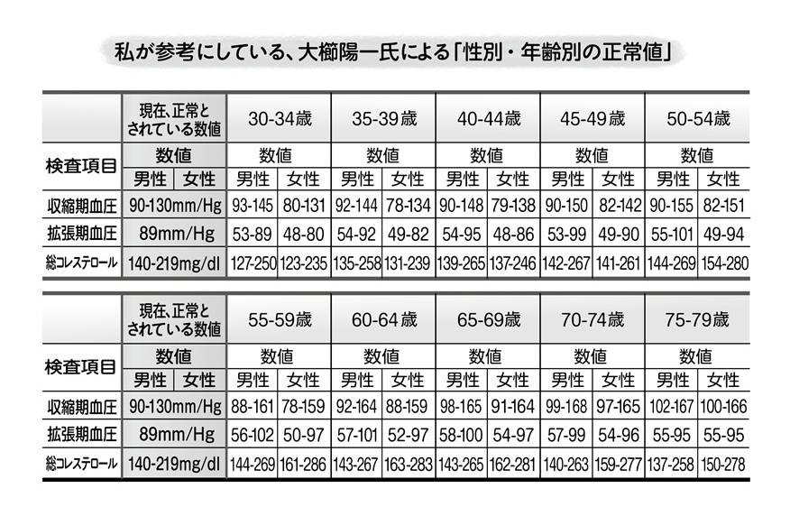

| 医学不要論 | |
| 内海 聡 | |
| (2013) | |
三五館との付き合いも短いようで長く深くなってきた。まずなによりも精神医学の内情を暴露する『精神科は今日も、やりたい放題』と『大笑い！精神医学』を出版していただいたことに、この場を借りて感謝の意を表したい。
なぜこのような出だしからはじめるのか。それはタイトルにあるとおり、この『医学不要論』が、精神医学の枠を突破して、医学全体の諸問題を扱う書物であるからだ。
医学問題について書かれた書物は、日本中に多数あると思う。本文中でも、いろんな方の書物からいくつかの文言を引用させていただいている。私はそれらに大いに賛同する。
しかし、それらでさえも「医学が不要である」という見地に立って書かれているものはほとんどない。しかもそれが現役の、私のような若い医師が書くということは、どれだけの批判を浴びるか想像に難くない。
にもかかわらず、この企画を快く引き受けてくれた三五館に、再度感謝の意を表したくて、このような書き出しから始めた次第である。
この本に書かれる内容は、部分的には多くの医師やセラピストやその他の医療関係者にとってよく知られている事実であるはずだ。しかし、この本ではそれらの話を体系化したことと、健康保険そのものの問題を取りあげたこと、さらに医学の成立そのものに焦点を当てていることに意味があると考えている。何よりここまで医学を否定的に描き出した本を、まがりなりにも医師である私が書いたことに意味があると自負している。だからこそ私は「頭がオカシイ医師」なのかもしれない。
この本に書かれる内容の多くは、海外からの情報をもとにしている。それらは注意深くインターネット上を探せば得られるものでもある。さらにいえば、この本でも書ききれない無数の情報が世界には散らばっている。そのすべての情報を皆さんが把握する必要はない。本質を理解してしまえば、この本を読む読者には事足りる問題である。
注意していただきたいことがある。この本には、世の中でいう「陰謀論」めいたことが書かれている。〝ある人々〟はそれを否定しようと躍起であるが、その〝ある人々〟とはいったいだれであるかに気づいていただきたい。そして、なぜ躍起になるかに気づいていただきたい。
本書に記されているのは「陰謀論」ではない。確かにそこに存在する「思惑」であり「事実」である。それは医学に疑問を持ち、自ら調べようとした人にしか決してわからない。この世のすべてが洗脳に近い状態にあることを、ほとんどの人は理解することができない。
その意味において、この本の目的とは、あなたの医学洗脳を徹底的に破壊することである。拙著『精神科は今日も、やりたい放題』と『大笑い！精神医学』は精神医学洗脳の完全な消滅を目的としたが、医学にも共通の部分が多数含まれている。その上で、一市民として、さらには国家としてどのように医学を考え、扱っていくべきなのかも、この本では提言してみたい。
最後に、いつもどおり、わが妻と娘に感謝の意を表してはじめの言葉を終えさせていただく。
はじめに──「精神医学」から「医学」へ
第一部 医学は必要なのか？
１ 医学の本当の目的は何か
２ イガクムラの実態
３ 数字で見る現代医学のウソ
４ 病気の正体
５ 薬の正体
６ 代替療法の功罪
７ 生命の輪、そして「三つの輪」
８ 社会毒とは何か
９ 健康保険をどう考えるか
10 支配者層とは何か
第二部 病気にどう対応するか？
１ 精神の病気
２ 動脈硬化や心臓の病気とその薬
３ 胃腸の病気とその薬
４ 肺の病気とその薬
５ ガンとその薬
６ 免疫やアレルギーの病気とその薬
７ 血液の病気とその薬
８ 感染症とその薬
９ 栄養の病気とその薬
10 皮膚や耳鼻や目の病気とその薬
11 骨や関節の病気とその薬
12 脳と神経の病気とその薬
13 救急医療を見つめ直す
エピローグ──どうすれば病気にならず、どうすれば治癒するか？
おわりに──あらゆる医学と医者への尊敬の念を捨てよ
装幀◉鈴木正道
図版◉二神さやか
カバー写真
©monzenmachi - Fotolia.com
©sai - Fotolia.com
◉医学とは、そんなに素晴らしいのか
本当の医学の目的とは何か？
まずはここから始めねばならない。なぜならこの問題に答えを出すことができぬほど、全人類は完全に洗脳されているからである。
この問いについて、ある人はこういうだろう。「病気を治すため」。
また、ある人はこういうだろう。「人を死から助けるため」。
また、ある人はこういうだろう。「人に幸福をもたらすため」。
それらは確かに一面的には間違っていない。しかし、本当に間違っていないか、真剣に人類は検討したことがあるだろうか？
この三つの「答え」について考えてみよう。まずは「病気を治すため」。
では、現代の医学は本当に病気を治せているだろうか？ そもそもその病気は本当に病気なのか？ そこから考えねばならない。病気の本質については34ページの「４ 病気の正体」をご覧いただきたいが、ここでは病気を治すということの定義についてまず考えよう。
◉「治す」ではなく「その場をしのぐ」
いったい、「病気を治す」とは何なのか？ これについて、現代の医師であれ、患者であれ、多くの人が、「今の状況が改善し、安定した状態となること」「とりあえず今の苦しさがなくなること」などをイメージしているというのは驚き以外の何物でもない。
これを支えるのが現代医学を語る上で欠かせない「対症療法」（アロパシー医学）の根幹である。
本質的に治すのではなく、その場をしのぐことこそが現代医学の基本姿勢なのである。それは「維持」や「寛解」と呼ぶ類のものであって、決して「治癒」ではない。
「治す」「治る」ということは、本質的にいえば病院に通院しなくなってもいい状態のことであり、患者自身がそのことを気にしなくてもよい状態にまでなった場合のことだ。そうした意味では、現代医学は決して病気を治せないのである。
では慢性病はどうしようもないではないか？ という質問が出そうだが、それについては同様に「４ 病気の正体」を参照されたい。ここでごく簡単にいえば、慢性病と呼ばれるものでも、治すことができないなら最初から治療しないほうがましだ。
現代で病院にかかっている方の多くが、それは治らない病気であり、つき合っていく病気であると、完全に洗脳されている。治らないのなら、その治療には意味がない。繰り返すが、つき合うくらいなら病院になど行っても行かなくても同じである。なぜなら、最も危険かつ、多い病気である〝医原病〟（医療行為が原因で生ずる種々の悪化状態のこと）というものにかからないで済むからだ。しかし、人類にはもはやその発想は思い浮かばない。
よってこの本においては「病気を治す」という言葉の定義は「病院に行かなくなること。病院に行かなくても済む状態になること。病気自体が維持というレベルを通り越して改善すること」とする。この定義を明確にしなければ何のために治療を受けるのかわからなくなる。これは医学不要論を唱える上での最も基礎となるべき事項である。そして、この観点からだけでも現代医学の大半は存在する価値さえないといえる。
◉現代医学の本質は人間を悪くすることになった
次に「医学の目的とは、人を死から助けること」という答えに着目しよう。これは間違いなく医学の役割であり、これまでなしてきた功績でもある。これがあるから医学を全否定することはできないといえる。
しかし、現代医学は死から人を助けるという役割をほとんど果たしていないともいえるのだ。現代医学の中で人を死から助けている分野はほんの一部分しかない。しかもそれが本質的に助けている分野といえば、さらに領域はせまくなる。この不可思議さはこの本を読み進める上で答えを出していってもらいたい。数字やデータについては「３ 数字で見る現代医学のウソ」を見ていただければよいだろう。
本当の意味での医学は、人の命を助けるためのものであり、科学でもある。しかし、現代においてその科学は完全に歪められて人を救うものではなくなってしまった。よってはっきり述べれば、医学は駆逐されねばならない。価値がないものはゴミ箱に捨てられるのが常道であり、それは医学や薬学であっても例外ではない。
治せないものに関しては、治せないとはっきり述べて、それ以上の医原病作りをやめたほうがましである。医学は明確な科学によって、人を死から助けることができる可能性のあるものだけに限定したほうが、医療者たちの満足だけでなく人々からの評価も上がるというのに、ただカネと支配のために無駄な努力をしているだけのように見える。
現代医学や医療の本質は人間を悪くすることになっているのだ。毒を盛り、嘘をつき、体を壊し、さらに医原病を作る。実際のところ、医学の大半はこれしかやっていない。
別の言い方をすれば、教科書や教わっているもののすべてからして間違っていることに気づいていない。
やさしく人の話を聞いてあげたところで、それは医学の本質でも仕事でもないのだ。医学者が患者のことを理解してあげたり、患者が医学者に受容してもらうことを、医学者も自らに課し、人々も求めているようだが、はっきりいってそのようなことはまったく必要がない。
診察室で一度も診察しなくても、話をひと言も聞かなくても、治るものは治る。たくさん話を聞いてくれても、治らないやり方は治らない。というよりやさしくたくさん話を聞いてくれる人ほど治せないのである。
医学や医療にぎりぎりまでかからないこと、これが健康であることや殺されないための最も重要な秘訣だが、一般の人にはそのような発想自体が思い浮かばない。
現代の医学とは、かかればかかるほど悪くなるのである。悪くしないと儲からないのだから。
要するに極論すれば、殺人するためにこそ現代医学は存在する。そして逆説的にいえば本気で死にそうになっている人だけが、現代医学によって救われる可能性がある。毒を以て毒を制すとは聞いたことがあるだろうが、本当に死にそうな人だけが西洋医学の毒により死にかけの体を活性化することができる。
◉「医療化」という巧妙な罠
最後に「医学の目的とは、人に幸福をもたらすため」という人もいるが、この答えには非常に複雑な意味が込められている。
まず断言するが、人に幸福をもたらすことは医学の仕事ではない。
それは人々が医学にそうしてほしいと錯覚しているだけだ。医学は本質的にそのような仕事を背負わないし、仮に病気を治して（ここでの「治す」というのは本質的に治すという意味）幸せや感謝が訪れたとしても、それは副次的に訪れただけのことである。
にもかかわらず、精神医学を筆頭に、医学がまるで医学を通り越して、世界中のいろんな問題を解決して、世界に幸福をもたらさねばならないかのような風潮が、あらゆる分野に浸透している。そもそも医療では解決できない社会的なさまざまな問題を、医療によって解決できると考える概念を「医療化」と呼ぶが、これは非常に危険で愚かな考えであることを悟らねばならない。
その「医療化」という概念自体が、医療業界や製薬業界があなたに向けた洗脳そのものであり、その考えが何の解決も導かないことを悟らねばならない。
人に幸福をもたらすということは本当の医学とは関係がない。もちろん本当の医学であれば一定の割合で人を死から救うことは可能であり、それによって副次的に幸せになれるかもしれないことは述べたとおりだ。
しかし、この考えは決して本当の医学においては持ってはいけない。この三つ目の概念こそ、人を医療詐欺に陥れるための巧妙な罠であることを知っていただきたく、三つ目の問いとして取りあげた次第である。
【医学不要論・第一部❶】
本当の医学とは本質的な治癒をもたらすものであり、それ以外は医学とは呼ばない。病院に行かなくても済む状態になることが治癒であり、それ以外を治癒とは呼ばない。
人の命を必ず救うことはできないが、人の命を奪い尽くしているだけの現代医学は医学ではなく、ただの殺人学である。そして、本来の医学は人を幸せにするものではなく、人の死に立ち会い、力を尽くしても助けられないことがあるのを知っている。その中で一部の人だけが本当に死ぬ寸前の状態から回復して、幸せを副次的に感じるものでしかないのだ。
◉イガクムラの体質
本書を執筆している二〇一三年初春、日本において放射能の問題が物議を醸して久しい時代である。その日本において原子力業界の構造を「原子力ムラ」と皮肉って、批判する風潮が続いている。せっかくだから、私もその概念を利用させてもらって、「イガクムラ」という言葉を作ることにした。これはネットなどでも使われていないようで、ありそうでなかったものの代表格かもしれない。
このイガクムラの構造は、知っている人ならだれでも知っているものであり、取り立てて難しいものでもない。
イガクムラを作っている連中とは、厚生労働省、医師会、各学会、病院協会、製薬会社、患者会、家族会、病気啓蒙を行なう慈善団体、ＮＰＯ法人、人権団体、医療ジャーナリスト、医学雑誌社などであろう。本書はこれらすべてを根底から批判しているのだから、これらの利権集団からどれほどのクレームが来るのか想像に難くない。そして、どれだけクレームが来てもこの本の主張を押し潰すことはできない。
これらすべての業界に及んでいるものの根本的行動原理は「カネ」であり、さらにいえば業界による社会の支配、統制である。
自分たちがその状況をコントロールし、他の介在によって自分たちの平和が乱されることを許さない、それが彼らの考えの根底である。そこには「人々のため」という概念など存在しない。彼らは「人々のため」を声高に訴えるが、本当に人々のためであるならば、業界の変革にも耳を貸すだろうし、何が問題点かを抽出して改善していくはずだが、そこには自己正当化しか存在しない。これは私だけでなく医学に否定的な観点を持つ、あらゆる専門家が同意していることである。
さらにいえば、同じ医学者であっても、現代医学の嘘を見抜いたり、従属していることに疲れきった医学者たちは、私の他にもたくさんいる。それらの人々の中にも金満的な人々はいるだろうが、少なくとも自分で考え、選択し、この業界の体質から抜け出そうとしただけ大いにましであろう。
◉イガクムラの中心存在たち
一般の人にとっても、厚生労働省がイガクムラの中心的存在というのはわかるだろう。
行政として本当に役立つ医学、人のための医学という点において、彼らは何一つ寄与していない。彼らはただ単に医学界や製薬業界に対して認可するだけ、言うことを聞くだけのポチであり、本質的に医学業界や製薬業界を管理するような行政組織とはなっていない。もっといえば、能動的に、支配構造を助長するような行政を行なっているといってよい。
医師会や学会や病院協会や製薬会社がイガクムラというのも想像がつきやすいだろう。
たとえば、医師会は混合診療の導入を拒んでいて、その理由は「日本国民全員が良質で平等な医療を受けるため」らしいが、これがまったくの詭弁であることはこの本を参考にしてもらいたい。
これもまた私でなくても多くの医学者たちが指摘していることであり、今の医学がどれだけ良質でないかは、読み進めれば明らかになることである。
所詮これらの存在価値は、自分たちの利権を守るためであり、本当の医学に寄与するためではない。
◉イガクムラの見分け方
先にあげたその他のものに関しては、なぜイガクムラに加えられるのか？ ということを多くの人が疑問に思うかもしれない。
患者会、家族会、病気啓蒙を行なう慈善団体、ＮＰＯ法人、人権団体、医療ジャーナリスト、医学雑誌社などには大利権産業の手下ともいえる人々がたくさんいるのだ。このような人々をフロントグループといって、利権側に属しながら甘い汁を吸っている。その見分け方はとても簡単なのだが、ほとんどの人々はそれを考慮しない。
本書の現代医学批判は、そもそも私が一人だけで考えたものではない。それらの多くはすでに証明されたものであり、他の医師でさえ知っていることが山ほどある。
だから、イガクムラの見分け方としては、本書に載っているような医学の真実に則って行動している人々は、完全ではないかもしれないがイガクムラの一員ではない、と思えばよい。
しかし、西洋医学の莫大な利権に寄与している人々は、ある意味ですべてイガクムラの住人である。たとえば、フロントグループの講演会に協賛している会社などをみれば、すぐにそのような構図は見えてくる。そのようなフロントグループには、強力な学会や製薬会社がスポンサーとしてついていることが多い。またスポンサーがついていなくても現代西洋医学を推奨することが多い。
もうこのような構造による利権・カネ作りはやめにしようではないか、本質的に嘘のない医学世界を作ろうではないか。それがこの医学不要論の本質であろうと思う。
私は、医療という行為によって稼ぐなと言っているわけではない。原子力ムラへの批判が、原発のような危険な方法によって、電気やカネを生み出すのはもうやめようと言っているのと同じように、イガクムラも一度完全に解体して、真に価値のある医学、真の治す医学者こそが収入が得られるように、すべての構造改革を行なおうと唱えているのである。
有名な医療マンガ『ブラック・ジャック』（手塚治虫）を思い起こしてもらえばよい。ブラックジャックも完全ではないが、非常に優秀な技量により、病院に行かなくてもいいレベルの治癒をもたらす。その対価は命の値段として払わされる法外な料金である。
私はブラックジャックの料金を基本にしろといっているわけではないが、この無駄な医療にお金を払っている構図に、いい加減一般人こそが気づくべきだと述べているのだ。このお金や健康保険にまつわる話については、「９ 健康保険をどう考えるか」も参照していただきたい。
◉イガクムラ学会でのエピソード
ここでイガクムラにおいての典型的な話を二つ紹介しよう。この話は両方とも私の知人の経験談である。
ある医師ではない学者が医学シンポジウムにおいて、医学とは一味違う、代謝や免疫についての講演を行なった。その理論は通常の医学者にはとても理解できないくらい難しいものだった。専門でなければ、教授だろうが助教授だろうがとても理解できるレベルでなく、しかも西洋医学の生理理論や薬理理論を明確に否定しているものであった。もちろんその理論は現代科学（現代医学ではなく）において証明された真実ばかりである。
ここで医学者たちのとった行動が面白い。そのエライ医学者たちはその学者の講演時間が半分も残っているのに、無理やり打ち切りにしてしまった。自分たちがバカであることをわからされるのが耐えられなかったのだろう。
ある別の医学者（こちらは医師）は小児科の学会に乗り込んだそうだ。そして、インフルエンザワクチンやタミフルに関して、非常に科学的で興味深い質問をいくつかした。
そうするとここでも似たような反応が起こった。通常、学会での質問は自由であり、自由に議論してこそ成り立つものなのだが、座長はその質問が終わる前にさえぎり、「この質問に答える必要はない」と言ったそうだ。
当然、答えられないのだからその反応は当たり前だが、そのときの他の参加者（＝医学者）たちの反応がすごい。その場に集っている小児科医が満場一致で、座長の判断に大拍手したのである。
医学者という人種は、人を治すためとか真実を追求するために存在しているのではないのだと、骨身に染みる話である。
これがイガクムラの実態であり、このイガクムラに自浄作用などというものは存在しない。とにかく、あらゆる人々が、この構造の根本的矛盾と医学者が嘘をつくことの背景を知る必要があるのだ。
【医学不要論・第一部❷】
イガクムラの正体を知るべきである。それは単に行政や医学界だけではない。そして現代医学者のだれも病気を治すことはできない。それは代替療法の医学者であっても大半はそうである。
イガクムラを一度完全に解体してしまって、真に価値のある医学、真の治す医学者が現れることを切に願う。私は医学者ではなく告発者であるにすぎない。
◉医原病や医療システムによって数十万人が死んでいる
ここからは現実的な数字や統計を出していくことにしよう。
最先端であるとされるアメリカ西洋医学において、最も死亡数が多い病気は何なのか、皆さんはご存知だろうか。
医療（西洋医学）が原因で死亡する米国人は毎年七八万三九三六人、ちなみに心疾患（心筋梗塞など）が六九万九六九七人であり、ガンは五五万三二五一人である（ニューヨークのＮＰＯ法人「アメリカ栄養研究所」の創立者であるゲーリー・ヌル博士の二〇〇四年の論文より）。この数字は近年においては若干の変更が見られるだろうが、私個人としては、さらに医原病死の数が増えているのではないかと推測する。
ヌル博士は、「米国の医学システムは米国民の死亡や負傷の原因の第一位である」としている。西洋医学による医原病や医療システムによって、毎年数十万人もの人が死んでいるということだ。
残念ながら、これに類する日本国内でのデータはない。しかし、それは日本において医原病がないということでは決してない。まともな調査さえも行なわれておらず、日本より西洋医学が進んでいるとされるアメリカがこうなのであれば、日本においてはより医原病の発生比率は高いと推測されるのは当然だ。
アメリカの医原病を扱う研究は他にもある。バーバラ・スターフィールド医師は自身の研究の中で、「医師はアメリカでの死亡原因の第三位であり、毎年医原病によって二五万人が死んでいる」と述べた。
しかも彼はその研究論文の中で「提供された研究のほとんどが入院患者のみを対象としていること」「研究は死亡だけを対象としており、苦痛や身体障害などの有害影響などを含んでいないこと」などをあげ、実態はさらにひどいことを示唆している。
このゲーリー・ヌル博士の研究と、スターフィールド医師の研究は、結局のところ同じことを言っていると考えてよいだろう。
◉医師のストライキのおかげで激減した死亡者
他にもまだある。米国「医師会ジャーナル」誌において発表された論文からの抜粋だが、世界で最も医学（西洋医学）が進歩・発達しているといわれているアメリカ合衆国においてすら、このような恐るべき事実がある。
「毎年一〇万六〇〇〇人が医学的には正しく処方された薬が原因で死亡している」（Lazarou, J.: Journal of American Medical Association 279［15］）
ＦＤＡ（アメリカ食品医薬品局）という米国政府機関の承認を受けた薬を、医師が西洋医学的に正しいと判断して処方し、その薬が原因で死亡する患者が毎年一〇万六〇〇〇人にものぼるというのだ。
しかしそれは当然のことである。なぜならＦＤＡという組織がいったいどのような組織なのか、医学者も医療関係者も一般人もほとんど知らないからだ。
ＦＤＡはアメリカ人の健康を守るために存在しているわけではない。そのような目的はただのカモフラージュにすぎない。これについては「10 支配者層とは何か」を参考にされたい。
米国以外にも次のような報告がある。
一九七三年、イスラエルで病院ストライキが決行された。診察される患者の数が一日六万五〇〇〇人から七〇〇〇人に減らされて、ストは一カ月続いた。その期間中、同国内での死亡率が半減した。同国でこれほど死亡率が激減したのは、一九五三年にやはり医師がストライキをしたとき以来だった。そして病院が再開すると、死亡率は元に戻ったのである。
カナダの急性期ケア病院における医療ミスで毎年二万三七五〇人が死亡。その多くは医原病であり防止可能な問題を含んでいるという研究がある（Canadian Institutes of Health Research （CIHR） and the Canadian Institutes for Health Information （CIHI）, Adverse Events in Canadian Hospitals. May 2004）。
◉八五％の「病気・症状」は原因不明
さて、ここまで医原病における簡単な海外のデータを拾ってみたが、ではこの数字は正しいだろうか？
多くの人は医学が正しいと信じ、その上で出されたこの数字をにわかに信じることができず、しかしそれでもこの権威者たちが示したデータに一定の評価を下すかと思う。しかし、私の意見は違う。
これらのデータでさえも氷山の一角にすぎない。なぜならこれらの学者たちは、医学というものの本質が何であるかを見逃したままに研究を重ねているからだ。
その謎を解く別のデータをここでも引用しよう。「アメリカ医学ジャーナル」に報告された概要である。
一四の一般的な症状に対する診断所見の結果。
・一〇％：心理的
・一六％：器質性
・七四％：不明（Unknown）
（Diagnostic Findings in14Common Symptoms. American Journal of Medicine 1989 86［3］: 262）
この研究結果によると、病院を受診し、治療された一四の病気や症状の大部分（七四％）は、原因がわからなかったというものだ。この数字は日本の病院や医学においても大差ないはずだ。
また、心理的原因として一〇％がカウントされているが、この論文ではどうやって「その原因が心理的である」と証明できたのだろうか。私は前著『精神科は今日も、やりたい放題』『大笑い！精神医学』で精神医学や心理学の嘘を暴露しているが、これもまたその話につながる数字である。
つまり、この心理的とカウントされている一〇％でさえも、本質的には何の原因も突き止められてはおらず、個人の主観によってそうであると思いこまれているだけであるといえる。
これはどういうことだろうか？
つまり、八五％に近い数の病気（とやら）、症状（とやら）、患者（とやら）がさっぱり原因もわからないまま、ただ対症療法されているという現実があるということだ。
しかもその対症療法とやらが安全であるかどうかさえ、まったく担保されてはいない。というより本書を読み進めていただければわかると思うが、それらはむしろ危険極まりない方法である。
◉不要なＸ線撮影
少し話題を変え、ここでは検査について少し考えてみる。
著名な米国の医学者であるロバート・メンデルソン医師は、アメリカで行なわれているＸ線撮影の三〇％は、医学的に何の必要もないと述べている。
私はその数字でさえ少ないと思うのだが、『医療殺戮』の著者であるユースタス・マリンズはその著書の中で、Ｘ線撮影による不必要な放射線による遺伝子への影響により、アメリカ人の三万人に死者が出るであろうことを示唆している。
では、日本ではどれほどまでにこの検査の影響を受けているであろうか？ 日本は世界一のＣＴ保有国であり、その台数や検査数は二位以下を大きく引き離している。
二〇一一年の原発事故以降、放射能の問題を論じるときに、日本国内で原発事故により被った放射能被曝は、ＣＴなどより低いなどという論調で扱われ、それがゆえに安全で心配ないなどと報じられてきた。この報じ方は内部被曝を無視した嘘でしかない（内部被曝問題については本書では取り上げないので、他の有志の方々の書物を読んでいただきたい）が、その安全と謳われて錯覚させられているＣＴ自体がとても危険な検査だということだ。これを日本は世界一保有し、その検査数もまた世界一である。
言い方を変えれば、日本人は世界一ガンになりたがっている愚かな国民である、ということになる。
このような検査は無数に存在するのだ。しかしまた、勘違いしないでほしい。私はＣＴを完全否定しているわけではない。それらのリスクをよく考えたうえで、やはりＣＴ検査をやったほうがいい場合も、少なくはあるがちゃんと存在するのだ。
まだここまでの内容は表面的なものにしかすぎない。しかし、そうであってもなぜこのような情報が出回らないのか、本書を読んだ人は不思議に思うかもしれない。それさえも大きな誤認なのだ。
何度も書いているように医学は人を助けるために存在しているわけではない。ひたすら病気を作るために存在し、そのためなら情報操作や情報捏造など、当たり前に行なわれる分野なのである。それはもしかしたら人間そのものの本質かもしれないのだ。
◉効かない薬を「効かせる」ようにする捏造の本性
ほとんどの人々が信じている権威、論文、研究、教科書......それらは嘘で塗り固められているということだ。教科書やそれを作っている人間たちこそが間違いを広めている張本人なのである。その教科書のもととして引用されているのが研究や論文であり、もちろんそれも捏造や情報操作だらけである。
そして、その根幹をなすのがゴーストライティング、つまり「代筆による嘘の報告と研究論文」である。これは先進国においては当たり前のことであり、アメリカなどではそれを追及している人々もたくさんいる問題なのだ。
しかし、日本人は平和ボケしすぎて、そんなことが世界で起こっていることさえ知らない。
ジャーナリストのロバート・ウィテカーが運営する「Mad in America」というサイトから一部要約して引用しよう。「グラクソ・スミスクライン社のゴーストライティング文書」──営利目的の研究におけるゴーストライティングを、国立衛生研究所はいかに阻止すべきなのか──という記事である。
この、米国政府監督プロジェクトという、連邦政府の「腐敗を暴く」非営利監視調査団体に掲載された資料には、抗うつ薬「パキシル」の販売を一〇年以上にわたって支えてきたゴーストライティングのことが記されている。この企画には多くの著名な精神科医も関与しており、今も彼らは多額の補助金をＮＩＨ（国立衛生研究所）から受けていることが、団体の資料文書で明らかにされている。
それによると、スミスクライン・ビーチャム社（現在のグラクソ・スミスクライン社）は論説、医学誌記事、医学教科書などに多くのゴーストライティング代金を支払っている。一例をあげれば、サリー・レイデンとダイアン・コニグリオが、ゴーストライティングに協力した事実がアメリカで公式に暴露されている。二〇〇一年、サリー・レイデンの手助けで書かれた「スタディー３２９」の論文はあまりにも有名だ。これは「Journal of the Academy of Child and Adolescent Psychiatry」誌に発表され、主執筆者のブラウン大学医学校マーチン・ケラーとその他二一名の著名児童精神科医らが、「このパキシル研究は青年期の大うつ病治療におけるＳＳＲＩ、パロキセチンの有効性と安全性を示すエビデンスを提供するものである」と報告した。
しかし、グラクソ・スミスクライン社の内部書類には、「この研究はパキシルが実際には青年期うつ病治療における有効性を示しておらず、公表が望まれる論文ではない」ということが認められていたのだ。つまり、パキシルはまったく薬と呼べるレベルではなかったのに、うまくいかなかった研究をゴーストライターが肯定的な研究に変身させ、その不正な科学論文にアカデミックを装う精神科医が署名するという寸法だ。ケラー博士は二〇〇六年の会計年度以来七〇〇万ドルをＮＩＨの財源から受け取っている。
これらはアメリカにおいて暴露され、公式に発表されている内容である。私もそのすべてを見たわけではないが、このような発表の一部始終を見なくても、医学というものの本性、今の医学が出している結果、その悪魔的なまでの産物を知ってさえいれば、俯瞰して把握することができる知恵だということができる。
【医学不要論・第一部❸】
先進国において最も多い病気であり死因であるものは「医原病」である。しかも現在そうと判明しているものですら氷山の一角なのである。
現代医学のほぼすべてに科学的根拠はなく、それが対症療法（アロパシー医学）を生み出すもととなる。あなたが知っている検査の安全性は嘘であり、あなたが信じる教科書は嘘である。その教科書や論文たちは常に捏造と情報操作に満ちている。
◉医学不要論における「病気の定義」
「１ 医学の本当の目的は何か」において、治癒とは何かについての私なりの定義をした。それと同時に、ここでは病気についての本質的な定義をしなければならない。これは医学不要論における基本的な観念であり、これを定義せずして医学の何が不要なのか論じることさえできない。
「病気とは何か？」と問われたとき、ほとんどすべての人が「苦痛」や「症状」と同列して語ることが多い。確かにその気持ちはわかる。
しかし、拙著『大笑い！精神医学』でも述べたとおり、この考えこそが医原病を作り出す根幹なのである。
その苦痛が病気であること、その症状が病気であることを直結させてしまえば、それは対症療法であるアロパシー医学への道を開くだけである。そして、それは病気を治すことにはつながらない。
なぜ医学において診断をするのかを考えねばならない。本来、その診断は枠にはめて安心したり、グループ化するためのものではなく、その診断はすべて本質的な治療に結びつくためにこそ存在する価値があるはずである。医学不要論では、その病気、その定義、その診断が治療に本質的に直結しなければならない。
具体的に述べれば、一〇〇％因果関係が明らかとなっており、それが治療に直結し、本当の意味での治癒に結びつくもの、それのみが病気であるということである。
◉「恋の病」だって医学の病気になれる
「原因がはっきりしていなくて、治らない病気、苦しんでいる症状はどうするのだ？」とすぐに反論が返ってきそうだ。
私も以前は苦しいという主観を重視すべきだと著書に書いていたが、それは医療化の温床になることを悟ったあとは、少なくともそれは「医学における病気」ではないと考えている。外科系の医師などにはこれに近い感覚を持っている人がいるようだ。
「原因がはっきりせず苦しんでいる症状」を病気とするなら、いわゆる「恋の病」でさえも、医学における病気としての立場を持つことになってしまう。もちろんそのようなことはなく、それらに医学的処置を施しても回復を促せるわけではない。
はっきりいってしまえば、症状はあるが原因が不明なものは、すべて「原因不明の難病」とか「医学では治らない病」などに統一してもらえば結構である。たとえば、多発性硬化症、パーキンソン病、クローン病、筋萎縮性側索硬化症（ＡＬＳ）などがそれに当たろう。
こういう主張をすればするほど、ヒトデナシとか、人の心がないとかいわれそうだが、そもそも前述したように医学は科学であって、癒しや共感を目的としたものではない。そのような考え方こそが医療化を生み出し続け、不要で無駄な医療の普及に貢献してきたことを知らねばならない。
実際、さまざまな治らない病気と扱われているものにおいて、治癒するものはたくさんあるのだ。それは一般の人がその方法を知らないだけでなく、病気に対する捉え方が間違っているからだ。このあたりは第二部を参考にしていただきたい。
◉本質を追究しない現代医学
ちょっと医学から離れて考えてみよう。仕事でなんらかの問題が生じたときに問題解決能力がある人ならどのように考えるだろうか？ 通常はその問題の理由や原因となっているものに働きかけ、それを取り除いて問題を解決しようとする。
これに対して、問題解決能力がない人の場合、理由や原因を解決することなく、目先をごまかしたり、しばしのあいだ問題が噴出しないように取り繕えばよいというふうに働きかける。
これは医学においても、本質的な治癒に向かうためには、同じアプローチが必須なのである。しかし、現代医学はそのようなアプローチをまったく追究していない。
ある病気があった場合、その原因を一〇〇％証明するというのではなく、患者群の中にこういう人、こういう要素が多かったから、その人たちに効く薬や治療方法を編み出そうというアプローチを行なう。
もう少し具体的に説明してみよう。たとえば、過敏性腸症候群という概念は、暴飲暴食したり、ストレスが多いとなりやすいとされるが、現実的には、暴飲暴食したり、ストレスが多い人でも過敏性腸症候群にならない人がたくさんいる。つまり、「暴飲暴食やストレスが多いほうがなりやすい」という発想にそもそも意味がないのだ。
そうではなく、「一〇〇％この原因で、この病気が起こっている」というのを突き止めねばならない。そうでないと真の治癒や結果が出ないからだ。
はっきりとした原因がつかめてもいないのに、疾患化したり、薬を開発するなど愚の骨頂であり、さらにいえばそれはもう医学が治療すべきものではない。こんなものが本質的な治癒など生み出そうはずがない。
もちろん本質的な理由を一〇〇％見つけられないことはあろうが、そのような徹底さをもって追究を重ねるのは、医学以外の科学（たとえば物理学とか分子学とか）であれば当たり前のことであるのに、そのようなアプローチを重ねようとせず小手先のごまかしで取り繕おうとする。
結果として一〇〇％の因果関係をまったく突き止めることができないわけで、現代のように治せない医学が跳梁跋扈するのは当たり前とさえいえる。
◉因果関係がはっきりしていて治癒できる「心筋梗塞」
現代医学において数少ない証明できる病気の代表格が心筋梗塞である。
心筋梗塞は心臓の血管が詰まる病気で、心筋梗塞において心臓の血管が詰まる確率が何％かといえば、当然一〇〇％である。というより、心臓の血管が詰まっていることを証明したから、それが平常状態とは異なることも証明したから、初めて心筋梗塞という病気だと認定しうる。
もちろん、心筋梗塞という病気も、動脈硬化が原因の一つであっても、その動脈硬化は一般の人が知っている要因だけで起こるわけではない（第二部「２ 動脈硬化や心臓の病気とその薬」を参照）。しかし、これはその病気が存在していることを示すための最低条件なのだ。そして、その最低条件をクリアしているからこそ、死に直結するような心筋梗塞であっても、詰まった血管をなんとかすれば状況が変わるという結論に至り、初めて治癒の可能性が訪れる。そういう意味で、心筋梗塞は、現代医学がきちんと治癒できる数少ない病気なのである。
この世にある多数の、因果関係も証明もできていないさまざまな病気を、病名をつけて治療していることがナンセンスなのだ。違う症状が出ていたとしても、原因は同根かもしれないのに、その区別さえできていないのが今の医学なのである。新しい病気が見つかったと定義するなら、完全に解明してからにするのが筋である。
私は講演などでよく、「その病気、そもそも存在しません」という表現をする。これには大きく分けて二つの意味がある。
一つは証拠や証明がなくして医学の病気と規定することはできないという意味。
もう一つはもともと人間の病気ではなかったのに、「作られた」「仕立てられた」という意味。この二つである。この前者のほうはすでに述べてきた。では後者はどうか。
◉「なぜ野生動物はガンにも糖尿病にもならないか？」から、病気を考える
よく言われる話として、野生動物はガンにはならないという説がある。これに対し、一般の人は野生動物が長生きしないからガンにならないのだという論調を並べる。前者はほぼ正しいが、後者は正しくはない。
これは動物学者や獣医からの受け売りだが、野生動物でも長生きしている動物は当然たくさんいる。それでも、その動物たちはやはりガンの発生率が人間とくらべ、格段に少ないそうである。野生動物がかかる病気の筆頭は、感染症、骨折による死、飢餓、老衰や食欲不振に伴うものであって、リウマチで足を引きずっている野生動物もまず見かけない。彼らには糖尿病などという生活習慣病もほとんど皆無である。
つまり、これらに代表される現代病というのは、大半は人的世界によって作られた病気なのである。しかも、その原因の大半になっているのは社会毒（第一部「８ 社会毒とは何か」を参照）、食べ方（第一部「７ 生命の輪、そして『三つの輪』」や第二部「９ 栄養の病気とその薬」を参照）、環境物質（化学物質やいわゆる環境ホルモンなど）であって、それがなければその病気にはとてもなりにくいのである。
このことを示す最も有名な例がエスキモー（イヌイット）の話だ。昔のエスキモーはほとんどの人が動脈硬化性疾患やガンにはならなかった。現代科学において一番の要因と推測されているのが、彼らが生の質のいいアザラシ肉を食べていたからではないかということである。その中には多くの微量元素やビタミンやＥＰＡその他が含まれていた。しかし、その後、彼らは移住し、西洋的な食生活や住環境に囲まれるようになる。そうすると彼らには今までほとんど経験したことのなかったガンや動脈硬化性疾患が激増したのだ。
これは彼らが完全な健康種族だということをいいたいわけではない。当然、アザラシその他が狩猟で獲れなければ、彼らは別の病気になるし、現代西洋医学では普通に治ったはずの感染症でさえ、その医学がなかった彼らは死んでいたケースもあると思われる。しかし、この話はとても参考になる。
あなたの病気は必然として起こっているし、本来人間は現代人がかかる多くの病気を、そもそも持ち合わせていない。これは決して宗教的な感覚ではなく、明確な科学的考察である。
ガン、動脈硬化性疾患、膠原病、アレルギー、また現在原因が特定されていない多くの身体疾患とやらは、実は人間がこれほどまでにかかる病気ではなかったのだ。そこから考えを巻き戻さない限り、本当の意味での治癒は可能性としてさえ見えなくなる。
◉基準を変えれば「病気」はいくらでも作れる
この発想はいわゆる「病気作り」につながる。
「病気作り」とは、製薬会社などが薬の販路を広めるために、医学界と共調して、さまざまな生理的現象を社会問題化して「病気」として定義し、治療的介入を行なうことにより、利益を得ることであり、現代医学は病気作りに満ちている。
社会毒や環境物質でなくても、もっと簡単に病気を作ることもできる。それが基準の変更による病気作りである。これは社会毒による病気作りよりも簡単である。いわゆる「検診」や「メタボの基準」などがこれに当てはまる。一般の人は検診という行為のほとんどが、どれだけ無駄であり医学詐欺の温床になっているかに気づいていない。これらを知りもせず医者にかかれば、仕立てあげた病気が一つできあがる寸法である。
これはガンであっても同じことが言える。本物の「ガン」とウイルスその他による「腺腫、異形成」（上皮細胞の慢性変化など）の診断の違いさえ多くの人は知らない。これを書物によって世に知らしめた日本人の代表が、『あなたの癌は、がんもどき』などで知られる近藤誠氏である。本書でも近藤誠氏の話は少し出てくるが、第二部でもその部分は参考にしていただきたい。
たとえば「子宮頸ガン」として扱われる「上皮内ガン」の場合、ほとんどが性行為で感染するヒトパピローマウイルスの痕跡があるが、これはいわゆる悪性のガンではない、と近藤誠氏はいう。つまり、これはガンという病気の概念を広げて、人為的にガンを作っているのだ。
さらに言えば、ガンは病理診断をもとに行なうが、その病理診断がすごくいい加減なことを皆さんはご存知だろうか。実はこれもまた病理医の主観である。
臨床医をやっていると、病理医の診断が違うなどというのはよく見かける行為であり、外科医や内科医でも病理の顕微鏡をのぞく人がいるが、その人たちと病理医の診断も、これまた違うことがしょっちゅうである。つまり、同じ状態を診て、ある医者はガンだと言い、ある医者はガンでないと言うのだ。
◉ニセ病気の治療が命を縮める
病気というもの自体が曖昧に作られているこのような状況で、どうやって本質的な治癒が訪れるだろうか。決して訪れはしない。
その上、現代では命にかかわらない苦しい症状を、すべて病気とすることが義務づけられ、一般の人もそれを治療するのが当然だと思っているので、もう手には負えないのだ。
現代のニセ病気の大半は、それを治すという発想そのものが問題なのである。風邪の症状から胃腸の不良、体の痛み、頭痛、だるさ、めまいなどから、さまざまな精神症状（うつや不安や不眠やその他など）など、さらにいえば生活習慣病からアレルギーなどに至るまで、それらのほとんどは治してはいけないものである。これらは第二部を参照にしてもらいたいが、違う言い方をすれば「医学が治すべきものではない」ということだ。
いわゆる死にかけたら、もしくは瀕死という状態であれば病院に行くのはかまわない。前述したように、死にかけ状態であるからこそ、現代医学が使う毒が初めて効果を発揮する。救急で現代的大病になったときのための、予防線を張っておくことは必要であろう。
しかし、ほとんどの安易な病気、安易な症状で医者にかかるのは命を縮めるだけなのである。ぜひそのことを肝に銘じていただきたい。
【医学不要論・第一部❹】
現代医学が病気として扱っている症状の定義は、そのほとんどが間違っていると言ってよい。それらは原因や因果関係がはっきりしないものばかりで、病気についての定義となりえていない。人間はもともとそれらの病気にはかかりにくい生物であり、病気作り、基準の捏造による偽の病気や、化学物質、環境物質、栄養素などによるさまざまな問題点を振り返り、真の病気を明らかにして定義していく必要がある。
◉アロパシーとホメオパシー
現代の薬についての本質を語る前に、まずアメリカ医学の歴史について少し記載しよう。
アメリカでは医師会の設立当初から、アロパシー医学（いわゆる対症療法）を治療の根幹としてきた。それがどれだけの医原病をもたらし、医師会や医学界や製薬業界にカネと支配をもたらしてくれるのか、彼らは熟知していたからである。
そして、彼らはその対症療法の方針に従わない分野、派閥といったものに対して、徹底的に攻撃を加えた。アメリカにおいてその攻撃を加えられた代表格こそがホメオパシー医学（いわゆる同種医学）である。
ホメオパシー医学はハーネマンという医師が提唱したもので、同毒を少量投与することで人の免疫反応を賦活化し、根本的に治そうとする試みの一つだ。レメディと呼ばれる方法を用い、カウンセリング的な要素も持ちながら、自然治癒力を鼓舞していく。欧州を中心に広がった、根治を考えようとする代替療法の一分野である。これは神経、筋、関節分野におけるカイロプラクティックなども似た構図があった。
ホメオパシー医学やカイロプラクティックはアロパシー医学が浸透するまで、アメリカにおいて実はかなり優秀な成績を残していた（もちろん完全ではない）。しかし、利権派の人間たちにしてみれば、健康などの分野において優秀な成績を残すということは、カネのなる木を失うということである。
そこで今から一〇〇年以上前、アロパシー医学派は徹底的なまでにホメオパシー医学を潰すという作戦に出た。その後、攻撃はカイロプラクティックにまで及んだのである。
この主導的な役割を担ったのがアメリカ医師会（ＡＭＡ）である。そのＡＭＡで中心的な役割を担っていたのがジョージ・Ｈ・シモンズであり、モリス・フィッシュベインだ。そして彼らは「10 支配者層とは何か」に取り上げるような支配者層と密接な関係にあったことが、多くの資料から明らかにされている。
西洋医学側の攻撃は非常に功を奏し、ホメオパシー医学は滅びる寸前であったが、現在、有志たちの努力により少しずつ復調の兆しが見えつつある。
私はホメオパス（ホメオパシー医学を用いる人々）ではない。カイロプラクターでもない。ネットや講演などでも一定の範囲でホメオパシー医学の問題点も伝えている。しかし、それでもなおホメオパシー医学を応援することには意味がある。
このような代替療法的医学を応援することは、西洋医学以外の方法によって根本的に人の病気を治そうとする人々、たとえばナチュロパシー医学（いわゆる自然療法医学）やオーソモレキュラー医学（分子整合栄養学と呼ばれる栄養学を用いる医学）などを応援することにもつながるのだ。
つまりこれらはやり方は違えど、すべてその病気に対して「根本的に治療することはできないだろうか」という視点に立っている点で同義であり、やり方の違いは枝葉の問題にすぎない。
東洋医学にもそのような観点はあるのだが、現代の東洋医学はむしろその観点が失われつつあり、商業意識や医療化や病気作りにむしろ協力的であるようにさえ見える。
たとえば最近、市販薬で漢方が売られているが、これは東洋医学の本質を忘れ、ビジネスに走った典型例である。また、韓国ドラマや中国ドラマなどでおなじみだが、そもそも漢方は国の皇帝であっても毎日飲んだりしない。病気になったときに飲むのが基本であり、基本は日々の食事を作る役職のほうがエライくらいなのである。それを忘れてしまった現代、これは部分的にも東洋医学を学んだ人間としては悲しいところがある。
◉「根本的に治すことを目的として作られた薬」はない
さて、なぜホメオパシー医学やその他の代替療法医学には意味があるのか？
彼らが持っている唯一無二の価値とは、その手法ではない。私に言わせれば、ホメオパシー医学であれ、ナチュロパシー医学であれ、オーソモレキュラー医学であれ、東洋医学であれ、必ず欠点や「あら」がある。しかし、それは大きな問題ではないのだ。
彼らのすべてに共通する点は、西洋医学やアロパシー医学が「いかにインチキであり、詐欺であり、嘘であり、捏造を繰り返し、病気を治すと言い張り、医療産業として儲け続けてきたか」ということを、歴史や社会学的視点からも知っているという点にある。
ここまでを読んだ上で、現代の薬について振り返ってみてほしい。現代西洋医学の中で、たとえこれらの代替療法医学が不完全であったとしても、その思想に近い形で「根本的に治すことを目的として作られた薬」がどれくらいあるか、一般の方々はご存知だろうか。
答えははっきりいってほとんどゼロである。
あるわけがない。なぜなら最初からそのようなものを作る気が医学界にも製薬業界にもまったくないからである。ある、ある、作る気はあると常に言い続けてはいるが、実際作られたものの中にそのような薬は本当に、ない。なぜなら、それらの大半は対症療法を目的として作られたからだ。そして何よりも因果関係が不明なままで治療薬として開発されてきたからだ。
◉犯罪的な事例・認知症薬
皆さんが飲んでいる西洋医学の薬というのはすべて毒である。一般の人が考える本質的な薬（いわゆる治癒をもたらすモノ）という観点でいえば、そのような薬はなきに等しい。
それはこれまで述べてきたように、西洋医学の薬のほぼすべてが、西洋医学の思惑に従って、病気を作り、体を悪くするために作り上げられてきた物質だからである。
二つの犯罪的な例をあげよう。一つは認知症に使われる薬、もう一つは抗生物質について取り上げてみる。
認知症薬の多くはアセチルコリンエステラーゼ阻害作用を持っている。認知症という病気の嘘、アリセプトに代表される認知症薬の嘘は前著でも述べたが、ここでもあげてみようと思う。
サリンや有機リンと呼ばれる物質は猛毒として有名だが、これもアセチルコリンエステラーゼ阻害性物質である。もちろんアリセプトとこれらが完全に同一ということではない。簡単にいうと前者は可逆性物質であり、後者は不可逆性物質であり、さらにいえばアリセプトとサリンの違いは、可逆性だけでなく立体異性体の混合物であることで説明される。わかりやすくいうと、やや改造を加えているということであり、完全には一致しないし、危険性も異なる。
しかし、基本的な機序が同じだと聞いたときに、一般の人は何を想像するか。少々改造されたからそれを飲みたいと思うだろうか。おそらく事実を聞けば聞くほどに、それを飲みたいという人は減るだろう。
そもそも、これが作られることには別の理由があるのである。つまり、製薬会社はもともとこれに効果があるとか、役に立つとかいうことを前提として作っていないということだ。
それを端的に示すのがアリセプトにおける公式添付文書である。その最初にはこうある。
【効能又は効果に関連する使用上の注意】
① アルツハイマー型認知症と診断された患者にのみ使用すること。
② 本剤がアルツハイマー型認知症の病態そのものの進行を抑制するという成績は得られていない。
③ アルツハイマー型認知症以外の認知症性疾患において本剤の有効性は確認されていない。
そして、この薬は専門的にいうと蛋白結合率が非常に高い。つまり、他の薬との薬物相互作用を起こしやすい物質ということだ（ドネペジル蛋白結合率九六％）。
複数の薬を飲んでいる人は、このアリセプトがいろんな意味で強く作用する場合がある。そう、いろんな意味で。
つまり、このアリセプトを総評すると、認知症の定義さえはっきりしない中で、製薬会社でさえ効果がないことを認めており、治癒するどころか進行を抑制するという根拠さえなく、それでいて徹底的にマーケティングされ世の中に出回っているということである。しかも蛋白結合率が高く相互作用により弊害が出やすい。つまり、サリンに近づきやすい。
これが西洋医学と製薬会社がもたらす薬の正体である。
皆さんがそれぞれの認知症薬について徹底的に調べることができたとすれば、きっとこのアリセプトと同じような結論にたどりつくことがほとんどであろう。だからこそ、私は西洋医学の薬のほぼすべてに価値はないと言っている。
◉全否定できない抗生物質
では、もう一つの例を見てみよう。ここでは抗生物質である。ここでも皆さんは思うだろう。抗生物質まで全否定するのか、と。
確かに全否定したい気持ちは山々だが、この薬を全否定するのは難しい面があるのは、さすがに私でもわかるのだ。ではこの抗生物質が良い薬かと言われれば、当然ながらそのような結論にはならない。それでも全否定できないのは、医学不要論の根幹である「死にかけだから使う価値があるかもしれない」という発想に結びつく。
抗生物質には「飲み薬」と「点滴」があるのだが、まずは飲み薬について考察してみよう。抗生物質を処方されるものの大半は風邪症状であろうが、皮膚疾患の一部などにも現代医学では使われている。それらのすべては無駄なだけでなく、有害極まりない使用法である。
ごく簡単にいえば多くの医師たちが述べているように、ウイルス疾患が主体の風邪症状に、抗生物質が効くわけはなく、むしろ悪化要因になるのがオチである。
では、点滴の抗生剤についてはどうだろうか。確かに現代の病院においては、その大半が無駄と思われる使用法ばかりしている。たとえば、胃腸炎に対する抗生剤投与、術後の予防的投与、免疫抑制剤（免疫抑制剤自体、無駄が多い）投与時の予防的投与など挙げればきりがない。
しかし、その一方でどんな内科医でも外科医でも、本当に死にかけと呼べるような病状の感染症が、ただの抗生剤で劇的に改善する例も多数見ているのは、これはこれで一つの事実なのである。
仮に医学者が本書を手に取ったとして、内容のほとんどを「なんて頭がおかしいんだ」と判断するだろうが、この数行についてだけは納得して読んでいただけるものと推測する。
医学不要論において、病気は完全なる証明が必要であり、しかも死に直結するものを治療するからこそ、毒学である医学に価値があり、その科学論も完全なるもの、より完全に近いものが必要である。それで考えれば、感染症は人類の歴史上、現代医学がない時代から普遍的につき合ってきたものであり、それは「必ず存在している病気」である。そして、内服の抗生剤が無駄であるのとは違って、点滴の抗生剤には一定の価値がある。それはもちろん無駄や不要な使い方や大きな害も総括してのことである。
抗生剤は猛毒である。人間は生物としてさまざまな細菌と共生しているが、抗生剤はこの共生を破壊し、かつ耐性菌など多くの問題を起こす。これらを総合すれば、感染症で死にかけているから、どうせほうっておくと死んでしまうから、リスクのある毒で「博打」を打とう、それが医学の姿でしかない。そして、抗生剤は科学的には細菌に対する有効性は確かにあるので、あとは人体の問題に帰結するということだ。つまり、抗生剤を用いた後の結果は生命力に左右されるしかない。
◉「禁断症状」「副作用」という言葉の意味
ここまで二つの例を見てきて、皆さんは何を考えるだろうか。一つだけ確実に言えるのは現代医学が扱っている薬とやらは、まったく薬ではなく、単なる「毒」であるという点だ。それを「薬も毒も使いよう」という言い方をすること自体が、本当はおかしいのだ。
西洋医学というのは突き詰めれば毒学である。そして、追い詰められて、それらを使用しなければならないシーンは、人々が思っている一〇分の一もないのである。
「４ 病気の正体」において、根拠のない医学がほとんどだと述べたが、本来の医学は根拠がある中でしか使用してはいけないのである。なぜなら、医学というのは本来、傷害行為だからだ。その薬の本質的な意味を見極めたうえで、「10 支配者層とは何か」にある支配者たちの思惑を読んでいただきたい。
そもそも薬の弊害についてはいろいろな呼び名があるが、人類のほぼ大半はすでにそのことについても洗脳されている。その代表格が「禁断症状」と「副作用」である。これについても考察しよう。
薬物を慢性的に摂取していた人がその摂取を中断した際に起こす精神・身体症状を「禁断症状」と呼ぶ。ほかにも「離脱症状」や「退薬症状」という言葉があるが、これら二つは現在、使われなくなっている。ここには、精神医学界や製薬会社が、薬に悪いイメージを持たせないように呼び名を変えてきた歴史的背景がある。これらが彼らの作戦であることは、一部の人にとっては常識であり、それを常識とするレベルまで勉強せねば、医学の闇も薬の闇も見通すことはできない。
また、「副作用」というのもおかしな呼び名である。
この世に副作用などというものは存在しない。それは副作用ではなく、もともと「そうなる物質」なのである。それらは人間が人間の都合により決めた勝手な定義にすぎない。
薬物はそれが精神薬以外のものであっても、ほとんどが石油から作られた化学構造物質でしかなく、その働く方向は常に同一であり、受け入れる人体が千差万別であるにすぎない。自分に都合がいい症状を「作用」、自分に不都合な症状を「副作用」といった言葉で分けていること自体、とてもナンセンスなことなのだ。
つまり、あらゆる結果はすべて作用であり、副作用も副反応もへったくれも、事実上存在しない。これも「禁断症状」と同様に、医学界や薬学界や製薬会社が薬を飲ませるために都合よく作ってきた概念なのである。
あなたが薬に抱いている幻想は、すべて取り去ったほうがよいと私は思うのだが？
【医学不要論・第一部❺】
西洋医学の薬のほぼすべては何の解決ももたらさず、医原病をさらに悪化させる源である。その薬と呼ばれる物質が開発されてきた思惑と裏側を知ることが肝要だ。それらは完全に否定はできないかもしれないが、ほぼすべては何の意味もない物質である。
薬とは単なる毒であり、薬に作用や副作用があるわけでもない。それらは明確に一つの方向を向いている化学物質にすぎない。
◉代替医療の、いくつかの問題点
西洋医学を不要とまで断じれば、必ず現代の代替療法についても説明せねばなるまい。代替医療とは、「西洋医学の代わりに用いられる医療」である。ただ、私個人は補完代替医療という存在自体を認めていない。西洋医学とタッグを組んで補うもへったくれもないからだ。代替療法には代表的なものとして、免疫療法、伝統医学（東洋医学など）、分子栄養学、ホメオパシー（いわゆる同種医学）、ハーブやアロマテラピー、オステオパシー、レイキなどいくつもの種類がある。
私は現代のホメオパシーやナチュロパシーを肯定しているが批判もしていると述べてきた。ここはいつも表現が難しいのだ。こう書けば、普通の医学賛美者のようにもとれるし、逆に代替療法賛美者であるようにもとらえられるからだ。
しかし、私はそれらについても全否定者であり、全批判者であるという言い方が正しいのだと思う。私は医者や医学や薬学が嫌いなのだ！ 強いていえば、自分さえも否定し続けている。
私がこの医学不要論を唱えることも、前著で精神医学を徹底的に否定したことも、元をただせば、私が「医学」や「健康」や「治すこと」を嫌っているからこそできたことである。この矛盾を私は楽しんでいるわけだが、それでも情報を求める人があとを絶たないので、確率が高い治療と背景論を示しているにすぎない。
ホメオパシー医学やナチュロパシー医学やオーソモレキュラー医学にもプラセボ効果（思い込み効果）はある。当然ながら、人間にはプラセボが出やすい人と出にくい人がいる。
これを念頭に置くことは重要であり、彼らはそのプラセボによる治癒をうまく活用している。その点だけでも代替療法の価値は認めうるものだが、さらにいえば当然、プラセボレベルではない、しっかりとした治療効果が得られるものもある。
しかし、ここで大きな問題は、ホメオパシーやナチュロパシーやオーソモレキュラーなど、さらにいえば免疫学に類するようなものも、普及率が少ないため、単純な科学的データや疫学的なデータが乏しいという点にある。
これを学問として大成させていきたいなら、これらを取り込んだ上での、真なる医学研究が不可欠であるといえるのに、だれもそのような観点から真なる医学、本当の価値ある医学を構築しようという観点がない。これは非常に悲劇的である。
また、代替療法に代表される治療の場合、過分に詐欺的なものが混じっている。つまり、保険診療でないというだけならまだいいが、それを通り越して、法外に高い値段がつけられたり、しかも効果が出ていないのにそれを推奨され続けたりすることも少なくない。これがいわゆる西洋医学派から批判される第一の理由であり、しかもその批判は批判されるに値する内容である。
◉では、西洋医学はどうか？
ここまでを読むと現代医学のほうが上に感じてしまう人がいるかもしれない。しかし、それは大間違いである。
現代西洋医学の結果というのは、ほぼすべてがプラセボ以下、失敗の連続なのである。
代替療法がプラセボと副作用発現のなさを利用し、五〇％程度の治癒効果が得られると仮定すれば、現代医学など医原病の塊であるから、一〇％とかそういうレベルでしか治療の結果を残せていないのである。精神医学に至っては、ほぼゼロ％、なんの成果も残せていない。
だから、代替療法のほうが現代医学より許容されうるのである。これを理解せずして代替療法のススメもへったくれもない。
代替療法は神の治療でも万能治療でも何でもない。それは一〇〇点ではないという言い方がふさわしい。どこにも完璧なものなど存在しない。どれも私に言わせれば、七〇点とか八〇点というレベルでしかない。そのどれかに固執してこの「ナンとか療法」とか「ナンとか法」が絶対良いという主張など、それこそ宗教に固執しているのと変わらない。私はそのすべての「ナンとか療法」の問題点を指摘できる。それらは所詮その程度のレベルであり、それ以上でもそれ以下でもない。
そして、現代医学はほとんどが無意味な殺人学なのである。その現代西洋医学から作られた薬が本質的な治癒（ここでも本当の治癒という意味で）など生み出すはずがない。
繰り返しになるが、もちろんこれは高額な代替療法を肯定するものではない。そんな高額な代替療法を使用しなくても健康保険に近い範囲や、月に一～三万円程度でも、個人の努力と工夫と理論を掛け合わせて、驚くほどの効果を発揮することはできる。「いいものは高い」と声高にいう代替療法者は数知れないが、へそが茶を沸かすとはこのことである。私は安くても有効な手段をいくつも知っている。ガンの代替療法で数百万もお金を払うなど、ばかばかしいにもほどがある。ある代替療法に価値があったとしても、代替療法の多くは割高で価値はないという側面もあるのだ。
◉医者はガンになったときに抗ガン剤治療をしない
予防的な意味や世の中でいう慢性病に関してこそ、コストパフォーマンスに優れた代替医療を有効活用するべきだろう。そして、医学の価値は救急医学や解剖学的医学に尽きる。他科の病気であっても救急的なもの以外は、西洋医学は一切役に立たないのである。医学に依存すればするほど健康ではなくなっていくのである。
医学にかかわる者のほとんどが、どちらかの分派に属し、頭から相手を批判し、科学的な検討もないまま、自分の分野が絶対という立場しかとらない。そういう構造を考えれば、語弊を恐れず「西洋医学も代替療法も滅んでしまえ」と言ってしまいたくなるくらいだ。
たとえば、ガン治療を例にするが、第二部で詳しく述べるように、抗ガン剤治療とか古典的放射線治療を、いまさら勧めるつもりなどない。これらの治療は何の意味もない「儲け治療」である。
医師の間で知られる有名な逸話に「九九％の医者は、自分がガンになったときに抗ガン剤治療をしない」というものがある。これは現代医学のガン治療が無駄であることを象徴している話だ。にもかかわらず、西洋医学者は情報の捏造と嘘の繰り返しで自分たちを肯定しているとすれば、これほどまでに滑稽なことはなかろうと思われる。
◉代替療法の可能性と罪
では、代替療法の功罪とは何か。
功としては西洋医療化を防ぎ、人々の生活の中に応用していくことができるという点だ。生活の中に応用できるということは、まったく医療費はかからないということである。その他にもいわゆる病気（何度も言うが、ここでは本質的な病気）になった場合に、違うアプローチによって治癒する可能性を提供している。たとえば、ガンであっても西洋医学の病院で「ステージ４」（末期状態）と診断されながら、そのガンが消えたという人を私も多数知っている。
ただ、ここで重要なのは代替療法だからといって、必ず治るというわけではないということの理解である。西洋医学では末期ガンなどまったく治癒しないが、代替療法には可能性がある、それが真実なのに、まるで全部が治るかのように代替療法者が喧伝する理由、それは代替医療的分野にも金銭・利権的匂いがぷんぷんするからであろう。
私は西洋医学がクズで不要だと揶揄する代わりに、代替療法については「ナンとか療法」などという言い方で揶揄している。この「ナンとか療法」は本来すべての治療法や考え方について当てはまる。それは西洋医学だろうが、東洋医学だろうが、整体学だろうが、歯科学だろうが、さらにいえばナチュロパシーだろうが、ホメオパシーだろうが、オーソモレキュラーだろうが、すべてに共通している。そしてどこまでいっても、だれかは「ナンとか療法」とか「ナンとか法」の支持者である。それは相当に悲しい。
これまで述べてきたように、西洋医学とその他のものとどちらを選んだほうがいいかといわれれば、私は後者を勧める。西洋医学ほどに毒を扱い、人を殺す職業はないからだ。まさにその筆頭が精神科医である。
だが、本当の医学の観点からみれば、毒というのはすべて避ければいいというものではない。そのために活躍しているのが西洋医学的救急学であり解剖学なのである。まさに真の医学というのは真の意味での毒学であるということがいえる。今の医学はニセ医学であり毒学でさえない。
◉「千島学説」と西洋医学の距離
代替療法やその考え方を扱う上で、避けては通れぬ話題がある。その一つが「免疫学」であり、もう一つが「千島学説」だ。これらはまたナチュロパシー、ホメオパシー、オーソモレキュラー、東洋医学などとも一線を画する、非常に面白い学説たちである。
千島学説は、現代医学の常識「赤血球は骨髄で造られ、細胞は分裂して増えていく」という前提を覆すものである。多くの医学の研究、ガンの治療法の開発が行なわれてきたが、「それは本当か？」という視点に立って、学説が作り上げられてきた。もう八〇年近く前に提唱された学説だが、いまだに一部代替治療者の間で人気が強い。その人気が強いことも、当然ながらうなずける。なぜなら多くの放浪患者たち（行く病院もなくなった人々）の病気を良くしてきたという、口コミや実績があるからだ。
千島学説では「赤血球は白血球を経て、各種体細胞に分化する細胞前の段階である」「赤血球は無核であるが、その無核赤血球から有核の白血球を生じ、さらに生体すべての体細胞や生殖細胞が生じる」とある。まったくと言っていいほど、考え方が違う。
しかし、このことをほとんどの医学者は研究し尽くしたことがない。この学説はまだ個人レベルでの学説であり、もっと大規模に、人類のためにその視点からも研究を重ねる必要がある、こういう姿勢ならまだいいだろう。しかし、医学も薬学もそのような視点からは一切研究をする気がない。
私は千島学説論者ではないし、分野も違うので、その学説を完全に理解したわけではないが、問題は多くのよくなったという患者の声、そして一部の協力した医師たちの声をほとんど無視して、西洋医学は医原病作りと殺人にいそしんでいることである。
仮に千島学説のすべてが正しくなく、部分的に正しいくらいでもまったく構わないのだ。それを応用して一〇〇％にするがための研究をすることこそ、真の医学の目的であるべきだ。
実際に「赤血球分化説」の検証をした学者もいた。その一人が森下敬一医学博士で、彼は顕微鏡下に、千島が見たものとまったく同じ現象を観察できたという。
森下博士は実験により「骨髄で血液は造られていない」ことを確認し、千島学説の正しさを全面的に認めた。森下博士のこの観察成果は、一九五七年三月二四日の「中部日本新聞」夕刊紙上に、一〇段抜きという大きな扱いで華々しく報道された。
しかし、日本で千島学説を応用した治療をする人はほとんどいない。それはアメリカにおけるホメオパシーやカイロプラクティックと同様に、現在の主流派によって、まったく価値のないものとして扱われ、不遇の目にあってきたからである。
◉免疫学の功と注意点
もう一つ近年においてあまりに有名なのが「免疫学」の隆盛である。本書を手に取る方々なら、おそらく安保徹氏や藤田紘一郎氏の名前くらいは知っているかもしれない。
安保徹氏は『免疫革命』がベストセラーとなったし、藤田紘一郎氏も『脳はバカ、腸はかしこい』などのベストセラーとともに、寄生虫博士としても有名な方である。免疫学者はそのお二方だけではないが、ここでは免疫学について、総論としてのその功罪を述べる。
免疫学が文字どおり、免疫を主として扱い、その免疫が病態や治療にかかわる分野として、感染症、ガン、免疫疾患などと呼ばれるものがあることに異論ある方はおそらくいまい。
その功についてはこれらの病気と扱われた多くの患者たちが治癒してきたという現実が多数あり、疑いようがない。そのことは絶大なる功であり、いわゆる固定観念だらけの西洋医学者がこれを批判するのは、単に自分たちが批判されることや、儲けの種がなくなることへの反発にすぎないといってよかろう。
では、免疫学は完璧だろうか。私はそうは思わない。
世の中の論調は、まるで免疫学や彼らが推奨する方法を行なえば、すべての病気が治ってしまうかのように扱われているのではないか。それはおそらく彼らの本意ではあるまい。
人体や生命はそのように軽々しいものではなく、種類や体質や性格や病気によって、治療にも得手・不得手があってしかるべきである。逆にいえば、免疫学者たちだけでなく、あらゆる学者の中で自分の分野だけが素晴らしいとか、絶対だとかいう人がいるなら、私はそのような学者にこそ、「クズ学者」の称号を贈るだろう。
◉完全な方法などいまだ存在していない
たとえば、このような話がある。その患者は重度の糖尿病であり、治療が必要なレベルだったが、西洋医学の治療では根治しないと思い、治療を拒絶した。そこまでは良かったのかもしれないのだが、そこでその患者は免疫学に着目し、免疫をアップさせるような治療を受けた。しかし、改善しなかった。このような経過の人はよく見かけるものである。
では、それは免疫学が悪いのであろうか。確かにこれまで述べてきたように、代替療法は代替療法で、西洋医学とは違う意味において誇張されているように感じる。しかし、これはそもそも分野違いというものである。もちろん免疫が代謝にも深く関係しているのは間違いないのだが、糖尿というのならやはり栄養学（もちろん西洋医学のしょぼいレベルではなく）を用いるのが筋なのである。これは子どもが考えても当たり前の理屈だ。
これは単なる一例だが、人類においては完全な方法などというのはいまだ存在していないということを肝に銘じるべきである。
ただ代替療法においてはそれがいかなる学説や理論であれ、人間の自然治癒力や、西洋医学者が及ばないレベルの種々の理論を用い、改善に努力している跡は垣間見えるのだ。だからそれを利用しようという人々は、常に代替療法にも懐疑的な視点を向けながら、どんな結果や治癒をもたらしたかということによって、その代替療法を判別すべきである。
と同時に、代替療法を主張する人々は、ただ単に西洋医学を批判したり、自己完結するのではなく、トータルで多くの人がその恩恵に与れるように、さらに情報発信と研究の公開を促すべきである。
そして、西洋医学が研究を捏造し続けているのと同様、代替療法においてもそのようなことが行なわれていないか、しっかり精査する視点を一般の人が持つべきであり、さらにいえば、日本国内においてはそのような政治的なシステム作りを行なえば、必ずや医療費の削減にも寄与することは間違いないであろう。政治家がそのような視点を持たず、利権にいまだしがみついていることが残念でならない。
【医学不要論・第一部❻】
代替療法には大いなる可能性がある。しかし、代替療法にも、誇大主張や落とし穴や不完全さ、また得手不得手があることを忘れてはならない。
西洋医学が否定される理由は、代替療法よりよほど下だからであり、代替療法が非常に優れているからではない。まだ人類はこの分野において大いなる発展の可能性が残されている。代替療法の功罪という視点をあらゆる人々が持つことを望む。
◉ロジャー・ウィリアムス博士の「生命の鎖」理論
世界的に有名な栄養学者であるロジャー・ウィリアムス博士は、生命の維持のためには四六種類の栄養素がバランスよく摂られていることが不可欠であると提唱した。この栄養素が協調して生命活動を維持している理論を「生命の輪（鎖）」という表現で示した。この輪は一つ一つの鎖が結びつきながら、一つの輪を形づくっていると考えてみるとわかりやすい。
この鎖全体の強さ、つまり生命力の強さは協調性と相互作用によって保たれることが一つのポイントである。仮に四五の鎖が強くても、なかに一つだけ弱い輪があれば、全体は切れてしまうことになる。
このためウィリアムス博士は、生命の鎖は体に不可欠な栄養素がどれもバランスよく摂られていなければ高い水準には維持できない、と説くのである。
生命の鎖を構成する栄養素は八種類の必須アミノ酸、一八種類のビタミン、二〇種類のミネラルなどだが、これらのどれにも絶対必要最低水準というものがあり、どの一つがその水準以下になっても不健康となったり、病気となると提唱する。
私は、博士が提唱した生命の輪の理論を高く評価する。これはそれほど難しい話ではなく、概念的にも直感的にも納得できるものだ。「人は食べたものによって作られる」というのは、最も基本的かつ普遍的な概念である。
ただ、その場合、生命の輪を四六種のビタミン、ミネラル、アミノ酸などだけで終わらせていいのかという問題がある。それを踏まえて、私はこの医学不要論の根幹として、生命の輪をさらに発展させた「三つの輪」を提案したい。
これは概念的なものであり、私の独断であって、何の科学性や論理性があるわけではないが、参考になる考え方であると思う。この三つの輪もそんなに難しい話ではないのだ。
◉一つの輪「精神の輪」
生命の輪の根幹は四六種の栄養素だが、その周囲にもうひと回り大きな、細かい鎖でつながれた輪をイメージする。
これらは、四六種の必須栄養素以外に、絶対必須ではなくても有用かつ必要なものをつなぎ合わせる。たとえば、酵素類、ＳＯＤ（スーパー・オキシド・ジムスターゼ）類、サポニン、常在菌、葉緑素、食物繊維（多糖類など）、芳香性成分、ケイ素など、挙げればきりがないであろう。栄養素に理解のある方ならこれも入れろというのもあるかもしれない。私より詳しい人は有益なものであれば、ご自身で輪の中に入れていただきたい。
これを四六種の生命の輪の外に配置して、相互の輪が協調できるようになれば、病気になりにくくなる。
重要なことは、イメージとして考えればよいのであって、「この栄養素がいちばん大事！」のように、一つのものを絶対視しないことである。こうした単一論こそが生命の輪の根本的思想を狂わせる。
人体や社会や世界というのはそんな単純なものではなく、複合理論と複合素因の永遠の組み合わせであるはずだからだ。その中でも基本となる輪を作ることがヒントになると思い、提唱している。
では、もう一つの輪はなんであろうか。それが精神の輪である。思想や思考の輪と理解してもらってもいいだろう。
人間が動物や植物と最も違うのは、その思想力や思考力の高さである。つまり、どんな栄養素を摂っていても、どんなに社会毒を避けていても、ただそれだけでは求めるものは得られない。精神は肉体を超越するとさえいわれることがあるが、それらの輪を一体のものとして考えることはとても重要なのである。
よく慢性的な栄養不足なのだが、非常に健康と思われる人々がいる。これは生命の輪だけでは説明できないが、精神の輪を加えると説明をしやすい。
この輪はいったいどのように他の輪と絡むだろうか。これもイメージで結構だが、この精神の輪は生命の輪の内にも外にもない。あえて表現すれば直角になるように、三つの輪で良い球体ができるようなイメージで配置されるのだ。イメージとしては前ページの図を参考にしてもらえば良いだろう。
◉一〇の主要な感覚・考え方・思想
さて、では精神の輪はいかなる要素をもって鎖を作り上げていくのだろうか。これにも正解はない。
精神論には科学性も正解もなく、永久不滅の人類におけるテーマなのだから当然である。ただ、それでは医学不要論を提唱する価値がないので、私が思い描いている精神の輪に関して、一〇の主要な感覚、考え方、思想（つまり精神の輪の鎖）を書いておこうと思う。
① 常に自立し、人に頼らず解決する思想を持つこと
② 自由や権利には責任が一体であることを理解すること
③ 社会や世界の構造を知るべく、一生かけて学ぶこと
④ 常に自己で選択し、決断し、その決断に対して自ら責任をとること
⑤ 因果関係を常に把握し、因果の輪廻を超えるべく努力すること
⑥ 抑圧と闘い、奴隷であることをやめること
⑦ 被害者意識と自己正当化の枠から脱出すること
⑧ 子どもや家庭や地球すべての生命を見つめ直し、最も価値あるものとすること
⑨ 自我を確立し、何のために生き、何を目的としているかを明確化すること
⑩ 常に物質に依存していることを戒め、物質依存から脱却しようとすること
これらは三つ目の輪を作る。輪は一つだけ切れても必ずしもすべてのバランスを崩すわけではない。しかし、いくつかのものが狂えば、形はいびつになっていく。それはすなわち、人生や健康に直結していくことだろう。これは東洋医学でも「心身一如」（心と体は一体であるとする考え）などと呼ばれる。
繰り返すが、この生命の輪として私が勝手に加えた二つの輪に、これという絶対はない。四六種の栄養素の外に置くべき輪は人々によって微妙に異なる。あるいは近い将来、それらの物質を論理的にすべて規定してくれる人が現れてくれるやもしれぬ。精神の輪に関しても、一〇である必然性も、私が書いたものである必然性もない。よりよいものがあれば、自分で勝手に作ればよいのである。ただ嘘偽りをすべて排除して、人間や生物の道理に従って精神に必要なものを定義できるかどうかがカギであるといえよう。
◉肉体を鍛える、精神を鍛える
精神の輪を構成するうえで、もう少し補足しておこう。
医学不要論では栄養素や排毒を重視しているが、それさえもすでに能動的でなく受動的側面を持っていることにも気づくべきである。
なぜなら、食や栄養素は極論すれば「もらうもの」であり、排毒にしても「何かにやってもらうもの」であるからだ。これを超越して精神の輪を強固にするために必要なことこそ「鍛える」ということだ。肉体を鍛えることも精神を鍛えることもこれはあくまでも能動的である。栄養素を摂るのに、サプリであっても、健康食品であっても、自然食であっても、注文すればそれなりの健康を手にすることはできて、生命の輪は整うが、「鍛える」ことは注文できない。これこそが自ら動くということの根幹である。
鍛えるというのはいくつか方法があるが、一般でもさまざまな方法が提唱されているだろうから、ここでは割愛する。
ただ、最初に意識してほしいのは精神の輪にも書いたように、アイデンティティや自我の確立を終了させることである。これがほとんどの人々にとってできていないといって過言ではない。そしてこれを確立していくために、調べ、学び、勉強し、知り、選択し、自ら決断して自分で責任をとるということにつながっていくわけだ。
自分がなぜ生きているのか、人前で講演できるくらいの人はいったいどれくらいいるだろうか。それに対して質問されたときに答えることができる人はどれくらいいるだろうか。私はほとんど知らない。
そして、仮にそれができないのだとしたら、アイデンティティはまったく不確立なのだ。それで健康云々など、へそが茶を沸かすとはこのことである。
私もよく患者さんに、なぜ生きているのかと聞くのだが、たとえば返ってくる答えとして「え～、食べるため？」「仕事して食うため？」「子どもを養うため？」などなど、よくわからないといった答えしか返ってこないことが多い。さらに「じゃあなんで仕事するの？」と問うても、だいたいは「食っていくため？」とか「楽しいから？」といった答えばかりである。
これらを確立するということには正解はない。しかし、それを突き詰めて、自分なりの答えはすでに出ているか？ ということを問うているわけである。
本来、人間は二〇歳までにこのことを終了させておかねばならない、と私は勝手に考えている。その二〇歳のアイデンティティはもちろん変化していってもよい。その時点でのその人の年齢にあったものを構築することが必要である。しかしそんな二〇歳を実際だれも知らない。ただの一人もみたことがない。
だから、日本人が不健康ばかりなのは精神の輪においても必然である。そんな大事なことを無視して、食とか栄養素とかサプリとか腸内細菌とか健康食品とか、そんなことばかり考えているのであれば、それはむしろ健康から遠ざかりかねない。
心と体の協調性は常に肉体の病気を超越して考えられなければならないのだ。
【医学不要論・第一部❼】
生命の輪、生命の外の輪、精神の輪を感じるべきである。それは常に生命と健康の根幹をなす。ただ道具に頼り、栄養素は排毒だけに頼ってはならない。精神だけですべてを解決しようとしてもならない。人間にとってのアイデンティティと心身一如の言葉を、いま一度思い起こす必要がある。
◉現代人の避けられない社会毒
「社会毒とは何か」を医学不要論では定義せねばならない。これは非常に広い意味を持つので、私が定義したものと、皆さんが思うものが違うこともあるであろう。ここでは医学や薬学や健康や生命などに関係する内容として、この社会毒を定義していく。
といっても難しい内容ではない。この社会毒とは、人間社会がもたらした古来の生物的世界とは反する内容を持った物質たちの総称である。ひと言でいえば、昔は人が食べたり使ったりしなかった物質、そしてそれが人体に悪影響をもたらす物質の総称とすればよい。
もう少し具体的に述べるとすれば、西洋薬に代表される薬と呼ばれる物質、農薬、食品添加物（保存料、着色料その他）、遺伝子組み換え食品、環境ホルモン、毒性元素、殺虫剤、洗剤、漂白剤その他、石油精製物質（薬のほかにプラスチックなど）、強力な電気、電磁波、工業系有害物質、住宅系有害物質、大気汚染物質、人為的放射能、砂糖、人工甘味料などに代表される物質のことだ。
問題はこれらの社会毒が、現代人、特に先進国の現代人がどれだけ頑張っても、そのすべてを避けることはできないという点だ。さらにいえば社会毒として扱われるものの中に、生命の輪に当たる四六種のミネラルが含まれているのが面白い。これら四六種のものでさえ、ちょっとしたことで毒になるということだ。
◉医学不要論の根幹に関わる社会毒
これらは完全に社会に浸透して、あらゆる現代病の根源となっている。もしこれら社会毒がほとんど規制されれば、少なくとも現代人は現代病にはほとんどならない。それこそエスキモーやアイヌやアボリジニーやアメリカ原住民たちのように、さらにいえばほんのひと昔前の日本のように、現代病になる人々は激減する。
前述したように、本来人間や生物がなる病気というのは、今、人間たちがかかっている現代病の大半ではなく、感染症や飢餓や風土的な病気のほうが圧倒的に多かったのである。
そして、現代人は感染症や飢餓や風土的な病気に関しては、一定の医学的効果をあげている。
それらを真に考慮すれば現代人は、「社会を変えることさえできれば」、有史の中で最も健康な状態を作り上げることができるはずなのだが、実際はできていないのだ。これはきわめて悲劇的なことである。しかもそれは社会毒的な意味による不健康と、医療化に伴う意味においての不健康と、二つの意味を持っていることが重要なのだ。
つまり、医学不要論の根幹の一つは、人類が自分の健康だけ、自分の病気だけを気にしていても、根本解決にはならないということの提唱である。
あなたが健康になりたいのであれば、あなたが率先して世の中を変えるように努力しなければならない。肉体的な健康であれば、これらの社会毒を世の中からない状態にすることなくして、人類に健康などというモノが訪れるはずもない。
しかし、人類はだれかがやってくれることには期待するが、決して自分では考えて調べて実行しようとはしない。それはつまり、人類の不健康は、巡りめぐって自分たちにツケが回ってきているだけだと思ったほうがよいということだ。そして、それは先天的、遺伝的な疾患さえそういう可能性があるということだ。
これらを日常的にすべて避けることはできないため、現代においては避けるだけというより排毒する知識が必要不可欠である。いくら食べ物だけ無添加のものを食べても、すべてを除去することはやはりできない。だから社会を根底から変えていかない限り、医学不要論が達成されることはない。次に、代表的な社会毒のいくつかを、それらが使われる背景なども含めながら解説してみたい。
◉水道水に含まれ、毎日摂取している塩素
塩素は特有の臭いを持つ黄緑色の気体で、毒性と腐食性を持つ。有機物と塩素が反応することにより、発ガン性が疑われるトリハロメタン類を生成するといわれる。
コレラなどの病気がほとんどの国で駆逐されたのは塩素を含んだ水道水のおかげでもある、と教科書的には書いてあるが、こんなことは歴史をしっかり勉強すれば大嘘だということがすぐわかる。塩素水が導入される前から致死性感染症はかなりの勢いで減少傾向にあったのだ。
塩素は強い毒性を持つため、人類初の本格的な化学兵器としても使われた。クロロホルムに関しては肝障害や腎障害を引き起こすことが知られている。ちなみに有名なダイオキシン類は塩素で置換された二つのベンゼン環という共通の構造を持ち、類似した毒性を示す。これらは近くの塩素化合物からすぐに作ることができる。
◉フッ素を広める重要な目的
フッ素は非常に強い酸化作用があり猛毒である。フッ素の過剰摂取は、骨硬化症、脂質代謝障害、糖質代謝障害と関連があり、ガン化促進と脳神経障害という最も重い障害と関連する。低濃度のフッ化物溶液が動物実験で黒色腫の発生を一二％から一〇〇％へ、著しく増大させたという研究もある。
このフッ素を世に広める重要な目的の一つとして、人民を奴隷化、ヒツジ化させるという目的がある。もともとフッ化物は、畜産家が手に負えない牛たちをおとなしくしたのが始まりであり、現代においてそれを人間に行なっているだけだ。ソ連では強制収容所の囚人に、フッ化物を投与することでおとなしくさせていたのは有名な話である。
歯科治療においては、人工歯（義歯）の製造工程にフッ化水素が使われる一方で、虫歯予防にフッ化ナトリウムが使われることがある。
アメリカ合衆国では昔、水道水にフッ化物を添加する目的にフッ化ナトリウムが使われていた。歯のう蝕を予防するために歯磨き粉に添加されているというが、フッ素はむしろ歯に多くの弊害をもたらす。こうした弊害にもかかわらず、フッ素が世界に普及した理由は、アルミニウムの処理と並行して知識を集めねばならない。
◉ＩＲＡＣから発ガン性の勧告・ヒ素
ヒ素は、生物に対する毒性が強いことを利用して、農薬、木材防腐に使用されている。石膏ボードの一部にもこれが含有しているとして問題になっている。ヒジキや粉ミルクに入っているかどうかも一時、問題になった。
ヒ素およびヒ素化合物はＷＨＯの下部機関ＩＲＡＣから、発ガン性があるとして勧告されている。単体ヒ素およびほとんどのヒ素化合物は、人体に非常に有害である。にもかかわらず、三酸化二ヒ素は急性前骨髄球性白血病（ＡＰＬ）の治療薬でもあるのだ（商品名はトリセノックス）。海外では骨髄異形成症候群（ＭＤＳ）、多発性骨髄腫（ＭＭ）に対しても使われている。
なぜこの物質が薬となっているかは、本書全体を理解してはじめてその意味が理解できるだろう。
◉水銀
水銀は、各種の金属と混和し、アマルガムと呼ばれる合金を作る。有機水銀は無機水銀に比べ毒性が非常に強い。有機水銀はかつて農薬として広く使われ、一九七〇年代にイラクでは有機水銀中毒で四〇〇人以上が死亡する事件が起きた。
アメリカ合衆国では「乳児の際に受けた予防接種中のチメロサール（水銀成分）によって自閉症になった」として製薬会社に対する訴訟が発生している。メチル水銀の中枢神経系（脳）に対する毒性は強力で、日本で起きた水俣病（熊本県八代海）や阿賀野川流域（新潟県）で起きた工場排水に起因する有機水銀中毒（第二水俣病）の原因物質である。銀・スズ・銅などとのアマルガムは、歯科治療において歯を削った後の詰め物として一般に用いられていたが、これは多くの金属中毒を生み出した。
◉アルミニウム
アルミニウムは微量であれば体外に排泄されてしまうことで毒性はないといわれてきた。しかしその後の研究で、非常に微量でも非常に有毒であることがわかりはじめ、特に神経系統に影響を与えることがわかってきた。
アルミニウムはさまざまな経路から人間に入ってくるが、その代表はアルミニウム鍋、アルミニウム缶などの他に、胃薬の中にも含まれる。ベーキングパウダーにも入っているものがあるが、なぜ入れられているかも推して知るべしである。
ワクチン内にもアルミニウムが入っているが、実質的な濃度を考えれば、前者のほうが影響は大きい。フッ素と関連してこの実情を知るべきというのは前述したとおりである。
アルミニウムは、われわれが飲む水道水を浄化するための浄化処理剤として一般に使われている。凝集作用を利用して行なわれるが、人間の体内でも同じような作用を起こすことが報告されている。これが脳萎縮につながるとされているが、まだ人体では確定にまでは至っていない。米国の臨床栄養学では、一リットルの中に一〇〇～二〇〇マイクログラムのアルミニウムが体内に蓄積されていると、神経系統に何らかの支障が現れはじめるとしている。また骨に関して障害をもたらすともいわれている。
◉有機リン
有機リンは炭素−リン結合を含む有機化合物の総称である。神経系・呼吸器系に対する毒性がある化合物が多いことから、第二次世界大戦前後から殺虫剤として農薬に使われている。農業用、家庭園芸用、殺虫剤または殺菌剤、除草剤として使用されて、その後、河川に流れ出し浄水場から水道水に入ってくる。「ホス（phos）」と名のつく農薬はたいてい有機リン剤である。
人に対する神経毒性が高い化合物も多いため、神経ガスとしてサリンなどが開発された。有機リンやサリンとアルツハイマーの薬はほとんど同じ作用機序である。ちなみに妊娠中絶薬や眼科の縮瞳薬、疥癬治療薬の成分の一つとして有機リン製剤は使われている。
◉ネオニコチノイド
ネオニコチノイドは有機リン系の農薬が人体に非常な害があるということでその代わりに登場した農薬である。
最近、世界各地でミツバチが姿を消していることが話題になっている。その原因はネオニコチノイド系の農薬であるとされて、二〇一三年四月には欧州委員会が使用禁止に向けた動きを発表した。しかしこの農薬の作用がミツバチだけなんて思っているのは大きな間違いである。自然の山の水などにはすでに、大量のネオニコチノイドが混入しているとする農薬専門家もいるが、おそらく正しいと思う。単純に考えてこの農薬を散布しまくっているゴルフ場はたくさん存在するからだ。農薬が地下水にしみこみ、その数十キロ範囲内の湧き水に溶け出す。
◉ラウンドアップ
ラウンドアップは、一九七〇年にアメリカ企業のモンサント社が開発した除草剤（農薬の一種）。有効成分名がグリホサートイソプロピルアミン塩である。
アミノ酸（トリプトファン、フェニルアラニン、チロシン）の合成を阻害する。遺伝子操作により分子育種されたラウンドアップに耐性を有する作物（遺伝子組み換え作物）が主流である。遺伝子操作により、ラウンドアップに耐性を有する遺伝子組み換え作物はラウンドアップレディーと総称され、ダイズ、トウモロコシ、ナタネ、ワタ、テンサイなどが栽培されている。
つまり、ラウンドアップと遺伝子組み換え作物はセット商品であるといえ、その双方が人体に重大な影響を及ぼすことが、複数の研究により判明している。もっとも懸念されているのは発ガン性である。ある調査によれば、ラウンドアップを使用している地域では非ホジキンリンパ腫というリンパ腺のガンがその使用量と比例して増加するという。
◉ダイオキシン
ダイオキシン類はポリ塩化ジベンゾパラジオキシン（ＰＣＤＤ）、ポリ塩化ジベンゾフラン（ＰＣＤＦ）、ダイオキシン様ポリ塩化ビフェニル（ＤＬ～ＰＣＢ）の総称である。皆さんも名前は聞いたことがあるだろう。これらは塩素で置換された二つのベンゼン環という共通の構造を持ち、類似した毒性を示す。アメリカの国立ガン研究所で、ネズミを使った毒性試験を行ない、ダイオキシンが異常出産や奇形児発生に影響を及ぼすことを明らかにした。ちなみに世界中の人々の中で日本人の母親の母乳に含まれるダイオキシン濃度が世界一である。
有機フッ素化合物のＰＦＯＳ（ペルフルオロオクタンスルホン酸）、ＰＦＯＡ（ペルフルオロオクタン酸）およびその塩は、いずれもフッ素系界面活性剤に属し、一九五〇年代デュポン社、３Ｍ社等が製造・使用した物質である。ホルモンなどに影響し、ヒト発ガン性があると報告されている（ＥＰＡ科学諮問委員会）。ＰＦＯＳ、ＰＦＯＡは強い撥水性、撥油性、化学的安定性、熱安定性、耐薬品性、非粘着性などの性質を有することから、繊維・紙・皮革製品の撥水（防水）・撥油加工用、防汚加工用、調理器具焦付き防止コーティング剤、水性膜形成泡消火剤、鋳型離型剤、半導体コーティング剤、航空機油圧作動液などとして、家庭および産業で広く用いられた。ＥＵをはじめ各国でも規制が検討されているが、日本では化学物質審査規制法第二種監視化学物質指定のみであり、真面目に対応しているとはまったくいえない。
他の社会毒については第二部「９ 栄養の病気とその薬」なども参照いただきたいが、とにかく多数ありすぎてそのすべてを掲載することはできない。とにかく他人に頼るのではなく、自分でアンテナを張って勉強するのみなのである。
【医学不要論・第一部❽】
社会毒とは何であるかを徹底的に知ることが必要である。社会毒をすべて排除することは難しいが、日本は世界の中でもトップの社会毒に曝露されている国であることを自覚せよ。それを排除しない限り、いくら医学や薬学や栄養素や他のものに知恵を絞っても、決して人々に健康が訪れることはないであろう。
◉医原病を生み出す温床
一般の人は、日本の健康保険というものについてどう考えているのだろうか。
常に良質で平等な治療が受けられる、ありがたいシステム？
この健康保険のシステムそのものこそが、医学産業の源であり医原病を生み出す源でもある。しかもその健康保険にかかる医療費は、日本の国家財政を根底から破壊するレベルにまで肥大してきた。
増大する医療費などを賄うためという論理で消費税をアップすることが、二〇一三年現在、決定してしまっているが、このような愚かな判断に私は失笑するよりない。
ある人はこう言うだろう。海外では消費税を増やし、医療費を拡大することで、医療の充実を図ってきたではないか。日本の医師の数などはＯＥＣＤ内部でも非常に少ないレベルではないか。それらに矛盾してはいないか、と。
それらの人々は世界全体にわたる構造の問題と、医学そのものがもたらす根源的な問題に何も気づいてはいないのだ。
これまで述べてきたように、医学の大半は治療を受けるだけで悪化するか、慢性化させられてしまう。その結果、金づるが一人できあがるだけであり、健康保険システムはそのシステム維持に関して、尽きることなく金銭を提供しているにすぎない。
私は、医療という行為によって稼ぐなと言っているわけではない。真に役立つ医学であっても、設備機器や人件費が多くかかるのは当然である。「人助けだからボランティアでやれ」といった意見は、患者側の権利意識の肥大化にすぎず、さらに言えばそのように権利意識を肥大化させてきたのが、日本の教育、日本の心理学、日本の精神医学であることに気づいていない証拠である。ただ、その費用や払うべき料金は良くなるからこそもらうべきものである。治癒するからこそもらうべきものである。
しかし、健康保険システムは、どのようなビジネスであっても担保されている「結果」への対価ではなく、通うことでカネが入るという、まさに〝治さないことを助長するシステム〟になっている。
◉治せばもらえる報酬制導入のススメ
私がここで述べることは、医学における報酬制導入のススメでもある。治せば多額の報酬をもらう──それが本来の仕事においては必然であり、治せなかった場合は失敗に当たるので、経費のみもらい、報酬はもらえないというのが当たり前ではないだろうか。
もし仮に、このようなシステムが導入されたとすれば、日本中のほとんどすべての病院が潰れること間違いなかろう。
それはまさに私の望みとするところだが、きっと医療関係者だけでなく、一般の方こそがそのシステムに反対することだろう。今の一般の人はそれほどまでに洗脳され、奴隷化されているのだから。
この案はまだ具体性を伴ってはいないが、医学解体の上での一つのキーワードなのである。ただこの案は救急医学などには一定の無理を生じる。救急医学ではどれだけ最善の治療をしても、人が亡くなることはあるからだ。
その他にも、老人の終末期医療などにおいても一定の代案が必要だが、それでもこの考え方は私だけでなく多くの人が持ってしかるべきであると考える。
いったい保険とは何なのか、医療において保険と呼ぶべきシステムのあるべき姿とはどういうものなのか、人々は考えたことがあるのだろうか。
それは人々の「わがまま」と常に並列している。人々は自分の症状が全部なくなって、何も感じない状態にでもならない限り、満足できないのだ。逆のいい方をすれば、そうでないとおかしいと思うくらい、社会に洗脳されているといっていい。
本来、皆さんが感じるその症状は、体のサインであり、正常の証であって、そのサインに従えば薬などに頼らなくてもよくなるのは、生物として当たり前のことである。
とすれば、それらを考慮した上での医療における保険の真の価値とは何か？ それは命にかかわるような状態、真の意味で西洋医学が役に立つという十数％の状態、そこにだけ保険が効いていれば十分な話である。
保険というのは生命保険でも車両保険でもそうだが、自分では手に負えないほどのリスクが生じたとき、それを軽減するためにかけておくというものだ。それを考えれば現在の健康保険で認可されている薬や治療の多くは、その価値からいっても、保険の考え方からいっても、無駄ばかりといって差し支えない。
◉必要な医学とは？
では、医学不要論においても肯定せざるをえない現代医学、西洋医学とはいかなるものであろうか。
具体的に挙げれば次のようなものといえる。
① 心筋梗塞、脳梗塞など梗塞性疾患の急性期
② くも膜下出血、潰瘍出血、ガンからの出血など、出血の急性期
③ 肺炎、胆管炎、髄膜炎などの重症感染症
④ 交通事故、外傷、熱傷、骨折などに伴う救急医学的処置
⑤ 誤嚥による窒息、溺水、低体温などの救急医学的処置
⑥ 腸閉塞、無尿など排泄にかかわる生命にかかわるものへの救急医学的処置
⑦ 胎盤剥離、臍帯捻転、分娩時臍帯巻絡など、産婦人科の救急医学的処置
⑧ 失明、聴覚喪失などに関する救急医学的な処置
⑨ 薬物中毒症や毒性物質の曝露に対する処置
⑩ 染色体や遺伝などの異常が一〇〇％わかっている疾患への対応
⑪ 未熟児の管理
⑫ サイトカインストームなど免疫の重症な異常状態への処置
くらいのものであろう。
ここでのキーワードは至極明快である。
つまり、「ほうっておけば死ぬもの」「ほうっておけば死にそうになるもの」「ほうっておけば体の機能を喪失するもの」、ただこれだけが現代西洋医学が扱うべきものであるということだ。これらのほとんどが、昔であれば死んでいたということが重要である。
そして、これさえも対症療法であり、いかに急場をしのぐかということのみに特化されているということだ。
たとえば、心筋梗塞や脳梗塞になることも、無尿になったり、潰瘍から出血したり、薬物中毒になることも、未熟児で生まれることも、そうなる前に予防をしっかりしていればほとんど防ぐことができるのだ。これらと医学不要論は常に対比されねばならない。
◉救急医学の重要性
まず健康保険として必ず認可されねばならず、しかも現在よりもより手厚く資金をかけねばならないのは、たびたび述べているように救急医学である。しかし、この救急医学は人々がイメージしている救急とは若干違う部分がある。
これまでの論調を総合すれば、たとえば風邪や胃腸炎などで救急外来に通院することなど愚の骨頂、健康保険の中に組み込むこと自体が間違っているということである。
本来、これらの病気で命を落とすなどということは、動物ではありえない話であり、そんな中で日本でも世界でも死人が出るというのには、別に理由があるのだ。それについては第二部で明らかにしたいが、とにかくこのような処置は救急医学とは呼ばない。
外来で対応できる軽症対応を「一次救急」、入院治療が必要な中等症対応を「二次救急」、極めて専門的な治療が必要な重症対応を「三次救急」というが、救急医学の原点は現代的にいう「三次救急」である。個人的な考えとしては、健康保険システムの中でいえば、三次救急以外は必要ない。
その他、第二部でもテーマとする、無駄な薬、無駄な治療、無駄な診断を除外できたと仮定すれば、日本の医療費はどれくらいになるだろう。これについては明確な答えなど出せないが、私は一〇兆円から一五兆円程度にまで削減できると推測している。しかも、この医学不要論における健康保険削減の利点は、たとえ高齢化社会がさらに進んだとして、半永続的にその程度の医療費で済むということだ。
◉老人医療をどう考えるか
老人医療についてはいかに考えるべきだろうか。実際、多くの老人が、できることなら病院にかからないで死にたいと考えている。いわゆるＰＰＫ（ぴんぴんころり）運動がその代表だが、これはより実践されねばならない。
医学不要論で老人医療について記載すれば、それは必ず「非情」とか「ヒトデナシ」といわれるだろう。しかし、根幹は変わらない。
老人医療の基本は、人間を栽培するような治療はしてはいけない、延命治療などしてはいけないということである。
ここでは何歳から老人とするか難しいところだが、とにかく簡単に治療しないことが重要である。胃ろうなどもってのほか、ＩＶＨ（中心静脈栄養法）ももってのほか、人工呼吸も気管切開ももってのほか、老人はガンを治療する必要もないし、食べられなくなればひっそりと死んでいくのみである。
血圧を下げる必要もないし、コレステロールを下げる必要もない。骨粗鬆症の薬を飲む必要もなければ、胃薬を飲む必要もない。そうして感染症かガンか低栄養やエネルギー喪失による老衰で亡くなっていく。それがあらゆる動物の基本なのだ。
◉最高にバカバカしい政策
現在において、日本は医療産業を主たる成長産業と見越して、消費税を代表とする予算をつけて拡大しようとしている。これは最高にバカバカしい政策である。日本であろうと世界であろうと、本来これほどの数の医師も看護師も薬剤師も、さらにいえばその他の事務であろうとコメディカルであろうと、必要ないのだ。
しかし、日本はそれを受け止めることができない。何よりも仕事を失うかもしれない医療関係者が、本書に対して徹底的に反対してくるだろう。
その意味において、この医学不要論が日本に浸透して、日本を変えるなどということを私はまったく期待していないし、政治が少しでも医学不要論を参考にすることなどないと確信している。
仮に政治が深く介入できるとすれば、これは医学に携わる人々とお金を、他のもっと意味がある分野に振り分ければいいことである。確かにそれは行政のテーマとして簡単なことではない。
しかし、それをやらない限り、実質上、日本には未来などないのだ。健康保険というのはそのような重い課題を突きつけられているのである。
【医学不要論・第一部❾】
健康保険はほとんどが無駄である。命にかかわらぬ、命でなくても重大な身体的損失にかかわらぬ治療は、保険として認定すること自体、保険の意味を逸脱している。日本の医療費を半分以下にすること、そして半分以下にしても、人々が洗脳から解かれさえすれば、今までよりも幸せで病気にならぬことを、医学不要論は提唱する。
◉「彼ら」には、ある思惑がある
一般の人と接していて悲しいのは、精神医学や心理学の何が最も問題なのか、さらに言えば現代アロパシー医学の何が問題なのか、という原点に触れようとしないことである。
それは診断の嘘ではない。薬の問題でもない。手術の問題でもない。放射線の問題でもない。お金の問題でさえないのである。それらの問題はすべて優生学から始まるのである。それを知らずして医学不要論の根幹を理解したことにはならない。
その思惑は単なる金儲けではない。現代医学はすでに「彼ら」によって歪められ、修復不能なレベルにまで持ち込まれているのである。
「彼ら」の目的はいくつもあり、私にも完全に表現することはできない。しかし、海外でも日本国内でも多くの有志が表現しているように、一つ一つの物事ではなく、全体を俯瞰してみれば、「彼ら」の思惑は見えてくるというものである。
「彼ら」とは何か？ それをひと言でいうなら「支配者層」であるということだ。
民主主義や法治国家のこの国で支配者など存在するのか？ 自由の国アメリカでそのような人々が存在するのか？ と考える人がいまだいるなら、それは平和ボケもはなはだしい。日本もアメリカも、裏を知れば知るほど、民主主義でも法治国家でもないことに気づかざるをえない。そして「彼ら」が何を考えているかを想像しなければ、生き残ることさえ難しい。
◉優生学の根幹
今の世界を見て、あなたがもし超がつくような大金持ち（年間一〇兆円くらい収入があるような人間としよう）であれば、何を考えるだろうか。
あなたは膨大な資産の一部をどう社会のために役立てようかと考えるのかもしれない。もっと多くの金額を慈善団体に寄付しようとするのかもしれない。残念ながら、そのような人はそもそも大金持ちになれはしない。社会奴隷としてこき使われるのがせいぜいだろう。
「彼ら」は当然、悪魔的なまでに金銭を集め、偽善の限りを尽くして人々を騙し、極悪党も真っ青なほどにダブルスタンダードを実行してきた。その「彼ら」であれば当然こう考える。
「私たち優秀な民族が生き残る上で、今の愚民たちは邪魔だ」
「今の愚民たちは家畜と同じであり、殺処分しなければならない」
「地球上で支配体制を確立するためには、さらに強い統制を働かせねばならない」
これが優生学の根幹である。
そうすると「彼ら」は何をするだろうか。豊富な資金をもとに、さらにその支配体制を構築すると同時に、人民を削減することを第一に考える。愚かなブタたちは死ねというわけだ。
もちろん、私たちも彼らも同じ人間であるはずだが、彼らにはそのような感覚は毛頭存在しない。存在していれば「彼ら」が行なっていることはすべて説明できないからだ。そのツールとして「彼ら」は医学を利用しているわけである。
当然ながら、どれだけ優生学を学問のように見せかけても、証明できることはない。あらゆる論文が捏造の嵐なのも当然なのである。だって目的が違うのだから。
つまり、これは学問や科学というより、思想や哲学の話であり、どれだけ人を差別したり区別したり支配したりするかの屁理屈付けなのである。そして、そこに飛んで火に入るなんとかが迷い込んでくるわけであり、アホだと思う人間は、理屈はどうあれアホに仕立てあげて殺してしまえ、というのが優生学の基本なのだ。歴代の政治家や国や支配者層たちがずっと昔から使ってきた思想であり、共産主義者も同様に使ってきた思想だ。
◉〝陰謀論者〟と笑っていていいのか？
「彼ら」のことを唱える人を、インターネットでは陰謀論者というそうである。
つまり、これは事実ではなく都市伝説のようなもので、それを信じる人間たちは信用に値しないと言いたいわけだ。
しかし、こんなものは信じる信じないの話ではない。まさにそこにある現実であり、世界中の多くのジャーナリストや活動家が啓蒙告発している事実でしかない。
しかし、一般の人というのは情報の表面しか見ることができないので、「陰謀論者」として扱われる人々の言葉にはあまり耳を貸さない。その結果、自分が奴隷化されていることにさえ気づかず、自分たちのツケが不健康や死となって跳ね返ってくることも理解せず、常にだれかに何かをやってほしいと愚痴ばかりを垂れている。
そうしたジャーナリストや活動家の一例をあげれば、マイク・アダムス、ロバート・ウィテカー、ジェイン・ブルガマイスター、デーヴィッド・アイク、Ｆ・ウィリアム・ユングドール、ユースタス・マリンズ、ジョン・コールマン、マイク・ドンカーズ、ジョセフ・マーコラ、アレックス・ジョーンズなどであり、日本では数少なく、名前が表に出ない活動家がネットを中心に啓蒙活動しているのが主である。
日本でジャーナリストとして、医学だけでなく構造的な問題を含めて啓蒙しているのは、船瀬俊介氏が代表的である。私が彼を常に応援するのは、彼がとても貧乏なのに（船瀬さん、失礼！）、この問題に取り組む日本の第一人者であるからだ。
◉私にとっての「彼ら」の正体
「彼ら」を表すときに必ず出てくるのが、ユダヤ勢力、イルミナティ、フリーメーソン、三〇〇人委員会、ＣＦＲなどの言葉である。これらはすべて明確に存在しているが、私個人はあらゆる場面において、これらの単体を重要視していない。私の知人の活動家は「ロスチャイルドにこそ目を向けるべきだ」というし、あるネット活動家は「ＣＦＲを知ればいい」という人もいる。しかし、私は彼らを厳密にとらえることを目的としていない。それに「彼ら」はただ単純に、ユダヤというだけでは説明できない「構造」をしていると私は推測している。
だから私は、常に支配者層を総称して「彼ら」と呼んでいる。
そして、その手先となるのがアノニマスと呼ばれる集団である。彼らはネット上において匿名で、いい人のふりをして情報を捻じ曲げ、人を誹謗中傷することを目的とする。そこには優生学的な統制意識や魔女狩り的な排除意識が働く。
有史以前から人は人を支配して、支配者層が形成されていたことは間違いない事実である。これは歴史的な事実であり（もちろん日本の歴史書は嘘だらけだが）、そのような観点から真実を探し出そうとする人々の声に耳を傾ければ十分である。
◉アルミニウムとフッ素をめぐる「彼ら」の暗躍
「８ 社会毒とは何か」で示されたアルミニウムとフッ素の問題は、「彼ら」のことがわかりやすいので示しておこう。ユースタス・マリンズの『医療殺戮』から一部抜粋、要約する。
アルミニウムとフッ素については重要な共通点がある。それがアルミニウム産業だ。もともとこの開発はアメリカが主であったが、アルミニウム製造の副産物として出てくるフッ化ナトリウムの除去は、彼らにとって長年の問題であった。もちろんその毒性や分解されない特性のためである。
ここで出てくるアルミニウム産業の代表格がアルコア社であり、フッ化物を大量に生産してきたのがアメリカン・アグリカルチュラル・プロダクト社やフッカーケミカル社であった。彼らは非常にずる賢く狡猾だったため、自分たちの利益を確保して廃棄物を処理するための良い方法を思いついた。その一つが海洋投棄だが、もっと有効かつ大胆な方法を見つけた。
それが飲み水や食物や歯磨き粉や薬の中に、それらの廃棄物を混入して、「人々に処理してもらう」という方法だ。そのためにはデータを捏造しなければならない。
アメリカで最初にこのアルミニウムとフッ化物問題で暗躍したのが、元連邦安全保障局長官のオスカー・ユーイングであった。彼はその作業と相まって「ガン撲滅キャンペーン」の全国委員長になったのも興味深い。
なぜガンを誘発するようなことをした人間が、このような地位に就くのかということは推して知るべしである。
彼の暗躍もあってアメリカではフッ化物の水道水への添加は、なんと米国公衆衛生局（ＰＨＳ）が行なった。多くのアメリカの学者たちがその危険性を指摘したが、ほとんどがかき消されてしまいカネの力に負けてしまった。もはや書く必要もないが、安全性については何の担保もされていないし、科学的に考えれば危険極まりないことである。これらの会社のトップには、当然「彼ら」の名前が連なっている。詳しくはお調べいただきたい。
◉精神医学は「彼ら」にとって最高のツール
さて、精神医学はＦＤＡからＷＨＯまで、各国、各機関内部の隅々にわたって浸透し、排除不可能なくらい権益支配を強めてきた。世界精神保健連盟（ＷＦＭＨ）は世界中の主だった精神科医で組織される中枢中の中枢である。精神医学の世界連盟を作った始祖である会長の言葉を引用しよう。
「われわれは国民のあらゆる教育活動に精神医学を浸透させねばならない。市民の生活、政治、産業はすべてわれわれの影響下に置かれるべきだ。われわれは数多くの専門家を効果的に攻撃してきた。最も簡単なのは当然ながら教職と教会だ。法律と医学が最も手強い」
「世界を支配するために人々の心から排除すべきものは、個人主義、家族のしきたりへの忠誠、愛国心、宗教的な教義である」
ここでは、精神医学と優生学と支配者たちの思惑を解き明かしていかねばならない。
医学不要論が精神医学さえも飛び越えて医学全体の批判に目を向けたとき、精神医学や心理学の位置づけはいったいどのようなものになるのかを考察する必要がある。
近年、内科や外科から紹介されて、心療内科や精神科を受診するといったケースはあとを絶たない。これは病気作りと利権と精神医学が密接に関係した結果である。つまり、検査で因果関係も示せない生理的現象を病気と呼び、そこに対して対症療法的な薬を開発することでさらに金銭を呼び込み、最後は精神病に仕立て上げられて貪られ殺されていくという構図だ。
つまり、「彼ら」にとって精神医学や心理学は、金を儲けたうえで、人類を支配するうえで最も有効な「心を支配する」という目的上、必要不可欠な最高・最凶のツールであったということだ。
だからこそ、「彼ら」を衰退させていくためには、まず世界中にはびこった精神医学を完全に撲滅せねばならないという道理につながる。
◉人々が病気に対して不安や恐怖を持つ限り、利権はなくならない
真の医学というものは精神医学とは違い、しっかりした人体への救済に対する目的を備えていた。しかし、現代医学はそれを完全に失っており、それは「彼ら」に失わさせられてしまったのである。
もはや一般の人はもとより医師や薬剤師だけでなく医療関係者全員、さらにいえば政治家や弁護士や経済学者に至るまで、すべての人が洗脳され、騙されていると断言して過言ではない。そして、それを書物だけで解き明かすのは不可能なほどに、洗脳は隅々にまで入り込んでいるといっていい。
海外の大企業（たとえばコカコーラとかＩＢＭとか）五〇〇社のうち、製薬会社は上位を占めている。さらに外資系の製薬会社一〇社の規模や売上げは、他の大企業四九〇社を足したものより多い（「フォーブス」二〇〇八年）。これはもう製薬会社と医学界が全人類を支配しているに等しい。そして、それらをさらに統括する支配者層、つまり「彼ら」がいるのだ。確かに軍需産業は多くの金が生まれるが、常に戦争を生み出していないと利益は上がらない。
しかし、人々が健康や病気に対して不安や恐怖を持つ限り、製薬会社の利益がなくなることはありえない。つまり、後者のほうがより普遍的、日常的に莫大な利権を手に入れやすいということだ。
◉暗躍している人々
では、具体的に優生学を駆使して暗躍している人々とは、具体的に誰なのだろう。ここではオーストリアのジャーナリスト、ジェイン・ブルガマイスターの告発をもとに名前を列挙しよう。ここでは「危険なのはインフルエンザではない、ワクチンだ」と題されたデーヴィッド・アイクの記事を参考にさせていただく（訳は為清勝彦氏）。
彼女は豚インフル・ワクチンで人口を間引きしようとする世界計画を暴露し、ＷＨＯ（世界保健機関）、国連、バラク・オバマ、ロックフェラー、ロスチャイルド、その他に対し、ＦＢＩに告訴する手続きをした。まあ、この世界の支配構造を考えたらＦＢＩに告訴することなどあまり意味はないのだが、それは彼女もわかった上でのことであろう。
彼女が告発した人々を具体的に列挙すると、被告人のバラク・オバマ（米国大統領）、デーヴィッド・ナバロ（国連インフルエンザ対策上級調整官）、マーガレット・チャン（ＷＨＯ事務局長）、キャスリーン・シベリウス（米ＨＨＳ＝国保健社会福祉省長官）、ジャネット･ナポリターノ（米ＤＨＳ＝国土安全保障省長官）、デーヴィッド・ロスチャイルド（銀行家）、デーヴィッド・ロックフェラー（銀行家）、ジョージ・ソロス（銀行家）、アロイス・ストガー（オーストリア厚生大臣）他は、この国際犯罪企業シンジケートの構成員である。
私はジェイン氏とお会いしたことはないが、こうやって出された名前を見ていくとしみじみと感じ入ることがある。マーガレット・チャンはＷＨＯ事務局長だが、ＷＨＯとＷＭＦＨやＷＰＡ（世界精神医学会）は密接に結びついているし、ジョージ・ソロスは製薬会社や精神医学とも密接にかかわっている銀行家である。また日本の破壊的精神医学は常にオーストラリアを経由して輸入されており、アロイス・ストガーに限らず厚生大臣などのポストは「彼ら」の手先として重要なポストなのだ。
優生学に支配されつくした世の中を知ることは、弱肉強食である世の中を知ることと同じである。これは世界で生きている限り、避けようとか避けたいとかいう問題ではないのだ。常に突きつけられている現実であり、優生思想は私を含めた全人類が持っている思想なのである。
私は精神医学や優生学の支配者たちと、軍産複合体や経済の支配者たちの密接な関係を思わずにはいられない。つまり、人々が精神医学や優生学の束縛から逃れることは、単に薬や精神医療、さらに言えば医学の罠から離れるということだけにとどまらず、現代の社会的束縛、金銭的束縛、そして洗脳から解放されない限り不可能なのである。このことは別に共産主義になれといっているわけではない。医学を全否定しろといっているわけでもない。
金に「生きるために必要な物質の交換材料」以上の価値を持たせるな、それ以上の認識を人々が持つなということを述べているだけだ。そして、医学を真に人に役立たせる形で、しかも金銭的束縛など存在しない形で、一般人たちが構築せよと述べているだけだ。そして最後はそれをシステムとして法律として組み込んでいくことだ。
これを実行しない限り、日本であっても世界であっても、決して人間としての最低限の充足も訪れず、新世界秩序という名のもとに人々は完全奴隷化させられることになるだろう。そして、医学は人々を奴隷化するうえでの最も都合のよいツールなのである。
【医学不要論・第一部❿】
「彼ら」が何者であるかを知るべきである。「彼ら」は医学の世界だけでなくあらゆる世界に影響力を持つが、医学や薬学に代表される産業は、人の善意につけ込むので騙されやすいのである。
医学は「彼ら」の名のもとに、製薬業界を手下として、精神医学や心理学を支配ツールとして、人々の心を洗脳していく。深い洞察と探求と調査、そして金銭に支配されない精神構造だけが、それらを打ち破るカギである。
◉第二部に入る前に
なぜ人は健康を求めるのか──これについて、私には一つの提言がある。この世の医学者、治療家、セラピストをすべて敵に回す考え方である。
それは、「健康でないことこそが人間として当然である」という考え方である。
人間は常に不調を感じ、愚痴をこぼし、その不調とつき合いながら自然に生き死んでいくものである。これは医学不要論を提唱するうえで決して外せない概念だ。
代替療法者などに特に多いが、自然療法という名の治療にしたがっていれば、とてもハッピー、体調が良いなどという人がいる。しかし、それは本当の意味で自然なのか、私は大いに疑問である。
自分自身について考えても、私はいつも体の不調を感じている。と思ったらそれを忘れていて、また思い出したように不調を感じる。理想的な健康体などというものはどこにもない。現代の人々は、「健康じゃなくても、生きていればいいや」とはとても思えないのである。
「常に何の不調もない状態が健康」という考え方自体が洗脳されているということに気づかない。それが医療化を生み、医原病を生み、さらなる不健康をもたらす。
健康であるということは、体に何らの症状がないことだと考えている人が多いようだが、私に言わせればそれはおかしい。
その症状はあなたのセンサーそのものであり、生きている証明そのものである。その症状を愛さねばならない。
たとえば、あなたが下痢をしたとしよう。一般の人は「下痢をなんとか止めたい」と考える。しかし、その下痢はバイ菌を外に押し出すための防御反応であり、それを止めると病状は長引いたり悪化したりする。そうではなく、その症状は必然であり、その症状を大事にしながら脱水や体力低下に気をつけながら下痢が自然に治まるのを待つことが、実際は最も人体の治癒にとって有効なのだ。
それを治そうと思うからこそ、医学の奴隷になる。健康ばかり追い求めるからこそ、いろいろな商法が生まれ、詐欺も発生する。
本来、治療の目的は病院を卒業することにあり、その不調が自然であると悟ることにこそある。ここからの第二部では、薬の無意味さを中心に、医学不要論における、それぞれの病気への対応法をまとめるが、このことを前提として読み進めていただきたい。
◉知ることこそが最大唯一の防御方法
精神医学については拙著『精神科は今日も、やりたい放題』『大笑い！精神医学』により背景は網羅されており、さらに精神薬を抜くための基本マニュアルは『心の病に薬はいらない！』（かんき出版）に記載されているので、それらを参照していただきたい。ここでは字数の問題もあり、精神医学に関しては深く取りあげない。
ただ、これまでの著書で述べてきたように、精神薬というのは覚せい剤や麻薬そのものであり、たとえ一時的に改善したとしても、最終的には不幸のみが待つ物質であることは、肝に銘じておく必要がある。
また、精神医学の問題は薬だけにとどまらず、電気ショック療法（ＥＣＴ）や経頭蓋磁気刺激法（ＴＭＳ）についても同様であり、すべては対症療法として、脳を破壊する方法として、歴史上の重大な汚点として残っていくことも肝に銘じておくべきである。
精神医学や精神の諸問題に関しては、知ることこそが最大唯一の方法であることをまずは自覚することだ。知ってしまえば何をすればいいかは、おのずと明らかになる。放射能の危険性を熟知していなければ、気づかぬうちに放射能にやられていくのがオチであるが、低線量被曝が危険であることを熟知すれば、何をすればいいかは明確になってくる。精神医学の闇、心理学の闇、医学全体の闇、食物の闇、すべておなじところへつながっている。
そして、精神薬は、人を知らせないままにとどめるための最強の武器の一つである。ドラッグも化学物質も同じである。ここでは一つだけ例を出して、精神医学の話は他書に譲る。
◉現代洗脳の一つ「発達障害」
発達障害と扱われる状態とは何なのか？
そもそも発達障害といわれるような状態を、社会が許容できないことこそがおかしいわけで、それもまた現代洗脳の一つであろう。
私はこの話を説明するとき、映画「always三丁目の夕日」を口にする。あの映画に出てくる多くの登場人物たちは、大人であれ子どもであれ、みな「発達障害」と診断できるような個性的で偏りのある人々である。その世界の中では口げんかどころか殴り合いさえも日常的に描かれる。
暴力を奨励しているわけではなく、そのような人間こそが、生物として普通の姿なのである。ずっと同じことしたきゃすればいい、多動でどっか行きたいなら行けばいい。それがなぜ悪いことで、薬で治さねばならないことなのか。当たり前の姿を認めることができずに、精神科医だけでなく親たちや周囲の人間たちこそが「発達障害」などという診断をつけたがるのだ。
◉本当の原因を追求できているか
そしてまた、現代で発達障害と扱われている人々が、いったい何が原因でそうなっているか、真の意味で深く追求できているだろうか。
現代において発達障害と呼ばれるものの本質的な原因について考えていけば、以下のようなことが挙げられるだろう。
① ワクチン後遺症
② 慢性栄養素欠乏
③ 砂糖中毒
④ 食品添加物曝露
⑤ 農薬慢性曝露
⑥ 教育やしつけの問題
⑦ 家庭内不和の影響
⑧ 教員や周囲による強制的診断
⑨ 電磁波や放射線の慢性曝露
⑩ いじめ、虐待などの影響
⑪ 遺伝的問題
⑫ 産婦人科的問題に付随した高次脳機能障害
などなど、ちょっと思いつくだけでもこれくらいはあるのだ。
これらの大半は親が自覚さえすれば改善可能なのである。これらに医学などの介入が必要でないことはいうまでもあるまい。まさに医学不要論の象徴であるのが精神医学であり、その代表格が発達障害であるといえよう。
少なくとも西洋医学、精神医学、心理学によってもたらされる発達障害へのアプローチは、すべて子どもを殺して、才能を奪い取るために存在するのだ。
児童精神科医という存在は子どもを殺すことが主たる目的であることは、前著で詳しく述べた。その目的達成のためには彼らはきれいごとを話し、データを捏造することも一切厭わない。
児童精神科医に相談しているという段階で、すべての親は自分の子どもを殺したくて、虐待したくて、うずうずしているのと同じことだというのを自覚していただきたい。
【医学不要論・第二部❶】
この世にすべての精神医学は不要である。これらはそもそも人を治すための技術ではなく、人を支配し殺すための技術である。すべての精神にかかわる問題を医学から切り離し、有効な方法を模索するシステムへ切り替えることが急務である。
◉コレステロールは減れば減るほどガンや感染症に
コレステロールは副腎皮質ホルモンや性ホルモンなどの原料になる重要栄養素である。
しかし、今やこのコレステロールはただの悪役として扱われているようだ。それが医学界と製薬業界とマスメディアによる嘘丸出しのマーケティングによることを、いまだ多くの人々は理解していない。
血液中のコレステロールは減れば減るほどガンや感染症になりやすい。これは医師なら多くの人が述べている「常識」である。
ＮＰＯ法人「医薬ビジランスセンター」で啓蒙活動を続ける浜六郎氏の『新版 のんではいけない薬』から引用させていただこう。
「日本脂質介入試験＝Ｊ‐ＬＩＴ」という臨床試験では、総コレステロール値が２２０以上（平均で約２７０）の人ばかり五万人に、コレステロール低下剤を六年間使いました。平均で約50下がりましたが、もっとも死亡率が低かったのは、２２０～２６０の人でした。１８０未満に下がった人の死亡率は、もっとも低かった２２０～２６０の人の二・七倍となり、四〇％ががんで死亡しました。がん死亡率が最低であった２８０以上の人の五倍もが、がんで死亡したことになります。
このほか浜氏は総コレステロール値が二四〇～二六〇の人が最長寿というデータや、八五歳以上の高齢者で一番長生きしたのはコレステロール値が高いグループであったことを紹介している。
◉コレステロールが高いことで得られるメリット
コレステロールが高いことで得られるメリットは、感染症やガンなどの免疫に関する病気にかかりにくいということである。あまりに高すぎれば当然動脈硬化のリスクは増す。そのバランスを取ることが大事であり、だからこそのこの数字なのだ。
コレステロールを下げるのはよくないと主張する医師は数多い。前出の浜氏だけでなく、たとえば『日本人よコレステロールを恐れるな』（長谷川元治）や『日本人はコレステロールで長生きする』（田中裕幸）などの著書がある。そのことは、まだ日本にも少しだけ救いがあるという気持ちにさせる。
遺伝性であったり、極端にコレステロールが高い場合は、薬が必要である可能性はある。そもそもコレステロールの薬はガンの発生率を増すほか、筋肉への影響などさまざまな副作用がある。それらをはかりにかけたうえでの投与は、医学においてなくてはならないものだ。
さらにいえば、かなり高いコレステロール値であっても真の栄養学に沿って食事を注意すれば、そのコレステロールは人並みにまで下がる。ここでの栄養学とは、もちろん現行医学による栄養学ではないことをご承知おきいただきたい。
◉高血圧「降圧剤」のウソ
血圧についてはどうか。これも多くの医師が血圧を下げることの弊害を訴えてきた。
以前は高血圧の基準は一六〇／九五であったが、現在の基準では一三〇／八五にまで引き下げられている。ここでもなぜ引き下げられたのか、その真の理由を考えねばならない。
ここでも浜六郎氏の『新版 のんではいけない薬』から一部抜粋、要約しよう。
① 一九八〇年に日本で実施された国民栄養調査
降圧剤なしの人は、下が九〇～九九までの人で自立者（自分で身の回りのことができる人）の割合が最も高かった。また上が一八〇未満なら降圧剤の服用者のどの値の人よりも自立者の割合が高かった。
② 一九九二年～一九九八年まで実施された比較試験
七〇歳以上の高齢者で血圧が一六〇～一七九ならば、降圧剤を使用しないほうがガンになった人は少なかった（脳卒中や心筋梗塞にかかる率に差はなかった）。
③ 一九九二年～一九九七年に欧米で実施された比較試験「ＨＯＴ研究」
一三〇／八五未満でよかったのは、心筋梗塞にかかる人が減ったことだけで、下の血圧を八〇近くまで下げると、九〇未満を目標にして下げるよりも死亡率が高くなった。この一三〇／八五のとおりに下げようとすると、要治療者が増え、日本で年間一兆円の医療費が余分に必要になり、しかも数万人が余計に死亡する危険性があると推測できる。
④ 日本で実施された比較試験「ＪＡＴＯＳ試験」
収縮期血圧一六〇以上で、平均一七二／八九程度の高齢者四四一八人を降圧薬を用いて一四〇未満にする群と、一四〇～一六〇に緩やかに下げる群で比較。その結果、脳梗塞の発生や心筋梗塞の発生には差がなく、総死亡数は前者が後者より三割近く多かった。

これらの数字は医学研究により示されたものだが、この医学研究をあてはめてみると、年間二五〇〇万人以上の降圧薬服用患者がいるとして、年間七万人が医学によって無駄に死亡している可能性があると浜氏は述べている。つまり、医学など存在しなかったほうが、約七万人死亡者数は少ないと推測されるということだ。
東海大学の元教授で日本総合検診医学会評議員でもあった大櫛陽一氏は、性別、年齢別の正常値を設定している。私はこの表をよく参考にさせてもらっているが、これでいうと血圧は一七〇くらいまでＯＫ、コレステロールも二六〇～二八〇くらいまでＯＫなのだ。これまで出してきた他氏のデータもそれを裏付けているといってよい。
代表的な降圧薬は、カルシウム拮抗薬とＡＲＢ（アンジオテンシンⅡ受容体拮抗薬）だが、これらの代表的な降圧薬がガンの発生率を増すことをご存知だろうか。
また、カルシウム拮抗薬が長期的には心不全を増やすこと、ＡＲＢが心不全に使われた場合も突然死が起きることも、浜氏は指摘している。その他にも多くの医師が降圧薬の弊害について述べている。
これらの降圧薬は、明らかに血圧が高すぎて恒常性を逸脱しているものに限って使うべきであり、基本的に使えば使うほど体は悪くなっていくことを知らねばならない。
◉コレステロールだけが動脈硬化の要因ではない
では、人々がイメージする限りでの動脈硬化性疾患においてはどうであろうか。
それが医学以外で調べていくと、コレステロールだけが動脈硬化の要因でないことが浮かび上がってくる。というよりそれ以外の要素のほうが強い可能性がどんどん明らかになってくる。たとえば、アメリカでは古くから塩素と粥状動脈硬化の関係が示唆されていた。
塩素による水道水の殺菌は、一九〇二年にベルギーで行なわれたのが最初で、米国では一九一二年、ニューヨーク州の市営水道で使用されたのが最初である。結果として、それ以前に死にいたるほどの心臓病が存在しなかった地域に、そのころから心臓病による死者が出始めた。
エスキモーもアザラシやトナカイの生肉を常食としたことはすでに述べたが、彼らに心臓病はほとんどなかったことが古いデータでもわかっているのだ。心臓病が死を招くほどの重大な病気として統計的に見られるようになったのは、欧米においても一九三〇年代なのである。
その主たる要因が塩素であることを指摘する研究者がいる。アメリカのＪ・Ｍ・プライス博士は、「塩素が、アテローム性動脈硬化に起因する心臓発作や、脳血管障害の決定的な原因になっている」と警告を発している。
コレステロールは塩素の影響のもとに血管の表面に堆積されていく作用がある。心臓発作や脳卒中を防ぐために、ダイエットや適度な運動、禁煙はたしかに効果的だろうが、現代においてはそれだけで動脈硬化性疾患がなくなるわけではない。西洋文明がある限り、どんなに防ごうとしても動脈硬化性疾患の原因は近くにあり続ける。
◉糖化による動脈硬化への影響
また、糖化（glycation）についての弊害を説く人々もたくさんいる。分子栄養学者の山田豊文氏をはじめとした多くの栄養学者や農学者が、動脈硬化の影響についてコレステロールだけに着目してとらえるような考え方をしていない。
たとえば東北大学農学部教授の宮澤陽夫氏は、「粥状動脈硬化におけるリン脂質過酸化とグリケーションの分子機構」と題して論文を発表している。
この論文はごく簡単にいうと、糖がコレステロールに影響を与え、粥状動脈硬化を作り出すということだ。この糖化は活性酸素を生み出し、過酸化を誘導する。そしてこれを防ぐための物質こそが、ＳＯＤ（スーパー・オキシド・ジムスターゼ）である。糖化が進むと、体内ではＡＧＥ（糖化最終生成物）が生成され、それが粥状動脈硬化を助長する。
しかし、このことについて、医学者はほとんどみんな知らないし、教科書にも載っていない。また飲料に多く含まれるフルクトース（果糖）はグルコースより一〇倍も糖化反応を起こしやすいことが示されている。
他にも山田氏は著書『「老けない体」は骨で決まる』の中でシリカについて言及している。シリカというのは二酸化ケイ素もしくはそこから誘導される物質の総称だが、なかなか一般には知られていないようである。
シリカはカルシウムやマグネシウムやマンガンなどと密接な関係をもち、コラーゲンを束ねて結合組織を増強し、コラーゲンの再生を促す。また歯のエナメル質を固くすることで虫歯を予防する効果もあるそうだ。また、シリカはコレステロールが血管に付着することを防ぎ、動脈硬化を予防する効果がある。シリカは昆布やハマグリ、ゴマ、パセリ、玄米、大豆などに多く含まれている。サプリも売られているがやはり自然物から摂るのが自然だろう。さらにいえばシリカ以外にも、ビタミンＦやバナジウムやセレンなどにも動脈硬化防止作用が期待される。
つまり、ここでいいたいのは多くのミネラルや栄養素に動脈硬化をもたらす作用、そして防ぐ可能性があるということだ。
◉天然の塩と、ニセモノの塩
ここまでは高血圧に関する基準の嘘と、降圧薬の嘘と危険性について述べてきたが、そもそもその前に嘘が流布しているということを、人々はどれくらい把握しているのだろうか。
その嘘こそ「塩の嘘」であり、つまり「高血圧＝塩の摂りすぎ」という大嘘のことだ。
これは医学者でもほとんどの人が指摘しておらず、残念なことである。医学不要論においては西洋医学を否定するために、代替療法や食に伴う生命の輪や肉体の強靭化というのが重要なテーマになる。高血圧や高コレステロール血症や糖尿病に代表される生活習慣病の場合、これらを最も重視するのは当然のことであろう。
実は現在、販売されている塩の大半は化学的に精製された「精製塩」であり、かなりヤバい加工がされた塩であるということをほとんどの人が知らない。精製塩のほぼすべてが塩化ナトリウムで構成されていて、天然の塩が持つさまざまな価値を残していないといえる。これが日本人の血圧を狂わせてしまっている元凶の一つと呼べるものだ。
精製塩は人間にとって必須なミネラル分（カリウム、カルシウム、マグネシウムなど）がほとんど取り除かれており、その結果、体内のミネラルバランスを狂わせる。逆に天然の塩は人体に必要なミネラルが多数含まれており、体に有益なだけでなく、血圧もコントロールする作用を持つ。いわゆる生体恒常性が保たれやすい。
日本では塩も良質のものが多かったが、第二次世界大戦後にその塩の販売を規制してしまった。ここでも第一部「10 支配者層とは何か」に戻ってみてほしい。なぜ彼らはそうしたのか？ それを常に考えねばならない。
◉精製塩を避ける努力をすること
こう書くと、塩は一切血圧に関係ないかのように考える人もいる。しかし、たとえ天然の塩であってもあまりに摂りすぎれば害が出るのは当たり前である。天然塩であっても体の声に耳を傾け、バランスを考えねばならない。
ここでは「高血圧＝塩の摂りすぎ」という構図における塩とは、いったい何を指しているかを考えてほしい。それが精製塩の塩化ナトリウムである限り、正比例かそれ以上の関係で血圧は上がっていく。
重要なのはまず精製塩を避ける努力をすることである。それを天然の塩にしただけで、今と同じ味付けにして、減塩食など気にしなくても、大きくバランスを崩さなければ、血圧は体が求める数値に近付くのだ。
私は自身だけでなく子どもの玄米食（催芽玄米）にもごま塩を振って味付けする。これは長崎原爆症の対策として施された有名な逸話があるからだが、子どもがおいしいというし、放射能の防御にもなるから実践している。真の天然塩には、そういう作用があることも知っていただきたい。
◉不整脈──ベンゾ系の薬やβ遮断薬は使うな
続いて、不整脈について考えてみよう。
不整脈は命にかかわるものもあれば、そうでないものもある。やはり心臓とは命の源でもあり、心臓にかかわる西洋医学においては、そのすべてを否定することは難しい。
一番治療しなくてもよいといわれるものがいわゆる期外収縮である。これは多くの心臓専門医であっても放置していることが多いだろうが、これを心配するがゆえによく処方されている薬の代表が向精神薬である。
具体的にいえば、ベンゾジアゼピン系の安定剤だが、これを飲む（処方する）ことだけは本当にやめていただきたいと願う。内科医はベンゾに代表される薬がどれだけ危険であるかをほとんど知らない。
睡眠薬などのベンゾ系は飲み続けると死亡率を著しく高めることも、アメリカの大規模研究で明らかになっている。ベンゾジアゼピン依存症もアシュトンマニュアル（イギリスのヘザー・アシュトン教授が記したベンゾジアゼピン離脱マニュアル。このアシュトンマニュアルも良いマニュアルとはいえないが）さえも知らない日本の医師たちは、まったくガラパゴス医師と呼ぶにふさわしい愚劣さだ。
また期外収縮もしくは頻脈性不整脈の場合、β遮断薬を使うことが心臓専門医の間では常識になっているが、これも本当にやめてほしい処方の筆頭である。β遮断薬は非常に有害な作用が多く、「心機能低下、低血圧、洞機能不全、房室ブロック、消化器症状、離脱症状、離脱症候群」などを起こすリスクが高い。
一方では、効果として労作性狭心症患者の狭心症状予防、不整脈（心房細動、洞性頻脈、期外収縮時の心拍数低下）、心不全患者の心機能改善に対して用いられるとあるが、有害な作用と利用される作用が同じという構図は、精神薬や抗ガン剤などと同じなのだ（たとえば、精神薬の添付文書には精神の安定をもたらすと書いてありながら、精神の不調や精神病をもたらすとも記載されている）。
脂溶性のβ遮断薬は脳に移行し、中枢性の副作用（悪夢、インポテンツ、うつ病など）を起こすリスクが高いこと、離脱症候群があること自体も精神薬と同じである。
◉致死性の不整脈に西洋医学的治療はやむを得ない
いわゆる致死性不整脈や、すぐ死に至らなくても、死に至るものを呼び込む不整脈の場合、西洋医学的治療はやむを得ないかもしれない。
いわゆるジゴキシン、リドカイン、プロカインアミドなどの薬は、これらの死にいたる病気、さまざまな検査によっても証明され、現代西洋医学でも危険性が把握できる病気に適応される。これは私も認めるものである。
ただこれらを拡大解釈して余計な薬をさらに足したり、別の心臓血管系の薬を足したりしてはならない。
何よりも心臓専門医を名乗るのであれば、それがカテーテル処置にしろ他の処置にしろ、何の薬も飲まずに済む状態を作り出して初めて治癒をもたらす専門医を名乗れるという考えに変わりない。この点においても西洋医学の心臓専門医であってさえ、いかにアクティブな領域とはいえ、「対症療法医」といわれてもしょうがない土壌を持っているといえる。
やはり三つの輪に注意すれば、そもそもこうした不整脈にはなりにくい。
◉狭心症・うっ血性心不全・心筋梗塞──急性期の「毒を以て毒を制す」以外は有害
狭心症やうっ血性心不全や心筋梗塞の場合、もしなってしまったら西洋医学的処置（いわゆるカテーテル処置や水分補正治療、利尿剤などの投与のこと）に一時的に頼るというのは、不整脈の場合と同様にあってしかるべきことである。
ただ、心不全におけるドーパミンや血管拡張薬の使用は、それが救急時であり一時的であるからこそ効果が出る。硝酸剤は耐性がつくうえに、ドーパミンなどの劇薬はまさにそれそのものが毒であり、急性期の「毒を以て毒を制す」以外のときは有害極まりないからだ。
また、ここでもなぜこうなってしまったかの原因（食事の内容、社会毒の影響、生活様式、運動など）を追及することが重要であり、それなしに半永久的に心臓の薬を飲み続けさせるという行為は、医学不要論の中ではありえないことである。
たとえば、抗血栓薬を二重三重に出しているケースはよく見かけるが、それがどれほどまでに出血性疾患のリスクを高めるか、医師はもとより患者は把握しているのだろうか。
たとえば、殺鼠剤には、ワーファリンに代表されるクマリン系の抗血栓薬が使用されていることを知っているだろうか。
もちろん濃度はネズミと人間で同じではないが、そのようなものに使われているというだけで飲みたくないと思えば、それは自然な感覚だろう。つまり、殺鼠剤が効果を示す理屈は、ネズミの体内に出血を起こして殺すということなのである。人間はそのような薬をコントロールが難しいなどと愚痴を垂れながら飲んでいる。
◉低用量アスピリン投与の弊害
低用量アスピリン投与にしても同じである。確かに医学的研究では予防においてアスピリン投与で優位差が出ているが、その一方で低用量であってもアスピリン服用による弊害は、その多くが見逃されているといってもよい。
アメリカではアスピリンの過剰消費（病気でもない人のアスピリン常用・サプリメント化）による消化器疾患の発生などが問題となっており、添付文書を見ても、過敏症（発疹・むくみ）、胃痛、吐き気、嘔吐、胃炎、消化管出血、めまい、頭痛、興奮、倦怠感、食欲不振、重いものとなれば、ショック、喘息発作、紅皮症（皮膚の激しい炎症）、中毒性表皮壊死症、皮膚粘膜眼症候群、再生不良性貧血などが記載されている。決して安易に使ってよい薬ではない。
これらをみてくるだけでも、最も命に関わりの深い循環器や動脈硬化に関係する領域でさえ、いかに無駄な薬、有害な薬があふれているかがわかるであろう。
第一部でも述べたとおり、西洋医学はどこまでいっても対症療法でしかなく、現代の生活習慣病に使われる薬はほとんど病気を治すどころか新たな病気を作っているといっていい。
今一度、薬が毒であることを見直し、この領域でさえも不要な薬を使わないことこそ、医学不要論の要をなす考え方であることを肝に銘じよう。
【医学不要論・第二部❷】
血圧の嘘、コレステロールの嘘、そして降圧薬や高コレステロール薬の嘘を知るべきである。それらはほとんどの場合で必要ない。
そして、命の源である心臓領域でさえ有害な薬のオンパレードであることを知り、命のために何が真に必要であるかを見直すことが重要である。
◉胃酸を抑えるＰＰＩについて
胃腸疾患においては人々が最も病院にかかり、かつ気になる病気の筆頭がガンに関するものであろう。実際、胃ガン、大腸ガン、肝ガン、胆のうガン、膵ガンをはじめとして消化器領域はガンが普遍的に多い領域である。肺ガンや他のガンも含めて、ガンについては後述する。ここでは病名としては慢性胃炎、胃潰瘍や十二指腸潰瘍をとりあげ、腸の難病と呼ばれるものたち（潰瘍性大腸炎、クローン病その他）については、このあとの「６ 免疫やアレルギーの病気とその薬」を参照していただきたい。
胃酸を中心として症状が出る病気の代表格が、胃炎、胃潰瘍、十二指腸潰瘍などの病気である。もちろんこれらは胃酸だけで規定されるものではないが、便宜上ここではそれにまつわるものとしてまとめて書こう。そしてこれらにまつわる薬というのはたくさんのものが販売されている。
たとえば、ＰＰＩ（プロトンポンプインヒビター）、Ｈ２ブロッカー、制酸剤、粘膜防御剤などであり、細かくいえば他にも存在する。
これらのうち、特に前二者に潰瘍改善作用は間違いなく存在する。吐血を呈するような出血性疾患であっても、かなりの改善がみられるという点において、これらの薬を完全否定するということは難しい。だが医学不要論は弊害の観点から薬を見ることが基本であるから、これらの薬は安全かということをもっと多くの人は知るべきであろう。
たとえば、ＰＰＩは非常に強力に胃酸を抑える一方で、公式添付文書をみると、軽いものだけでも、発疹、便秘、下痢、口渇、腹部膨満感、頭痛、眠気、発熱、女性化乳房、味覚異常、発疹などが報告されており、重いものとなると、汎血球減少・無顆粒球症・溶血性貧血・血小板減少・肝機能障害・皮膚粘膜眼症候群・間質性肺炎などが報告されている。前出の浜六郎氏は免疫力の低下、骨粗鬆症の進行、不整脈の増加なども指摘している。
◉Ｈ２ブロッカーの副作用
ＰＰＩの前世代として使われていたＨ２ブロッカーはさらに副作用が多い。ヒスタミンＨ２受容体は人間の場合、胃壁の他、心筋などにも存在する。ヒスタミンＨ２受容体拮抗薬は心筋の受容体にも影響を与えるため、不整脈等の心臓の異常を起こすことがある。特に心臓病の患者が摂取することは禁忌とされる。ファモチジンを含む市販薬では死亡例も確認されている。
以下は最も有名なＨ２ブロッカーであるガスターの、公式添付文書に記載された代表的な副作用である。
便秘、発疹、眠気、頭痛、めまい、錯乱、うつ状態、幻覚、意識障害、不随意運動（振戦・眼振）、パーキンソニズム、不安感、無気力感、混乱、幻覚、けいれん、アナフィラキシー、蕁麻疹、手足のしびれ、白血球や血小板の減少、女性化乳房、乳汁分泌、帯下増加、月経不順、勃起障害など他にも多数。
特にヒスタミンは精神物質でもあるので、精神系作用が多いことに着目すべきである。
制酸剤や粘膜防御剤については前二者ほどの強力な胃酸抑制作用はない。
ただ前二者にも共通することだが、これらの胃薬と呼ばれる物質は前二者に代表されるヒスタミンの問題だけでなく、胃薬としての根本的な問題があるのだ。
胃酸はただ食物を消化するだけでなく、強い酸性の要素により殺菌するという要素も兼ね備えている。つまり、胃酸を抑えれば抑えるほど細菌による別の病気を引き起こしかねない。これが一つ目の問題点。同様に胃酸を抑制することにより食物の消化が不十分になり、十分な栄養素を確保できなくなる。これが二つ目の問題点。腸内細菌も人為的影響によりバランスを崩すことになる。
さらにいうと胃薬の大半にはアルミニウムが入っている。このアルミニウムが重要なのである。アルミニウムについては第一部「８ 社会毒とは何か」も参照されたいが、人体にとっては必須元素であると同時に、摂りすぎればさまざまな体への弊害をもたらすことが知られている。
◉アルミニウムと脳の認知障害
アルミニウムイオンの摂取がアルツハイマー型認知症の原因のひとつであるという説があり、これについてはまだ確たる結論は出ていない。この説は、第二次世界大戦後、グアム島を統治した米軍に認知症の率が異常に高く、地下水検査でアルミニウムイオンが非常に多いのがわかったことが根拠になっている。雨水と他島からの給水によってその率が激減したこと、また地下水中のアルミニウムイオンが非常に多かった紀伊半島のある地域で認知症患者が突出して多く、これも上水道の完備により激減したことが根拠とされる。もっともこれらの調査例は完全な根拠とはなりえないともいわれており、より詳しい医学的追究が必要であるとされる。
アルミニウムによる脳の認知障害についてはまだ不明な点があるが、腎臓障害や末梢神経毒を呈することは脳内への影響よりも証明されている。それもあり、ＷＨＯ（世界保健機構）では、成人体重五〇キログラムの人の一日許容摂取量を最高五〇ミリグラムと規定している。通常の一般の人の一日摂取量は人にもよるが数ミリグラム程度で、多くても一〇ミリグラムとか二〇ミリグラムという程度だ。
では、胃薬にはどれくらいのアルミニウムが含まれているのだろうか？ たとえば代表的なスクラルファートの添付文書を参考にすると、スクラルファートには一日量で四〇〇～五〇〇ミリグラム近いアルミニウムが入っているのだ。他にも市販薬などでもアルミニウムが入っているものは枚挙にいとまがない。
このアルミニウム胃腸薬以外にもバファリンなどの解熱鎮痛薬にもアルミニウムは含有されている。詳しくは自分で調べてみてもらいたい。そして、なぜこんなに入っているかをそれぞれで考えていただきたい。
◉消化器ガンの手術について
ガンについてはまとめて後述するが、ここでは消化器ガンの手術について触れておく。私とまったく同意見ではないのだけれど、非常に示唆に富む意見を紹介しよう。『医者ができること、してはいけないこと』（小澤博樹）より、やや長くなるが、重要な箇所なのでそのまま引用する。
ガンをはじめすべての病気は、人体の酸化現象としてとらえることができる。したがって、人体を構成する細胞一つひとつの酸化状態を改善しないかぎり、ガンは治らない。
にもかかわらず、現代医学は、手術で人体を切り開くことにより、内臓まで空気にさらして酸化させ、そのうえ、手術中には酸化力の強い麻酔剤の投与や輸血を行なう。
おまけに、手術のダメージからまだ覚めやらぬ患者の身体に、これまた酸化力の強い抗ガン剤や放射線を浴びせかける。これではまるで「酸化のフルコース」である。
抗ガン剤や放射線はともかく、輸血がなぜ身体を酸化させるかについては説明が必要かもしれない。
輸血用の保存血液には、あらかじめ放射線が照射されている。殺菌し、アレルギー反応を起こさせないようにするためである。それは、ジャガイモが芽を出さないように放射線を浴びせるのと同じだ。放射線の問題を差し引いても、保存血のパックにはもともと化学薬品が入れられている。血液の凝固を防ぐための薬品である。だから、純粋に血液だけを輸血するのではない。血とともに、さまざまな毒物を体内に入れる。（略）
ガン患者の体は、もともと酸化している。むしろ、酸化したがために発ガンしたのだといえる。それなのに、その患者さんに強い酸化作用を持つ抗ガン剤や放射線を浴びせかけるのだから、「毒の上塗り療法」としか言いようがない。（略）近藤（誠）氏は、ガンの手術や抗ガン剤がいかに無意味であるかを説いている。そこまではよいのだが、なぜか、ご自身の専門分野である放射線療法だけは効果があると主張されている。これは、おかしな話だ。ほんとうは三者ともダメなのである。
放射線療法は、身体を極度に酸化させる。たとえば、原爆で被爆することは、原理的には放射線療法と同じだ。そして、被爆された方々が白血病などでたくさん亡くなっていったのを見ても、放射線療法がいいなどとはいえないはずである。
これは非常に示唆に富む考え方である。ただ私はすべての病気が酸化によって説明できるとは思っていない。
医学不要論における根幹はやはり三つの輪であって、酸化やＳＯＤはその要素の一つにすぎない。
◉「冐ろう」は見せかけの善意ではないのか？
私は手術のすべてを否定したりはしない。ただ手術とは呼びがたいかもしれないが、一つだけ避けていただきたい治療がある。
それが、口から飲食できなくなった人に口以外から胃に栄養分を入れる人工的栄養補給法「胃ろう」だ。この胃ろうが価値をなすのは難病で食べられなくなった人（たとえばＡＬＳ［筋委縮性側索硬化症］など）に対して行なう程度しかない。
はっきり断言すれば、老人や脳疾患の後遺症などに用いられているものは、延命栽培治療と呼ぶにふさわしい。これは科学の問題だけでなく価値観の問題でもあるのだが、私は今まで老人たちに「胃ろうをやってほしいか」と聞いたときに、ただの一人たりとそれを望んだ人はいなかった。もちろん私もそんなものを望まない。多くの人が胃ろうして良かったかを悩むのは当然のことだが、当事者がやらないでくれというのも当然のことである。
しかし、医学者にとってはお構いなし、である。その専門家の助言とやらはみせかけの善意という餡で包んだカネという誘惑でしかないのだ。生物は食べられなくなった段階で静かに死んでいく存在だ。
仮に一時的に胃ろうをすることによって、完全に治癒して病院に一切かからなくなるまで回復するのなら、それも許容できる。しかし、そのような人がいるのならぜひ紹介してほしい。ゼロとまではいわないが、ほとんどいないことは多くの医療関係者であれば皆知っていることだろう。このような栽培治療はやめるしかないと思っている。
◉私はガンになったら、こうする
最後に、私がもし消化器ガンになったらどうするかを書いてこの項目を終わることにしよう。
ガンには簡単にいって四つのステージがあるが、私は自分が仮に「ステージ１」なら手術はしないで保留する。これらはすぐに大きくなりはしないし、三つの輪に注意を払って、生き方を立て直せば、消えることも十分ある。
では、「ステージ２」と「３」ならどうするか？
私は自分が信じる外科医たちにおそらく手術を頼むだろう。これは私が医学不要論を唱えながら手術に小さい価値を見いだしている証であり、精神医学は一〇〇％否定しても、医学は九〇％しか否定していない証である。
実際、私は消化器医として、手術して完治し、一切の再発がなかった人をたくさん見てきた。そのすべてを否定することは事実に反している。酸化論を唱える小澤氏の文章も引用したが、酸化に関しては原発巣（このいい方もおかしいが）をとった後でもいくらでも補正が利く。だから自分でもそうするわけだ。
ただ、ここで注意してほしいのは、術前術後の抗ガン剤、放射線治療はもちろん行なわないし、さっさと退院してその後のフォロー薬も飲まない。
さて、では「ステージ４」（いわゆる末期ガン）ならどうするか？
これはもう答えが決まっている。安価で自分の身の丈に合った代替療法をするのみである。もしそれでダメなら死ねばいいことである。私自身そう決めているからこそ、この医学不要論を書いたのだ。
【医学不要論・第二部❸】
最も頻用される胃薬の危険性を知ることである。胃薬の価値など出血性潰瘍のときくらいにしかないのだ。難治性腸疾患については免疫に注意を払い、あらためて三つの輪を考慮せよ。胃ろう治療は栽培治療であることを肝に銘じる必要がある。
消化器系のガンに対しては西洋医学三大治療の中身を改めて見直すべきである。そして調べつくした後に己の選択を決めるべきである。
◉人工呼吸器の延命措置について
呼吸器系の病気の代表といえば、まずは肺炎を思い起こすだろう。肺炎は古代から人間が死ぬ主たる病気の一つであった。そのことを思い起こせば、この肺炎に使われる抗生物質まで、すべてを否定することは医学不要論においてもあり得ない。
ただ、肺炎に限らず現代医学においてよくいわれる、安易な抗生物質の使用、耐性菌が出やすい使い方が蔓延しており、外科医も内科医も抗生剤の被害を増幅させていることはすでに述べた。この点だけでも人々が今の医学に幻滅していくのは当たり前といえよう。
人工呼吸器の使い方については常に注意してほしい。これも多くの小説や映画でも扱われた題材だが、一度重症呼吸不全になってつないだ人工呼吸器は簡単に外せるものではなく、次に人工呼吸器を外すのは死ぬとき、つまり死ぬまで人工呼吸というケースは、内科医や外科医ならみな経験したことがあるものだ。
そのため慢性呼吸器疾患（肺気腫や間質性肺炎など）では、悪化時の人工呼吸器による延命措置を施すかどうか、家族などの経験者なら必ず聞かれたことがあると思う。これは必ずつきつけられる問題なので、このような状態にある人々は対症療法の極みでもある人工呼吸器延命に対して、常に答えを用意しておかねばならない。
もちろん私自身は反対である。そして往々にして人工呼吸器を使う決断をしてしまうと、途中で家族として後悔することが多いことは知っておくべきであろう。
◉呼吸器の薬で危険なもの
ここからは例のごとく、医学不要論として呼吸器の薬について、その不要な部分を取りあげていく。
まず、呼吸器の薬として代表的なものといえば、やはり咳止めや痰止めであり、この咳止めや痰止めは対症療法薬として、あらゆる呼吸器疾患に使われるといって過言ではないが、これがどれくらい危険な薬か知っているだろうか。
最も有名な薬がテオフィリンだが、この薬はけいれん、てんかん、急性脳症、高血糖、低血糖などをきたし、しかも中毒になりやすい危険な薬である。
にもかかわらず、この薬は喘息や呼吸器疾患では、まるでご飯に必ずついてくる漬物のように、内服や点滴であらゆるところに使用されている。ただ使ったことがある医師ならわかるだろうが、「テオフィリンが非常に重要でシャープに効く薬だ」などと思って投与している医師はほとんどいないだろう。シャープで劇的なだけならステロイド系の薬のほうがよほどましである。
つまり、この薬は意味がないのにとても怖い物質なのである。実際、テオフィリンに関しては、二〇〇五年に使用制限を勧告するガイドラインが作成され、ようやく啓蒙がなされてきた。しかし、現場ではまったく浸透していないといってよかろう。まさに呼吸器領域における不要な薬の代表格といえる。浜六郎氏はテオフィリンだけでなく痰止めであるムコダインについても、使用後に著しく低血糖になり、けいれんや脳障害になる可能性を指摘している。
◉なぜ咳や痰が出るのか？
咳止めとして有名な薬がコデイン系の薬である。このコデイン系はモルヒネに類似した麻薬系の薬であり、その依存性はヘロインやコカインには及ばないが、確実に依存性や禁断症状があり、さらにいえば中枢神経抑制作用（脳の働きを抑える作用）があるのだ。便秘や吐き気などが出ることもモルヒネと類似している。それでも、そんなことはおかまいなしに内科や外科の外来では日常的に使われている。
そもそも人体にとってなぜ咳や痰が出るか、を考えたことがあるだろうか。
咳や痰は病気だから出ているわけではなく、治すための体の反応として出ているのだ。さらにいえば、仮に咳や痰がつらくてもそれで命を落とすことはほとんどなく、また咳や痰が出る元の原因が治せないのなら、それは永久に飲み続けるよりないことを示している。そんなものを医学と呼ぶのなら最初から医学などあってもなくても同じだ。その対症療法を行ない続けることにより、さらに別の医原病を作っていくのがオチである。
実は私の義父は間質性肺炎を長く患っていた。発病してから二五年近く維持し続けていたが、最後に呼吸不全で亡くなった。この義父の主治医をしていたのが呼吸器のある大家だったのだが、その方は義父に向かってこう明言していた。
「間質性肺炎は現代医学では治せないから、私は何も治療しない」
そして、実際何一つ薬を出さないで、経過観察だけを続けたのだ。これはただの一例にしかすぎないが、私はその大家はまともなことをしたのだと今でも思っている。
何一つ治療しないで本人の健康法に任せていたからこそ、難病といわれた間質性肺炎が二五年以上亡くなることもなく維持できたのではないかと推測している。そして、最後に義父は人工呼吸器による延命を行なうこともなく、亡くなる直前にだけ麻酔薬による鎮静をして、ゆっくりと旅立った。
◉ヘビースモーカーの肺気腫に健康保険が必要か
肺気腫という病気もある。これはタバコの吸いすぎで起こることがほとんどで、近年は肺気腫、もしくは閉塞性肺疾患などという病名で、タバコの包装ケースにも名前が載るようになった病名である。
この病気は基本的にタバコによる肺胞の変性が主であり、現代医学では治すことができない。しかし、私は肺気腫に関してはある意味、厳しい考え方を持ち合わせている。実際、勤務医時代は多くの医者が同じことを言っていたものだ。
タバコでこの病気になることはわかっているのに、それでタバコが普及していることもおかしければ、そのタバコを吸って病気になった後に、さも被害者であるかのように無駄な対症療法を続け、しかもその診療費はかなり高額になる上に健康保険から支払われる、ということのバカさ加減である。
この構図は必ずしも肺気腫に限ったことではないが、一般にも同じ感覚を持つ方が多いのだ。つまり、これは言い換えるなら、楽して儲けている利権構造者たちと、物質依存したい愚かな人間たちの需要と供給が一致した結果だ。
私に言わせれば、ヘビースモーカーの呼吸器病など、健康保険から切り離して自費診療にでもしていただきたいものだ。健康保険を適用するのは、急性期とか肺炎併発時だけで十分である。
◉自分で選んだことの責任は自分でとる
医学不要論の根幹は、自分で選んだことの責任は自分でとるということでもある。これはタバコだけでなく他のものにも適応できる考え方だ。たとえば、私はタバコを吸わないものの、お酒はたしなむ。しかし、私自身、仮にお酒で体が悪くなったとすれば、それで病院に定期通いしたり薬をもらったり健康保険を使うなんて、恥ずかしくてとてもできない。なぜならお酒はタバコと同じように多くの病気になることが周知されているからだ。
もちろん因果関係が微妙なものもあるが、タバコであれば呼吸器疾患とか、アルコールであれば肝臓や膵臓の疾患とか、これほどわかりやすいものなら、自己責任の範疇であり、健康保険を使う必要はない。まあ、こう書くだけでどれだけ世の中から批判を浴びるのか想像に難くないが......。
肺ガンに対して語るときにもタバコを外すわけにはいかない。しかし、人々はタバコについての真実というのをほとんど知らないようだ。いくつかに分けて紹介しよう。
まず、医学界とタバコ産業は、昔から仲など悪くなかった。サミュエル・エプスタイン博士は次のように述べている。
「米国ガン協会の幹部役員達は、一定のタバコの害からガンを予防することに無関心だったわけではない。ところがそれを防ぐために必要な規制の制定に、協会は敵意むき出しとまでは言わないが、少なくとも無関心だった」
当たり前である。タバコが規制されたらガンビジネスはそもそも衰退してしまう。
喫煙は多くの肺ガン死を引き起こし、また喉頭、口腔と咽頭、食道、膀胱などのガンの原因となることは、すでに多くの論文で明らかにされてきた。また、受動喫煙も多くの肺ガン死の原因となっているとする論文がある。日本では日本禁煙学会などのＨＰが参考になるであろう。
タバコの煙には、ガンを引き起こすことで知られている六〇種以上の物質を含む、何百という有害物質が含まれている。
アメリカ環境保護局（ＥＰＡ）、国立環境・健康科学研究所の国立有害物質研究所、ＷＨＯの世界ガン研究機構（ＩＡＲＣ）は、間接煙の成分を分析し、ガンを発現するという科学的根拠のある既知の発ガン物質を分類。アメリカ環境保護局は、二次喫煙により非喫煙者の間に毎年三〇〇〇人に及ぶ肺ガン死と、一八カ月までの乳児の最高で三〇万件の気道感染症を引き起こしていると推定した。
◉タバコについての大いなる誤解
実はタバコについては多くの人が誤解している。それは昔のタバコ、いわゆるインディアンたちが吸っていたようなタバコは、今ほどの大きな健康被害はなかったということである。この話にはユースタス・マリンズの『医療殺戮』より以下の文章を引用しよう。
「ロンドンのチェスター・ビーティ研究所の研究員であるリチャード・パシー博士は、タバコの害を二〇年間研究したが、博士の研究では伝統的な空気乾燥したタバコと肺ガンのあいだには有意な関連性が見つからなかった。（略）博士が調査したところ、ソヴィエト連邦（現ロシア）、中国、台湾では、タバコが原因の肺ガン患者が見つからなった。この三カ国で製造されるタバコはすべて空気乾燥される」
この研究は個人の研究であり、私も完全に正しいとは思わない。しかし、現代のタバコと古代のタバコに重大な差があるのは事実だ。
はっきりいえば、現代のタバコは病気と依存を形成するように作られている。タバコ産業ではタバコの口当たりを良くするためにタバコに砂糖を混入している。ユースタス・マリンズによると英国のタバコには一七％、アメリカでは一〇％の砂糖が含まれているという。このデータは彼の執筆時のものなので今の数字や日本の数字ははっきりしないが、これら砂糖の混入や複数の発ガン物質の混入が、タバコを極悪非道な物質に変えた正体といえよう。そして、それらは意図されて行なわれたものである。
誰に？ もちろんタバコ産業の利権と、それによって生じる医学利権の両方を掌握している「彼ら」によってである。
肺は生命の根幹である空気のフィルターである。心臓とともに命の根幹を担う臓器であり、息ができなければ人は死ぬ。その重要な臓器とそれらが呈する代償症状にもっと敬意を払うべきであろう。
【医学不要論・第二部❹】
肺炎における抗生物質の使い方や人工呼吸器の使用には厳重に注意せよ。
タバコにまつわる多くの肺疾患については、人類全体としてもっと対応を考えるべきである。咳や痰など肺がもたらす症状の真の意味を知り、根本を解決すべきであることはここでも変わりはない。
◉ガンビジネスの闇
ガンという病気の嘘とその治療のさらなる嘘は、船瀬俊介氏の『抗ガン剤で殺される』や近藤誠氏の『患者よ、がんと闘うな』をみれば、はっきりいって事足りる。特に抗ガン剤という存在のアホさ加減は、すでに多くの国民の知るところとなっているが、それでも抗ガン剤を使おうとする人が医師どころか患者側でもこれだけ多数いることに、日本人の愚かさと、医学による洗脳を感じずにはおれない。
もともと一九九〇年代後半から日本でも抗ガン剤論争は活発化しており、医学不要論においてはいまさら主たるテーマではない、というのが正直なところである。
しかし、それではあまりに具体性に乏しいので、他の方々の文献なども引用しながら、このガンビジネスの闇について斬り込んでいきたい。
たとえば、岡山大学付属病院のインターンの学生が調べてみると、八〇％がガンの三大療法（手術、抗ガン剤、放射線治療）で死んでいた。その発見を論文にしようとしたが、握りつぶされた。
・年間のガン利権は一五兆円（国防費の約三倍）
・抗ガン剤は〇・一グラムで七万円
・代表的抗ガン剤であるシクロホスファミドは毒ガス兵器であるマスタードガスと同義
などの話は船瀬俊介氏の著書をみれば、最初に出てくる内容だ。これらは決して本質的に間違っていない。ツッコミを入れるなら、シクロホスファミドは正確にはマスタードガスと同じ成分ではない。しかし、確かに類似物質でありマスタードガス由来であり、サリンと認知症薬の関係に近しいといえる。それを聞いただけで私は抗ガン剤などを使いたいと思わなくなるが、そもそも私自身とて開業以前は抗ガン剤を用い、数々の十字架を背負ってきたことはまずもって糾弾されねばなるまい。勤務医時代の日常診療の中で、私はガイドラインに従って多くの人に抗ガン剤の投与を勧めてきたのだから。
船瀬俊介氏は厚生労働省と次のようなやりとりがあったことを明かしている。
「厚生労働省にガンの専門技官というのがいるんです。技官というのは医師免許を持ってるんです。そこに聞いたんですよ。『ズバリ聞きます、抗ガン剤はガンを治せるんですか？』と。そしたら『抗ガン剤がガンを治せないのは常識ですよ』とはっきり言いました」
大学教授でもあった立花隆氏は自著の中で抗ガン剤についてこう振り返っている。
（略）僕自身ががんになって、「患者の立場から語ってくれ」と、がん関係のシンポジウムに招かれたときのことです。それは朝日新聞の主催で開かれた、一般市民向けの大きなシンポジウムでした。僕以外の演者はすべて、大学や大学病院、がんセンターなどのそうそうたるがんの有名臨床医たちでした。昼休みだったと思いますが、控え室でみなが雑談的にいろんな話をしているときのことです。いつのまにか話題が抗がん剤の話になっていきました。抗がん剤がどれほど効かないかという話を一人がしだすとみんな具体的な抗がん剤の名前を出して、次から次にそれがどれほど効かないかを競争のように話しはじめました。「結局、抗がん剤で治るなんて、実際にはありゃせんのですよ」と、議論をまとめるように大御所の先生がいうと、みなその通りという表情でうなずきました。僕はそれまで、効く抗がん剤が少しはあるだろうと思っていたので、「えー、そうなんですか？ それじゃ『患者よ、がんと闘うな』で近藤誠さんがいっていたことが正しかったということになるじゃありませんか」といいました。すると、大御所の先生があっさり、「そうですよ。そんなことみんな知ってますよ」といいました。（立花隆『がん 生と死の謎に挑む』）
これが抗ガン剤の真実である。医学者たちは確信犯でそれを行なっているのだ。
◉なぜ「彼ら」は抗ガン剤の効果を布教しつづけるのか
一九八五年、アメリカ国立ガン研究所のデヴィタ所長は、「ガンの化学療法は無力。ガン細胞は反抗ガン遺伝子（ＡＤＧ）を変化させ、抗ガン剤毒性にすぐに耐性を獲得する」と議会証言を行なっている。さらにガン細胞は凶暴化し、悪性化して、増殖を開始する。
また、「抗ガン剤の多投与グループほど短命」というのは、アメリカ東部の二〇の大学、医療機関が参加した、最大級の抗ガン剤効能判定研究の結論だ（東海岸リポートより）。
少し昔の話だが、カリフォルニア大学のハーディン・ジェームズ教授は、一九六九年にアメリカガン学会で専門委員会に向かって演説した。その内容を記載しよう。
「典型的な種類のガンでは、治療を拒否した患者の平均余命は一二年六カ月である。しかし外科手術その他の治療を受けた患者は、平均すると、その後わずか三年しか生きていない」
ハーディン教授が生きていた時代はまだ拡大手術が主流であり、手術による悪化も多かったと推測されるが、現代はこの観点からの比較は一切行なわれていない。ただ私の推測ではほぼ間違いなく、以前よりも差は広がったのではないかと推測する。なぜなら現代西洋医学において進歩がみられたのは手術侵襲が減少したというその一点のみであり、むしろ放射線治療や抗ガン剤治療による弊害は、以前よりもはるかに増していると考えられるからである。
ではなぜ、抗ガン剤は猛烈な発ガン剤物質であることは公式添付文書にさえ書いてあるにもかかわらず、日本でも抗ガン剤を勧め、かつ抗ガン剤に効果があるようにのたまうのか。
その大きな理由はカネであるが、ここでも「彼ら」の思惑を忘れてはならない。
◉分子標的剤は洗脳化の「流行り」である
近年の抗ガン剤の「流行り」が分子標的剤である。細胞の増殖や転移などに関わるガン細胞特有の分子を標的とする薬である。
さて、この非常にお高い分子標的剤とやらで、いったい何人がガンから治癒したのであろう。少なくとも私の知る狭い世界の中ではまったく聞いたことがない。これもまた古典的抗ガン剤と同じように、一時的に腫瘍が縮小するのがせいぜいだ。仮に効果があったとしても現在の医学論文でさえ、かすかな延命が主という程度である。
そもそも抗ガン剤研究の論文などは捏造が主体であることも忘れてはならない。ここでいう捏造というのは一般の人にはほとんど見抜くことができないレベルである。ものすごく単純に説明してみよう。
たとえば、ある抗ガン剤を使って、ガンが検査上、半分に縮小したとする。一般の人はその薬は効く薬だと誤解するだろうし、論文も効く薬だと書くのだ。しかし、その後、ガンは前の倍の速さで増殖し、その後どんな抗ガン剤も効かなくなる。結果的にどうなるかというと、何もしなかった人よりも抗ガン剤を使った人のほうが早く死ぬという事態になる。
おかしいではないか？ と良心的な一般の人は思うはずだ。抗ガン剤を使ったほうが早く死ぬのなら、なぜその薬が認可されるのだと。なぜ医師たちはその抗ガン剤を使うのだと。
しかし、その質問をすること自体が、自分がカモだということにまだ気づいていないのだ。基本的に政府の認可というものは、ガンが一時的に小さくなったということが証明されれば通るわけで、結果として早く死のうが遅く死のうが知ったことではない。
そして、日本の医師ほど洗脳しやすいバカはいない。彼らは捏造かどうかも考慮することなく、ガイドラインに沿った薬を使うことしか頭にないわけである。そのガイドライン自体が殺人教科書であることに気づかない。
まあ、自己を全否定することになるので、認めたくないのも当然だろう。読者の方だって、自分の存在や覚えてきたものを全否定するのは難しいだろうから。本書の内容さえ肯定することができない人がどれだけ多数いるか、想像に難くない。
◉ガンの代替療法で効果が出たケースには...
現代医学でガンを治せないのなら、ガンにかかったとき、どうするか。そこで登場するのが、代替医療である。ガンにおける代替療法を具体的に述べれば、免疫学主体のもの、栄養学主体のもの、千島学説を用いたもの、ＡＷＧ照射、丸山ワクチンなどがある。
私はこれらを直接学んで実行しているわけではなく、また積極的に推奨したいわけでもない。これらの詳細についてはそれぞれを説明するだけで一冊の本ができるくらいになるので割愛するが、ここでいいたいのはこのような代替療法的な方法があり、それを自らや家族が調べれば、西洋医学に頼るよりも活路は開けるかもしれないということである。
ただ、注意してほしいのは「値段」である。あらゆる代替療法について、かかる値段はガンビジネスほどにピンキリであるものはない。
はっきりいって金をかければいいというものではなく、皆さんの月給以上に値段がかかるような方法なら、それにはむしろ期待しないほうがいい。
こう言いきれるのは、安い代替療法で末期ガンを克服した人を、多数知っているからだ。たとえば、西洋医学の先進病院がステージ４と診断した末期ガン患者が、陶板浴による免疫賦活と温熱療法によってガンが消えたというケースを私は知っている。陶板浴にはそれほどお金はかからない。
当然、絶対の医療、どんな病気でも治る医療なんて存在しないのも確かである。私は、代替療法をしたがよくならなかったという人の話も聞いてきた。代替療法はそれで死ぬわけではなく、その点、現代医学と大きな違いがあるが、代替医療が効いた人の多くはそれが効いたというより、西洋医原病から抜け出した人たちという側面が多いことを見逃してはならない。
現代のガンにおいて、根治する状態とそうでない状態、体に負担がある治療をするべき人とそうでない人がいるのは当然である。
安い代替治療でも大いに延命や治癒をもたらしている人々がいて、そうした人たちはある意味での「悟り」を開いているということだ。この悟りがプラセボ効果的な意味を持ってガンの治癒に貢献してくれる可能性も忘れてはならない。モチベーションやいろんなことが関係してくるのは、人体である以上当然なのである。
◉放射線治療について
放射線治療についてはどうだろうか。ここでも私は放射線治療の専門家ではなく、どちらかというと代替療法をすすめるタイプの医師であるが、その上でも考えるべきことがいくつもある。いわゆる従来型の放射線治療については、私は一切の価値がないと断言する。
ここでもユースタス・マリンズ『医療殺戮』に書かれている、アメリカの元上院議員ヒューバート・ハンフリーの話を引用しよう。
「ハンフリーの膀胱にガン腫瘍が見つかったのは、一九七三年のことだった。彼はＸ線照射を受け、一九七六年に主治医のダブニー・ジャーマンは誇らしげに『われわれの見る限り、上院議員のガンは完治した』と発表した（一九七六年十月六日付ニューヨークタイムズ紙）。その後ハンフリーはさらに抗ガン剤治療を受けて次第に衰弱し、最後はこれ以上治療を受けたくないと、メモリアル・ガンセンターにもどるのをきっぱりと拒絶した。一九七八年一月十四日付のデイリーニューズ紙の記事の中で、彼は抗ガン剤を『瓶詰めの死』と呼んでいた。一九八八年二月にワシントン・ポスト紙は『ガン治療は有害』という記事を掲載した。
『健康に見えた人が私たちの目の前でぶるぶる震え、悲痛な吐き気に悩まされるのを見るとき、私たちはほとんど救われない気がする。......成功は劇的だがまれである』」
単純に従来型の放射線治療は治癒率が圧倒的に低く、それは現代西洋医学の放射線科医でさえも認めるところであろう。わざわざ苦しんでこんなもの受けるくらいなら、代替療法していたほうがよほどましであり、治癒率も高かろう（もちろん比較したデータはこの世に存在しない）というのが正直な感想だ。
では、最近流行りである重粒子線治療、陽子線治療などと呼ばれる放射線治療はどうだろう。
放射線医学総合研究所（放医研）の論文データなど見ても、確かにこれは従来型のＸ線治療よりはるかに高確率で治癒をもたらす方法である。これは西洋医学の数少ない功績として認めないわけにはいかない。
では私自身はこの治療法を選択するだろうか。答えはおわかりだろうが、もちろん「ＮＯ」だ。そしてその理由は高いことと放射能の弊害を心配するからだ。
あなたが少なくとも抗ガン剤や放射線療法に手を出したとき、そのガンが治る確率も楽になる確率も、確実に激減することだけは確かだ。
だが、抗ガン剤でガンが消えてしまう人だって、ごく少ないけれどいることも確かなのである。普通の医者ならステージ２やステージ３のガンで、手術して一切再発がなく元気な患者を多数知っているはずである。私はこの点において、西洋医学によるガン治療のすべてを否定はしない。特に手術は二〇年前と比べてもかなり進歩した。もちろんまだまだ野蛮な手法だが......。皆さんは自分がガンになったとき、そのガンのレベルに応じてどう対処するかということを判断しなければならない。
◉「治療しなければガンは痛くない」の真偽
ここでもう一冊、有名な著書を紹介しよう。中村仁一氏のベストセラー『大往生したけりゃ医療とかかわるな』である。同書はそれほど科学的な内容ではないのだが、言っていることは大筋間違っていないと私も思っている。
現役医師である著者の持論は、「死ぬのはガンに限る」。実際に最後まで点滴注射も酸素吸入もいっさいしない数百例の「自然死」を見届けてきた。治療しなければガンは痛くないという。私は治療しなかったガンでも痛かったという話は聞いたことがあるし、抗ガン剤をしなくても痛みがあることもあるし、全部痛くないとは思わないが、この考えは非常に示唆に富むものである。
中村氏がいうように西洋医学を治療として用いないほうが、痛みも少なく大往生できるという点では決して間違っていないと思う。ただ私が代替療法をすべて否定しない理由は、仮にガンが治らなくても楽に死ねる、無理のない治療で寿命が延びる、もしかしたらガンが消えるかもしれない、その可能性にかけるのは間違っていないということを言いたいがためだ。
世界中のガン治療は細胞病理説を基本としている。それはウィルヒョウの「ガン細胞は患者が亡くなるまで無限増殖する」という考えだ。
では、どうしてガン細胞が消えた人たちがいるのだろう。つまり、答えは別にあり、そもそもの「ガン細胞が無限増殖するだけの細胞である」という説そのものが間違いだと考えられるかどうかだ。
人体の中では、毎日ガン細胞は最低五〇〇〇個は自然に生まれているといわれている。これについては普通の西洋医学者であっても異論は少なかろう。それらがすぐにガンとして増殖しないのは免疫やホメオスターシスが働く結果である。生命の輪、社会毒、排毒、自然治癒力を活用すれば、西洋医学の全排除的な理論よりも治る確率は高いのだということを自覚せねばならない。
人はなぜガンになるのか。これは結局、不必要な社会毒に晒されていることが主因である。第一部でも述べたが、野生動物でも特定の民族でも、現代人とは病気の質が違うし、ガンになる人はとても少なかった。現代人はガンになることの根本的な原因を取り違えているのだ。であるからこそ、代替療法によって、さらに言えばなんの治療をしなくても、治療するよりよほど長生きするというデータが出ているのではないか。
一つの考え方として、ガンも必要があって増殖するというものがある。化学物質などの汚染を引き受けて、人体を守るためにこそガンは増殖しているという考え方だ。
実際、末期ガンの人が治る過程を聴取すると、体内の「社会毒」を解毒する過程をたどり、免疫を活性化することによって末期ガンから生還しているというケースが多い。ガン細胞が猛烈に臭いのも、ガン発見犬がそれを見抜けるのも、このように考えたら必然なのかもしれない。
ガン細胞が社会毒のたまり場であるからこそ発症することは、真の医学研究の歴史を追えば、かなり前からわかっていることなのに、隠蔽しようとする人々がいるのである。それが「彼ら」であり、「彼ら」以前にガンビジネスで利権を稼いでいる医療関係者たちが加担しているのだ。これまで騙し続けて、数億人以上を殺してきたことがわかれば、どうなるかわからないからだ。
◉弾圧されたガストン博士「ソマチット」の逸話
ソマチットとは二〇世紀中頃にフランスで確認された未知の生命体で、地球上のすべての生命やあらゆる場に存在し、私たちの生命活動に大きな影響を与えていることが近年確認されつつある。
これは千島学説につながる存在であり、代替療法ＡＷＧ療法の基礎となる理論である。ソマチットは電子顕微鏡では発見できない。フランスのガストン・ネサン博士は三万倍率で分解能〇・〇一五ミクロンの光学顕微鏡を作り、微小生命体を再確認し、「ソマチット」と命名した。
ソマチット（三〇〇ｐｍ）は酸素原子（二五〇ｐｍ）とほぼ同じ大きさで、ウイルスよりも小さい。ソマチットの効能が学会で発表されようとしたときに圧力がかかっていたことは、この世界では有名な話だ。これが認められれば、医療に莫大な利益をもたらすガン治療のための抗ガン剤や手術が否定される。ガンの完治率が向上すれば、儲かるガン医療は瞬く間に崩壊する。
ガストン博士は、ソマチットを活性化することで、難病とされるガンを克服する論理を見いだした。「７１４Ｘ」と命名したガン治療薬は、いかなるガンにおいても完治率が七五％（患者数約一〇〇〇人中七五〇人）と、驚異の結果が出ている。ガン治療薬として正式に認可されていなかった「７１４Ｘ」は、フランス医師会から激しい抗議を受け、薬事法違反で逮捕・投獄されただけではなく、国外追放の厳しい措置が取られた。医療界の弾圧は、ガストンがカナダに移り住んだ後も続き、「７１４Ｘ」投与で一人の末期ガン患者を死なせた罪により、終身刑を言い渡された（最終的に無罪となった）という逸話がある。
この反応が医療業界のすべてを物語っているかもしれない。
【医学不要論・第二部❺】
ガンとガンの治療に関しては、既存のほとんどの概念、治療方法が嘘であることに、あなたが気づけるかどうかである。ガンで死ぬ人と末期ガンでも助かる人、この最大の差は調査力の差であり、疑う力の差である。私は手術については完全否定していないが、いずれあらゆる手術自体も時代遅れの産物として認識されるようになるだろう。
◉原因不明の自己免疫疾患への対症療法は新たな医原病しか生まない
自己免疫疾患という病名がある。
慢性関節リウマチ、ＳＬＥ（全身性エリトマトーデス）、皮膚筋炎などの膠原病といわれるものが代表的だが、たとえば消化器疾患の潰瘍性大腸炎やクローン病なども自己免疫性疾患の一種として扱われることもある。ギランバレー症候群、重症筋無力症、原発性胆汁性肝硬変、原発性硬化性胆管炎、自己免疫性肝炎、自己免疫性膵炎、急性進行性糸球体腎炎、特発性血小板減少性紫斑病、バセドウ病、橋本病、天疱瘡、血管炎症候群などあげればきりがないが、ここではこれらを個別としては扱わない。それを個別として扱うだけで一冊の本ができあがるし、そもそも医学不要論では別々に扱うことに意味がないからだ。
これらは病気ではないという大きな理由はすでに第一部で述べた。
これは精神医学における精神疾患の考え方に類似する。その症状や病態は存在していないわけではない。ただそれらは常に原因不明であり、現代医学は何の解決ももたらさないということである。
何の解決ももたらさないということは、これまた必ず対症療法である「アロパシー医学」を半永久的に用い続けて、新たなる医原病しか生み出さないという構図ができあがるわけだ。
確かにこれらの自己免疫性疾患の中には致死性の重篤な状態も含まれている。医学不要論を前面に出すと、「その人を見捨てろと言うのか」という批判をする人も少なくないだろう。
ここではそういうことを言っているのではない。仮に対症療法であったとしても、いわゆる致死性の状態に対して、一時的にステロイドを含めた対症療法をすることはありえてもよいと思う。しかし、それはやはり根本的な治癒には一切結びつかないことと、繰り返すが真に致死性であるかどうかを考慮することが不可欠である。
◉自己免疫疾患と呼ばれる人々が治癒に至らない理由
ここでは致死的な場面において使う非常に毒性の強い薬、たとえばステロイド剤や免疫抑制剤については詳しく扱わない。これらの危険性は、浜六郎氏、船瀬俊介氏、新谷弘実氏、安保徹氏その他の方々の著書に詳しく載っているからだ。ごく単純にいっても、これらの薬は感染症、ガン、糖尿病、骨粗鬆症、胃腸障害、腎障害などさまざまな悪影響をきたすことが考えられる。またステロイド依存はだれもが耳にしたことがあるであろう。
この医学不要論では、社会毒や三つの輪の喪失が病気の主たる原因として推測することから、その論理が始まっている。その根幹となっているのは現代病がなぜ現代になって増えたかという理由そのものでもある。
つまり、これらの治療はすべて理由や原因を追究することもまったくないまま、すべての疾患において状態だけを規定し、根本的治療法がない中で対症療法にいそしんでいる段階で変わりはないのだ。だから、あらゆる難病や自己免疫疾患と呼ばれる人々が、根本的な治癒に至らない。これは必然であり、当然である。
もちろんここでもすべての人が、私が提唱する考えや代替療法でよくなるなどとは言わない。ただ今までとは違うアプローチは、今後の真に価値ある医学においては必要不可欠な考え方であるということである。
◉死者を増やしたのはウイルスか、アスピリンか
自己免疫性疾患を説明するとき、自己細胞を攻撃するというのがその定義の根幹だが、ではなぜ自己の細胞を攻撃するのか、人々は考えたことがあるだろうか。さらにいえば、なぜその部分だけの細胞が攻撃されるのか、もっといえば、全身性に自己免疫性疾患が広がる場合と、局所にとどまることの差は何なのか。
一つは、サイトカインストーム（サイトカインの過剰産生）と呼ばれる状況により説明できる。サイトカインとは免疫を担当する細胞が分泌し、他の細胞に影響を与える物質の総称だが、これだけでも多くの種類があるとされる。狭義では生体内のＩＬ─６濃度が異常増加することによる免疫異常状態だが、免疫には他にも好中球・リンパ球・マクロファージなどが相互に絡み合っていると考えるべきだろう。このようなサイトカインストームの状態は、必ずしも感染症だけに起こるとは限らない。人体にとって異物とはウイルスや菌だけとは限らないからである。
サイトカインストームをとらえるときに、新しいものだとＳＡＲＳ、古いものだとスペイン風邪などが例としてあげられる。スペイン風邪が流行した一九一八年ごろは、アメリカはホメオパシーが盛んで、一時は、二二のホメオパシー医科大学、一〇〇以上のホメオパシー病院、一〇〇〇を超すホメオパシー薬局が存在していた。テレビドラマ「大草原の小さな家」にもホメオパシーが登場する。その後、アメリカ医師会による反ホメオパシーキャンペーンによって、ホメオパシーは叩き潰されて、すべてのホメオパシー医科大学は廃校になったり、アロパシー医学大学にとってかわられたことは、第一部で述べたとおりだ。
スペイン風邪のアメリカでの死亡率は以下のとおりだ。
二万六〇〇〇人がホメオパシー療法を受けており、そのうち死亡したのは二七三人であった（死亡率一・一％）。これに対し、現代医学の治療を受けた人が二万四〇〇〇人で、うち死んだ人が六七六八人（死亡率二八・二％）（Dewey, W.A., Journal of American Institute of Homeopathy, May 1921, p.1038-1043）。
ケタが違うといってよい。もちろんこの数字はホメオパシー側が算出した数字であり、ホメオパシーびいきの数字である可能性もある。しかしそれを差し引いても、この数字は称賛に値する。
西洋医学系の病院ではアスピリンをとって熱を下げようとした人の多くが死んでいる。これは当然のことである。発熱するというのは防御機能でありウイルスを殺すための作業だ。これを邪魔するのだから死亡者が増えても何の不思議はない。これが狂いだすとサイトカインストームを導くことになりかねないわけだ。
浜六郎氏は多くの著書でアスピリンの危険性を指摘しているが、このスペイン風邪についても言及している。彼は「死亡の八五～九七％がアスピリンのせいであったと推計できる」と結論しているが、この数字の正確さはさておき総論として間違っているとは思わない。
完全に同意しないのは、このスペイン風邪と呼ばれる感染症は、比較的毒性の強い感染症であったこと自体は間違いないかもしれないからだ。
◉自己免疫性疾患は何に反応しているのか？
サイトカインストームとは堰を切ってあふれ出した洪水のようなものである。それは確かに多くの場合で致死性の状況を生み出すが、ではなぜサイトカインストームに至るのか、という点に関して多くの人が誤解している。この一番手がアロパシー医学であり対症療法であることはこれまでにも詳しく述べてきた。
では、自己免疫性疾患がサイトカインストームになったり、そもそも自己細胞を攻撃する理由を、スペイン風邪によるアスピリンを例にとって、一般の人にもわかりやすい表現で説明してみよう。
アスピリンで自己の免疫や発熱を下げてしまった結果、体はウイルスを殺すために「まずい、免疫が落ちている！」と判断して、強制的に免疫力や免疫物質を上昇させる。それにより免疫異常亢進状態が作り出されてしまう。これは感染症の話だが、では自己免疫性疾患はいったい何に対して反応しているのだろうか。
わからない。それは私にも今のところわからない、というより完全な根拠がない。
しかし、私は確信を持ってこう考えている。それらは社会毒によってもたらされた免疫異常亢進であり、さらにいえば三つの輪の喪失により、栄養素の不均衡によって生じた免疫不均衡でもある、ということだ。
この論理に則せば、現代社会の中でこれらの病態が増え続けて、しかも治癒しないという現実を生み出してきたことが証明できる。さらにいえば、多くの代替療法者が本質的な治癒を生み出していることも証明できる。
結局、難病、ガン、自己免疫疾患など、現代において急増している病気たちは土壌がすべて同じであると考えているのだ。
それらがどんな病態でありどんな症状であろうとも、この理論に則って考えれば、やるべき治療はほとんど同じになる。そして、その結果は古くから医療とかかわらずとも強靭に生きてきた人々が、たどってきた歴史と同じになる。それはつまり、
・社会毒の排毒
・栄養素の補給（生命の輪の尊重）
・体力、免疫能などの強靭化（三つの輪を考慮し鍛えるということ）
によってこそ本質的な治癒に至る可能性が高まるということだ。
これらが確実に治癒にもたらすということではない。西洋医学よりはよほどましなレベル、ましな確率で治癒をもたらすかもしれない。あくまで「かもしれない」ということだ。
西洋医学は仮にこのような意識を持っていなかった人々が重篤な状態に陥った場合、一時的にその状態を脱するためには役に立つかもしれない。そこでも致死的であったかどうかが、西洋医学を活用するための重要なポイントになるであろう。
【医学不要論・第二部❻】
自己免疫性疾患という嘘を見抜けるかどうかが医学不要論における重要な要素である。その状態は確かに存在するが、何に対して免疫反応しているかの裏の裏を考える必要がある。そして現代において自己免疫性疾患が治癒したという人たちと、ずっと病院通いして薬を飲んでいる人たちの、いったい何が違うのかを見つめ直すことが肝要である。
◉圧倒的に治癒率が低い白血病
血液の病気についてはどうなのか。
ここでは二つのことをテーマとする。一つは血液病の代表格である白血病などのガンに関するもの、そしてもう一つは輸血に関して、である。
私は医学不要論を唱えているが、白血病に関しては最後まで悩んでいた。つまり、白血病に対して化学療法をすることへの是非である。
血液内科の病気は比較的数が少ないので、専門でなければ本来あまり診ないのだが、なぜか私は血液疾患に縁が深い。というのは、私が勤務医として最初に勤務した病院は、血液内科の患者をたくさん扱っていたからである。
もちろん、そこでは普通の抗ガン剤治療をしていたが、当然ながら、緩解（ガンが縮小するなど、快方に向かうこと）に到達しない人も多かったし、仮に緩解に入ってもまた再発するということを、何度となく見てきた。
私はもともと消化器内科医（胃腸科医）だったので、消化器固形ガンについて抗ガン剤が効かないのはよくわかるのだが、白血病は他の方法でよくなる可能性はあるのか、という点で最後まで洗脳が消えなかった。そしてその点については今でも自分がはっきり正しいとはいえない中にいる。
事実として明らかに正しいのは、白血病に代表される患者が、圧倒的に治癒率が低く、死亡率が高いことだ。仮に緩解に入ったとしても結局、亡くなったというケースは、テレビなどでも皆さんよくご覧になっているはずだ。
抗ガン剤の構造と世界構造の背景を知れば、たとえ白血病であっても、人間の自然治癒力に頼ったほうがはるかに治癒する確率は高いということになるのだが、そのためにはガンに対する考え方を変えていかねばならないと思われる。
ここでも一つの著書を紹介しよう。『がんの盲点 白血病はがんではない』（大沼四廊）である。この題名を見ても、「？」でしかないかもしれないが、このような発想さえ持つことができれば難治といわれる白血病でさえ、治る可能性が増えてくるのだ。
◉輸血を検証する
もう一つ大利権が絡んだ血液医学治療と称するものがある。
それこそが「輸血」だ。この問題はもっと深く取り上げられねばならないと思い、本書でも字数を割くことにする。
輸血拒否といえばエホバの証人が有名だが、もし彼らのいうことが科学的にも正しかったとすれば人々はどう思うだろうか。これは決してオカルトな話ではない。しっかりとした本当の医学によって証明できる事柄なのである。
私は知人の救急専門医にこのことを聞いてみたことがある。彼は輸血全否定とまではいかなかったが、現行の厚生労働省などが策定した輸血マニュアルでは、失血している救急患者はむしろ悪くなることを教えてくれた。
救急の世界できちんと勉強したものであれば、救急時は血が薄いほうが人体への弊害が少なく、蘇生率や治癒率が高いというのだ。そしてその輸血すべきかどうかの境目は永遠の議題だが、現行の基準は高すぎてお話にならないというのだ。
私はこの話を最初信じることはできなかったが、調べるにつれて真実に近いことがわかってきた。
血液に関することとなると、どうしても千島学説が出てきてしまうが、その学説を紹介する一冊の本からここでは要約して紹介しよう。『間違いだらけの医者たち』（忰山紀一）である。
同書によると、純粋に医学的な見地から判断し、輸血を避けて代用液を使用して成功している例が、外国では多数報告されているという。ベーリー博士は、「出血による赤血球の激減は、生命をおびやかすものではなく、代用液のほうが血しょうや血液そのものの輸血より実際に有効である」と述べる。
Ａ・Ｊ・シャドマン博士は、「私は二万例以上の外科手術を行なってきたが、輸血をほどこしたことは一度もない。私は普通の食塩水を多く飲ませただけである。そのほうがいっそう良く、また安全である。血を失ったどんな症例にもこれを使ってきたが、死亡例は一つもなかった。チョークのように血の気が失せ、石のように冷たくなっても患者は生きのびてきた」と報告している。
このように輸血を代用液にかえて成功した例はいくらでもある。なのに危険きわまりない輸血が、当たり前のように行なわれている。それは二リットルの血液を失えば、二リットルの血液を補充しなければならないという、間違った機械的な医学を信じているからである、と同書において、忰山氏は述べている。
一九七一年のアメリカの報告によると「輸血によって血清肝炎にかかるものが年間三万人、そのうち三〇〇〇人ほどが死亡。潜在性のものを含めると年間一〇万人が輸血による血清肝炎にかかっているものと推定される」。
◉輸血は害が多い間違った医学ではないか
多くの患者にとって、「輸血は益となるより害となる可能性がある」との研究結果が、二〇〇七年一〇月八日発行の米科学アカデミー紀要（ＰＮＡＳ）に発表された。研究を発表したのは、ノースカロライナ州デューク大学医療センター。
研究によると、輸血が害となるのは、保存血中の窒素酸化物が採血後三時間以内に失われてしまうことが原因だという。同大学のジョナサン・スタムラー教授は「輸血が患者にとって有害となる可能性があるという問題は、米医療界が直面する最大の問題の一つだ」と指摘する。近年の研究で、輸血を受けた患者の心臓発作、心不全、脳卒中などの発生率が高く、死に至る場合もあることがわかっていたが、その理由を特定したのはスタムラー教授の研究が初めてである。
また、「輸血は、患者ではなく、医師に左右される」と、医学誌の「アクタ・アネステシオロギカ・ベルギカ」は述べている。
「心臓、血管、産婦人科、整形外科、泌尿器科の大手術は、血液や血液製剤を用いることなく成功裏に行なえる」と、Ｄ・Ｈ・Ｗ・ウォン医師は「カナディアン麻酔ジャーナル」（Canadian Journal of Anaesthesia）で述べている。
無輸血手術の利点の一つは、より質の高い医療が促進されるということだ。「出血を防ぐうえで最も重要なのは外科医の技術である」と、オハイオ州クリーブランドの外科主任ベンジャミン・Ｊ・ライクスタイン博士は述べている。
無輸血手術のほうが、速く、清潔で、安価で、術後の治療費を節約し、治療期間を短縮できる例が多い場合があるというのだ。こうした点は、世界中で現在一八〇ほどの病院が無輸血治療の専門プログラムを導入している理由のほんの一部にすぎない。その一例は、心臓血管外科医のデントン・クーリーである。クーリーが率いるチームは二七年間で六六三人のエホバの証人に無輸血の開心術を行なった。その結果、輸血なしで心臓手術を成功裏に行なえることを証明した。
また日本でも八木田旭邦医師などが輸血について批判している。彼らは臨床や実験などで輸血血液の有害性や発ガン性や生存率などを啓蒙している。
◉血液利権はおいしいカネのなる木
ここまでで示した輸血に関する諸々の研究について、私はそのほとんどの点に賛同する。ただ私にはいまだ、失血著しい人々に対して一切の輸血が必要でないかの結論は出ない。つまりヘモグロビン濃度（単位はｇ／dl）が１とか２とかいうレベル、通常の人体の一〇分の一以上が喪失されたときに、古代の人は皆死んでいたはずである。それを現代医学は助けることができるのかという問いに対して、本当は進歩の証を見せねばならない。しかし、輸血の是非に対してこれだけ多くの声があるということは知っておかねばならないことだ。
現行の基準では慢性疾患であってもヘモグロビン濃度６とか７であれば輸血する医師がいるが、これはただ厚生労働省の基準に従っているだけであって、自分がどれだけ危険な行為をしているかに気づいていない。
たとえば末期ガンであれば輸血など何の意味もないことに多くの医師が気づいているが、それでも平気で輸血する医師たちはあとを絶たないのだ。これは中村仁一氏が述べるように、確実に末期ガンのＱＯＬを悪化させることだろう。下手するとその輸血そのものによって苦痛を生み出し、死にかねない。
このように危険性が海外で取り沙汰されているのに、日赤の輸血製品の副作用発現率はすべての記載が〇・一％未満である。そんなわけはない、これはもう調べていないか確信犯かのどちらかでしかない。
血液利権はそれほどまでに危険でおいしいカネのなる木であることを、人々は気づかねばならない。
献血したいという人々の善意はただ食い物にされているだけであり、実は輸血している人々も何も知らないまま医原病に加担しているという事実を知らねばならないのだ。
【医学不要論・第二部❼】
たとえ血液のガンであっても医学不要論では抗ガン剤治療はすすめない。
また輸血治療に関して注意せよ。医学がいう輸血の安全性はすべて嘘と言って過言ではない。輸血に関する本当の危険性を考慮したうえで、輸血をするのかどうかを決定することが重要である。
◉医原病を作り、さらに困らせる内服抗生剤
感染症の話は大きく三つに分けられる。一つは抗生物質や抗ウイルス剤の話。一つは風邪薬や感冒薬の話。そしてもう一つはワクチンに関してである。
抗生物質の功罪についてはすでに第一部「５ 薬の正体」で述べた。内服抗生剤を中心に、大した効果もなく、体内免疫を狂わせ、風邪の治りはむしろ悪くなる。腸内細菌は狂い、善玉菌は死に、耐性菌を作る。医原病を作り、さらに困らせる薬が内服抗生剤である。点滴の抗生剤にはまだ一定の価値があるかもしれないが、内服などほとんど無駄である。
また、抗生剤の補助をするような薬剤が医学には存在する。いわゆる免疫補助剤といわれるものでガンマグロブリン製剤などがこれに当たる。残念ながら私の狭い経験上、私、もしくは私が知っている医師たちが使った経験の中で、ガンマグロブリン製剤を入れたから劇的に効果を呈したというケースを知らない。たとえば、ガンマガードという薬は、添付文書を見ても副作用頻度さえ調べられていない薬である。薬価も高く無駄な薬の代表格といっていい。
抗ウイルス剤でいえば、代表例としてタミフルがあげられる。この薬ほど日本が在庫処分場となり、子どもに被害著しい薬はなかなかない。この薬は、まさに小児科業界と巨大製薬会社にとってカネのなる木なのだ。
◉厚労省のいい加減さを物語る、タミフルの危険性
タミフルの危険性は浜六郎氏を中心に、特に精神症状について訴えられ続けてきたが、それらを無視して、厚生労働省は「精神・神経症状」について、「因果関係は明確ではない」としながらも、医薬関係者に注意喚起を図る観点から、平成一六年五月、添付文書の「重大な副作用」欄に「精神・神経症状（意識障害、異常行動、譫妄、幻覚、妄想、けいれん等）があらわれることがあるので、異常が認められた場合には投与を中止し、観察を十分に行い、症状に応じて適切な処置を行うこと」と追記した。これだけでも厚生労働省のいい加減さが知れるというものだ。
浜氏はコクラン・ライブラリー（イギリスにおける科学的研究のいわゆる情報図書館。ランダム化試験を中心にさまざまな研究にアクセスできる）の研究や厚生労働省研究班の資料を分析し、タミフルは効果がないだけでなく、予防効果もなく、重症化防止も否定している。
海外では、タミフルにインフルエンザ対策として効果がないとして、専門家が製造元に対する訴訟を要求するにまで至っている。
二〇一二年一一月一三日のイギリスの新聞「デイリー・メール」の邦訳記事から一部抜粋する。
「英国一流の医学雑誌が製薬企業ロシュ社に対し、タミフルに関する全データを公開するよう求めている。問題のタミフルがインフルエンザ・ウイルスに有効である証拠が実際のところはない、というのだ。
『ロシュ社がタミフルに関する非公開のデータを公開するまでは、われわれはロシュ社の製品の不買運動を行なうべきです』と、コペンハーゲンにあるノルディック・コクラン・センターの指導者Peter Gotzsche氏は記している。
タミフルの備蓄のために『不必要に』費やした金額を取り戻すために、各国政府はロシュ社に対し、法的措置を取るべきである、と彼はいう。
タミフルはアメリカ国内で約八万人に対し使用されていた。そのタミフルを含む製薬一九商品が、死亡すら引き起こしかねない副作用を有していることを適切に報告していなかったとし、ロシュ社はまた、欧州医薬品庁からも取り調べを受けている」
◉全世界のタミフル処方件数中、日本が七五％
海外では、子どものインフルエンザに対して重篤な場合を除き、投薬しない親も多い。タミフルの全世界の処方件数のうち、日本が七五％を占めるというデータもある。
連日のように「インフルエンザで死亡」というニュースが流されるが、こんなに報道が必要なほど重大なのだろうか。インフルエンザが所詮は風邪と同じであることは、多くの医学者が認めることだろう。
しかし、人々は考えない。本当にインフルエンザで死亡したのか？ タミフルや解熱剤は関係ないのか？
二〇〇七年六月一六日、厚生労働省はタミフルについて次のような発表を行なっている。
「日本でタミフル販売が行なわれて以来、一三七七人の害反応の報告を受けた。そのうち五六七人は重篤な精神神経症候、二一一人は異常行動を伴っていた。さらにタミフル服用後の副作用死亡数は七一人であった」
これらの数字を判断したうえで、厚生労働省はタミフルとの因果関係を否定している。
さて、この数字は正しいであろうか。おそらくそれは間違いである。
もちろんそれは小児科や厚生労働省が正しいという意味ではない。たとえばアメリカを例に出すと、あるアンケート調査ではアメリカの小児科は五〇人に一人程度しか副作用報告をしない、というものがある。日本の小児科医のケースなら、この数字よりさらに少なくなると思われる。
イガクムラの実情はすでに書いた。そもそも今の医学者に薬の副作用を見抜いたり、薬の害を直視できるような人間がいるわけもない。
とすれば、この数字の何倍もの子供が被害にあっている可能性さえある。アメリカの医原病死の数字と一致点が見いだせてくるではないか。
タミフルなど使わなくてもウイルス性疾患は滋養、休息、発熱、排毒で大半は良くなっていく。もちろんすべての人が良くなったわけではないが、重症化したのはほんのわずかであり、タミフルはそれを防ぐことには役立たないのだ。タミフルなど使わずに、ほんの一部の人たちだけを、現代西洋医学の粋を結集して改善させればいいことである。
◉風邪の治りを悪くする解熱鎮痛薬
解熱鎮痛薬の害についても少しだけ載せておく。
解熱鎮痛薬は重要な医原病薬である。その薬を投与する意味はほとんどないといっていい物質だ。
「鎮痛剤中毒」という有名な言葉があるくらい常習性があり、飲むほどに痛くなることがままある。感染症においては解熱作用もあるので免疫力も低下し、サイトカインストームを引き起こしかねない。さらに、副作用として、胃潰瘍や腎障害もよく現れる。
人が発熱するというのは、免疫を発揮してウイルスや菌を殺すためであるという原点を忘れてはならない。
これは市販の感冒薬も同じである。解熱鎮痛薬に近いが、別成分が入っていることもあるのでさらに治癒を妨げる。解熱成分だけでなく他の成分（咳止め成分など）も、風邪の治りを悪くし、最悪サイトカインストームを引き起こし、感染死を引き起こすことさえありえる。
解熱鎮痛薬について非常に有名な動物実験の話がある。浜氏も『新版 のんではいけない薬』の中で述べているが、動物実験で細菌やウイルスに感染させた場合、何も飲まなければ死亡率は九・三％であったが、解熱鎮痛薬を使った場合、四五・八％まで死亡率は上昇した。つまり、熱があるからとすぐに下げるということは、いいことをやっているふりをして実は虐待に近いのだ。
◉ワクチンの危険性を医学者や製薬業界は決して認めない
感染症の問題で、私がワクチンを重視するのにはいくつかの理由がある。まず最も重要なことはワクチンは効かないということだ。これは多くの研究により証明されているが、当然ながら、医学者や製薬業界たちは決して認めはしない。それを認めれば飯のタネが一つ減ってしまうではないか。
二つ目は、判断さえできない子どもに対して実行されるという点だ。大人は自分で調べて自分で決断するのが基本であり、決断して抗ガン剤や精神薬を使う人々に私は興味ない。
しかし、ワクチンは違う。そして、そのことを医学界や製薬会社が巧妙に利用しているからこそ、この問題は断罪されるべきなのだ。
三つ目はワクチンの中に入っている物質が危険であるということだ。
最後の理由は精神薬からワクチンへのシフトだ。諸外国において、製薬会社にとってもはや精神薬開発は古き時代の産物となりつつある。精神薬の内情が暴露され出して、カネを生み出す価値が減じてきているのだ。だからこそ彼らは、政治を利用して強制的に接種させることのできるワクチンに目をつけた。
ロバート・メンデルソン博士は現代医学を「死の教会」と呼び、「予防接種」「フッ化物添加された水」「点滴・輸血」「硝酸銀」を「四つの聖水」と名づけ、使うべきではないものと批判したが、私は現代医学の三つの〝聖薬〟として「向精神薬」「抗ガン剤」「ワクチン」を挙げる。そしてそのワクチンを肥大化させるのが近年の作戦なのだ。
「Vaccines: Get the Full Story」というスクープ記事がある。このレポートが評価できる点は、アメリカの権威ある良識派の医師や学者たちが、八三名も署名しているという点だ。この中身をみれば、それだけでどれほどワクチンが危険なものであるかわかる。為清勝彦、渡辺亜矢氏が邦訳されたものを紹介する。
【以下は、ワクチンと関係があることが立証されている病気です】
・アレルギーとアトピー性皮膚炎
・関節炎
・ぜんそく
・自閉症
・乳幼児にプロトンポンプ阻害薬（さまざまな副作用あり）の投与が必要となる胃酸の逆流
・ガン
・糖尿病（乳幼児、児童）
・腎臓の病気
・流産
・さまざまな神経疾患と自己免疫疾患
・乳幼児突然死症候群（ＳＩＤＳ）
【以下は、ワクチンの副作用として知られているもので、医学で立証済みであり、一部は医薬品の添付文書に記載されています】
・関節炎、出血性障害、血液凝固、心臓発作、敗血症
・耳感染
・失神（骨折を伴うものあり）
・透析療法を必要とする腎機能障害
・発作、てんかん
・じんましん、アナフィラキシー（過敏症）など重症のアレルギー反応
・突然死
・入院を要すると診断される多くの症状
・米国ワクチン被害補償制度（ＮＶＩＣＰ）は、ワクチンの被害を受けた子供・成人の損害に12億ドル以上を給付しました。
【ワクチンは何種類あるのか？】
・米国の子供がすべてのワクチンを受けると、最大35回の接種を行うことになります。それには１１３種類の病原粒子、59種類の化学物質、４種類の動物細胞・ＤＮＡ、中絶胎児の細胞から取り出した人間のＤＮＡ、人アルブミンが含まれています。
・あなたの子供はもう大きいので、ワクチンの心配をすることはないと思っておられるなら、考え直して下さい。少なくとも20種類のワクチンが、今後数年内に提供される予定で現在開発の途上にあります。その多くは、青年層や成人を標的にしています。
【ワクチンの成分の紹介：これでもワクチンは身体に有害でないのでしょうか？】
・ワクチンの材料である動物細胞の培養で生じた細菌や野生のウィルス。
・水銀は、神経毒であることが十分に立証されていますが、依然として世界中のインフルエンザ・ワクチン（複数回接種タイプ）に入っています。その他のワクチンにも、微量の水銀が残留しているものがあります。
・アルミニウム。骨、骨髄、脳の変性を起こす可能性のある毒です。
・猿、犬の腎臓、鶏、牛、人間の細胞。
・ホルムアルデヒド（防腐液）。発ガン性物質として知られています。
・ポリソルベート80。メスのネズミで不妊症、オスのネズミで睾丸の萎縮をひきおこすことがわかっています。
・豚や牛のゼラチン。アナフィラキシー反応を起こすことがわかっています。３種混合ワクチン（はしか、おたふく風邪、風疹）、水疱瘡と帯状疱疹のワクチンに大量に入っています。
・グルタミン酸ナトリウム（ＭＳＧ）。吸引タイプのインフルエンザ・ワクチンに入っています。代謝異常（糖尿病）、発作、その他の神経障害をひきおこすことがわかっています。
【ワクチン接種／未接種の子供の相違を比較した研究はあるのでしょうか？】
自閉症の研究・治療団体ジェネレーション・レスキューは、カリフォルニア州とオレゴン州で、子供を持つ親を対象に、ワクチン接種／未接種を比較する調査を行ないました。対象となった子供の数は１７６７４名で、結果は以下の通りです。
・ワクチンを接種した子供のぜんそく罹患率は１２０％増
・ワクチンを接種した男児のＡＤＨＤ罹患率は３１７％増
・ワクチンを接種した男児の神経疾患罹患率は１８５％増
・ワクチンを接種した男児の自閉症罹患率は１４６％増
長くなったが、重要な部分なので引用させていただいた。彼ら（特に為清氏）が邦訳された多くの文書は、日本人にとって大切な情報の宝庫であることを記し、ここに感謝する次第である。
◉インフルエンザワクチンは打たないで！
日本国内の数字についても少し見てみよう。
日本でインフルエンザワクチンについて効果がないとする有名なレポートが、いわゆる前橋レポートだ。このレポートについては書く字数がないので他書に詳細を譲るが、要するにインフルエンザワクチンがいかに効果がないものであるかが示されている。
『インフルエンザワクチンは打たないで！』という母里啓子氏の本も、業界内では有名である。彼女はインフルエンザ以外のワクチンに関しては許容的なようだが、これは私とはまったく意見が違う。ただインフルエンザワクチンに関しては参考になるだろう。
二〇〇九年の子ども全体の生後二カ月から四歳までの死亡者数は、人口動態統計によると、全死因で一九三一人である。うち細菌性髄膜炎で一〇人、細菌性肺炎五人が亡くなっている（『薬のチェックは命のチェック』№43より）。それと比較し、小児の肺炎球菌ワクチンとヒブワクチンの同時接種で少なくとも七人が亡くなったことが厚生労働省でも確認され、委員会が立ち上げられている。
さてこのワクチンによる死亡数の数字が本物だと思うかどうかだ。
先ほども書いたが、あるアンケートではアメリカの小児科は五〇人に一人程度しか副作用報告をしない、というものがある。このワクチンたちに関していえば、アメリカでまったく同じ病気のワクチンを接種した赤ちゃんが二〇〇〇人以上死んでいる。けれどもその筋の権威者たちは両親に警告したり生産を中止することを拒否した。これは医療業界では普通に行なわれていることである。
いったい日本では何人の子どもがワクチンによって殺されているだろうか？
日本では乳幼児突然死症候群なんてバカな病名が使われているが、このうちの何人が医原病だろうか。私はその過半数はそうであると確信している。
もちろん直接の根拠はない。なぜならそんな視点では日本人の誰ひとり研究したことがないからだ。
さらにいえば突然死であっても必ず医原病であるとは限らないのも確かではある。しかしここで細菌性髄膜炎などの数字に戻っていただきたいのだ。細菌性髄膜炎の原因はヒブと肺炎球菌だけではない。しかもその数字は一〇人と五人である。
その病気になって死ぬリスクと、ワクチンによって突然死するリスクと、あなたはどちらを選ぶだろうか？
◉「予防接種しておけば重症化しない」というまやかし
「ワクチンはよく効く」「予防接種さえしておけば病気にかからないから安心だ」というのは幻想である。
この幻想の正体が一般の人たちにも知られるところとなり、その後、医者たちは方針を変えてきた。そこで持ち出してきたのが「予防接種をしておけば重症化しない」という話だ。
しかし、接種したから軽く済んだというデータはない。そもそも一人の人間の同じ状態のときに、接種した場合としなかった場合との両方のテストをしなければ意味がないではないか。そんなデータをとることは不可能だ。
それでも、多くの人々はこのまやかしの論法にひっかかって、予防接種を受けなかったらどうなるのか、という点に最大の関心を寄せている。しかし、繰り返すが、これもまたまやかしである。
体質や、栄養状態、生活環境などによって、予防接種を受けていても発病する子もいれば、受けていなくても発病しない子もいる。発病した場合に軽く済むか、重くなるかについても同じことである。むしろ予防接種を受けたがために、ワクチンの害作用で一時的に免疫力が低下してほかの病気にかかったり、ワクチンによる潜伏疾患にかかることもある。
かつて感染症が恐ろしい病気だった時代に比べて、衛生状態も、生活環境も、飛躍的に向上した現在、先天的な免疫不全など特別な弱点を持つ子どもでもない限り、それらの感染症で死にはしない。それは動物が感染症でたやすく死なないのと同じだ。
それに免疫不全の人たちは免疫をあげる方向に治療すべきだろうし、ワクチンは中身を見ればとてもではないが免疫をつけるような薬物とは思えないだろう。
◉ワクチンこそが麻疹を引き起こしている
そもそも風疹も麻疹もそうだが、現在打っているワクチン株の型は自然界に流行していない。つまり流行になっている風疹や麻疹と違う型のワクチンを皆注射しているということである。
そして、ワクチンこそが麻疹を引き起こしているのだ。麻疹はＡ型の麻疹ウイルスの検出が相対的に増えているが、現在、日本に限らず、世界中で使われている麻疹ワクチンは、半世紀余り前に分離された麻疹ウイルス（Edmonston株）を長年にわたり培養して、人工的に作られた弱毒株に由来する生ワクチンである。このタイプの麻疹ウイルスは、自然界にはもはや流行していない。だからもし、今、麻疹患者からＡ型の麻疹ウイルスが検出されたならば、それはほぼ間違いなくワクチン由来の麻疹なのである。
アメリカにおける感染症の総合研究所・アメリカ疾病管理予防センター（ＣＤＣ）自体も、人口の一〇〇％がワクチン接種済みの地域において麻疹が流行ったという報告をしている。
これに対するＣＤＣの説明は、次のとおりである。
「麻疹が、予防接種を受けた人口の間で流行る感染症となったことは、不可解な事態である」
もちろんこれは不可解ではなく、予定されたものでしかない。このようなことを多くのアメリカの医師たちは把握しているからこそ、前出の「Vaccines: Get the Full Story」というレポートは書かれたのである。
◉ポリオの予防ワクチンは不要
ポリオについても同じである。ポリオの予防ワクチンは必要だとほとんどの人が思っているだろう。しかし、それが人々の不安をあおるだけのビジネス戦略であり、さらにいえばより深い意味が秘められていることなど考えもしない。
一九八八年一月二六日にワシントンポスト紙はある興味深い記事を掲載した。この記事は前出のユースタス・マリンズが引用しているものだが、その記事ではワシントンで開かれたある医学関係の全国会議で、一九七九年以降発生したポリオ患者は、すべてポリオワクチンが原因であったと発表された。
「実際には、米国におけるすべてのポリオ患者の原因はワクチンにある。一九七九年以降米国においては、自然発症型あるいは野生型のポリオウイルスに起因するポリオ患者の症例は一つも見られていない」
つまり、今のワクチンは無駄どころか、ポリオをワクチンで広めているということだ。
この会議の参加者たちはポリオワクチンの中止を決議した、と思うだろう。それが愚かな発想なのである。この世界で悪魔に魂を売って巨万の富とか名誉とかを手に入れたいのなら、次のように考えねばならない。続けてワシントンポスト紙はこう書いている。
「根本的な変更は期待されなかった。『現状はきわめて満足のいくものである』とクリーヴランドのケース・ウェスタン・リザーブ大学教授で今回議長をつとめたフレデリック・ロビンズは述べた」
人々の「中止すればいいではないか」という当たり前の理屈を、高度の教育を受けた医学者や経済学者は「単純で愚かな考え」として一蹴する。
国民の経済のことを考えなければならない、消滅した病気の薬を製造をしている製薬会社のことも考えねばならない、社員も失業してしまうではないか、株主配当が減少したらどうするのだ、だって製薬会社の収益の一部は慈善事業に寄付されるのだぞ......そして、全員が悪魔に魂を売って自己を正当化する。
◉ワクチンが自閉症状を招く
たとえば、ワクチンを接種した子どもたちと受けなかった子どもたちを比較する大規模な調査の結果、ワクチンを接種した子どもたちのほうが、受けなかった子どもたちよりも二倍から五倍も多い確率で小児病にかかっていることがわかった。
この調査は、一万七〇〇〇人の子どもたち（一九歳まで）を対象としたドイツの国民健康調査の中でワクチンを接種しなかった子どもたちの健康状態を民間機関が調査したもので、これについてはVaccineInjury.infoというアメリカのウェブサイトでも見ることができる。他にも小規模なグループでの調査が行なわれたが、結果は同じであった。これらの調査では、ＷＨＯ、米公的保険制度運営センター、健康に関する国や国際的な機関あるいは医療専門家団体からの資金援助は一切なかった。だから公平な調査ができたということだ。
このような調査結果は主要メディアでは決して取り上げられない。その主たるスポンサーがだれかを考えればよい。
二〇一二年六月一七日、イギリスの「インディペンデント」紙に掲載された、ワクチンが自閉症状を招くという記事についても載せよう。ちなみに、ここに登場するＭＭＲワクチンとは、麻疹・おたふく風邪・風疹の三種混合ワクチンのことである。
「イタリアの裁判所で自閉症の子どもに対する賠償判決でＭＭＲワクチンに関する議論が再燃。
ＭＭＲワクチンを原因としてヴァレンティノ・ボッカ（九歳）が自閉症になったことをイタリア保健省が認め、彼の家族に対して一七万四〇〇〇ユーロ（約二二〇〇万円）の賠償金を支払うようにという判決が、イタリア北東部のリミニ市で下された。現在、一〇〇件ほどの同様の訴訟がイタリアの弁護士によって検討中であり、また専門家によれば、今回の訴訟判決によって他の家族も訴訟を起こす可能性もある、という。二〇〇四年、生後一五カ月のヴァレンティノ・ボッカはＭＭＲ予防接種を受けた。その後、健康的だった少年は強い不安感を持つようになったが、彼の両親によれば、その変化は予防接種の直後であったという。（略）一九七〇年以降、自閉症を発症した児童数は急激に増加し、イギリスの児童、六四人中一人がかかっているという。「ワクチンに対する賠償金支払連合」は、過去一〇年において、三四件の訴訟に対し、六〇％以上の障害を持った子どもを対象に少額の賠償金を支払ったにすぎない」
米国でも、ワクチンと自閉症との関連が認められ、訴えを起こしていた家族に対して一五〇万ドルの賠償金支払いが裁定された。また裁判の判決では「ワクチンは未知なる障害を悪化させる」とし、精神障害・知的障害などの原因ともなっていることを示唆する内容となっている。
このワクチンと自閉症との関連を示したのがアンドリュー・ウエイクフィールド医師だが、医学界は彼の論文を有名医学雑誌「ランセット」から引きあげさせ、医師としての活動すらを禁止したのだ。この反応こそが医学界の本音そのものだろう。
◉予防接種の強制は違法行為
ここまで読んであなたがワクチンを打ちたくなくなってきたら、おそらく普通の発想をお持ちなのだと思われる。
しかし、社会はワクチンを打てと強制してくる時代になりつつある。それに対しても予防策を練ると同時に、そもそもこのワクチン行政を根本から打破するために、ワクチンの問題について常に啓蒙してほしい。
そもそもワクチンを「必ず受けましょう」「接種率一〇〇％を必ず達成しましょう」「接種しないと不利益を受けます」などというのは違法行為である。憲法違反だと言ってもいい。
予防接種法は国や都道府県・市町村が、予防接種が義務でないことと、害反応で重篤な被害が出る危険があることも十分説明した上で予防接種を推奨する必要があるとしている。日本においてほとんどの予防接種は義務でないので、「必ず」とか「打たないと○○させない」というのは不適切極まりない。そしてその根拠として多くのワクチンの危険性に関して資料をそろえておくことが肝要だ。
たとえば公立大学が、禁忌者・信念や宗教上の理念に基づいて接種を拒否している人間の入学を拒否することが昨今あるらしいが、これは憲法一九条、二〇条、二六条に違反するといっていい。
また、定期健康診断の際にバカな医師や保健師から「絶対予防接種を受けなさい」などと言われた場合、市長村長、保健所長宛ての「行政手続法第三五条に基づく書面交付要求書」を提出する。医師（保健師）がこれを受け取らないことは違法であり、それらの自由選択権は市民にあるということである。まだ「今の日本では」という条件付きではあるが......。
【医学不要論・第二部❽】
抗生物質は点滴以外は無駄であり、点滴製剤であっても数々の弊害があることを忘れてはならない。感染症における解熱鎮痛薬、タミフルなどは、これもほぼ無駄であると断言してよい。
医学不要論ではワクチンを重視するが、どのようなワクチンであっても現行のものは、すべて無駄であり有害であると断言して構わない。それはワクチンの思想や効果などという詐欺にだまされず、ワクチンには何が混入されていてどんな物質であるかを判断すればすべて明らかである。
◉砂糖は最凶というべき毒
人々は現代の食に関して、何を気にしなければならないだろうか。
一つは糖（特に砂糖や果糖）の問題、そして脂肪や特にトランス脂肪酸の問題、そして甘味料の問題、最後は食品添加物や着色料や農薬などの残留の問題である。
ここでは糖と脂肪と食に関する各論を取り上げていく。
砂糖は数ある食品の中でも最凶に近い毒である。また多くの人々は「なにを言っているんだ、こいつ？」とでも思うだろう。しかし、これは厳然たる事実である。もともと人間の体は砂糖を直接摂るようにはできていない。
糖化の弊害についてはすでに記載したが、ここではもう少し詳しく書こう。糖はコレステロールに影響を与え、粥状動脈硬化を作り出す。この糖化は活性酸素を生み出し、過酸化を誘導する。糖化が進むと、体内ではＡＧＥ（糖化最終生成物）が生成され、それが粥状動脈硬化を助長する。
糖分は脳を動かすための必須成分ではないかと思う人がいるだろう。それは一面的には間違っていないのだが、それを単純に補充すれば、体は甘えてろくな状態にはならなくなる。
だから、糖化の弊害は動脈硬化に限ったことではない。砂糖によって細胞は崩壊しやすくなり、ウイルスや細菌にも感染しやすくなり、アトピーなどアレルギーにもなりやすくなり、いわゆるメタボの主原因となり、ガンにもなりやすくなり、精神的にも人を狂わせる。精神的に人を狂わせる機序を反応性低血糖などで説明しようというのが分子栄養学に代表される考え方だ。糖については医師で栄養学者の溝口徹氏などの著書が有益であるので参考にしていただきたい。
◉ミネラル皆無の白砂糖
特に白砂糖はミネラルが皆無であり、代謝の過程で体内のミネラル、特にカルシウムやビタミンＢなどを使ってしまう。また怖いのは白砂糖だけではなく、三温糖、黒砂糖なども同じである。ハチミツも同じだが、真に有効なハチミツは多量のビタミン・ミネラルを含むので、相殺されるという考え方も成り立つ。いずれにしろ、砂糖は有害極まりないということを知らなければ、現代病から脱出することは決してできない。
甘いものを食べればやはり体も心もアマクなるのである。もしあなたが健康でいたいと願うのならできるだけ直接的な糖分は避けねばならない。
糖はよくないというが、では糖質をまったく摂らなくていいのかというとそれは違う。ここで重要なのは、できるだけ間接的に糖質を摂ることの重要性だ。
つまり、糖の成分が少なく、食べ物として糖質だけでなくビタミンやミネラルが豊富で、分解されながらゆっくり糖質が吸収される食物ほど良いということだ。
その代表格が玄米である。対して白米は栄養がはぎとられた上に糖質に変化しやすい精製品なのだ。海外の医療評論家は口々にこういっている。「なぜ日本人はあんなに有効な栄養食（玄米など）を放棄したのだ？」と。要するに精製されていなければいないほど、マシな炭水化物であり、摂るべき糖分だということがいえる。
これを示す端的な指標の一つがＧＩ値である。ＧＩ値はブトウ糖の吸収と血糖上昇を一〇〇とした場合、他の食材がどれくらい糖を上昇させるかを示したものだ。ここでは糖の弊害を考えればＧＩ値が低いものが推奨されるわけだが、低ければまたいいわけではないということに、栄養素の難しさがあるともいえよう。しかし、重要な指標であることは間違いない。栄養素の意味でも糖分の意味でも玄米や全粒子のパンは重要なのだ。
ちなみに白米は八三、食パンは九〇、じゃがいもは八九、ラーメンは七二くらいの数字になっている。野菜は比較的低いものが多いが高いものもある。実は意外なのが果物であり、バナナでさえも五四であり、イチゴは二九、みかんも三〇とかなり低い。ただ最近の果物は品種改良（というより改悪）により無理やり糖度が増やされているので要注意だ。ちなみに玄米は種にもよるが五五程度、肉も比較的数字は低く五〇以下であり、魚も同様に五〇以下である。
◉ムコ多糖類で知る「生命の輪」
ムコ多糖類についても書かねばならない。多糖類は糖がたくさんつながったものの総称であり、ムコはネバネバなどの意味を表す。いわゆる納豆やオクラや山芋などの類は、このムコ多糖類に属すると考えてよい。
ムコ多糖類にはさまざまな効用があるとされるが、免疫力、血糖値調節、新陳代謝などだけでなく、骨の形成促進、水分媒介による組織への栄養供給などを行なっている。これらはこの先、いわゆる難病の治療にも役立つ可能性がある。
ムコ多糖類は食品でいうと、アンコウ、ドジョウ、ウナギ、ナマコ、スッポンなどのヌルヌル系、カレイ、ヒラメ、アワビ、カキ、魚の目玉のまわり、フカヒレ、ツバメの巣、そして玄米や豆類などである。アロエの中にもムコ多糖類は多い。コラーゲンだけをせっせと摂っても関節には役に立たないのだ。
ここでも「あれ？」と思う人がいるであろう。糖は悪いといったではないかと。そう単純ではないこと、違う意味で糖の難しいところが、このムコ多糖類なのである。
ムコ多糖類が体内で生成されるためには、マンガンやマグネシウムが重要であるとされる。この点においても単一栄養素で食事をとっても意味が薄れるというのは間違いない。
そしてカルシウム・マグネシウムを含めたさまざまな栄養素は、アレルギーや喘息などの病気にもかかわってくる。直接、糖そのものはアレルギーを悪化させる。すべてはつながっているといってよい。これこそが生命の輪の基本的な考えであり具体例なのだ。
◉糖尿病治療の真の解決法
現代でいう糖尿病の治療薬に価値はあるのか。
これはもうほとんどが価値がないといっていい。にもかかわらず、ここでも人々はその薬を飲みながら、食事で毒を摂りながら、他の病気にもなりたがっているかのようだ。
血糖降下薬の一つＳＵ剤は、米国の長期臨床試験で、使用した群のほうが心筋梗塞死が増すという結果が出ている。
α‐グルコシダーゼ薬に関しても、合併症や寿命延長効果を認めた長期試験はなく、はっきりいって無駄と呼んで差し支えない。
そして、グリタゾン剤についてはアクトスという糖尿病薬において、心不全、心筋梗塞、骨粗鬆症、膀胱ガンなどが増加することが示されている。
糖尿病については遺伝性の糖尿病（いわゆる西洋医学でいう１型糖尿病）におけるインスリン治療以外は、まったく無駄であるといってよかろう。仮にその糖尿病薬で数字が下がったとしても、やはりそれは対症療法にすぎず、そのつけはあとになってやってくるのだ。今、食べているものの中から糖尿病の原因を見つけ出すことしか、根本的な解決法はない。
◉健康のために不飽和脂肪が必要と勧めたのは誰？
次は脂肪や油についてだ。人類にとっても動物にとっても脂は重要な栄養素なのだが、第二次大戦後から脂肪は健康に良くないと言われるようになった。これは日本に西洋的食事が入ってきたこととも関係している。ロックフェラー財団の奨学金を受けていたアンセル・キーズ博士が実施した研究によって「飽和脂肪は健康に悪い」と結論づけられたことが元になっているようだが、現代ではこの結論を誘導するためにデータを恣意的に操作したことが指摘されている。為清氏のＨＰに記事のあるジャーナリストのマイク・ドンカーズや、マイク・アダムスの言葉を借りながら、記事を私なりに要約してそのことについて追及していこう。
飽和脂肪を避けることが今の日本では基本的な健康法だということで認識されている。
しかし、そもそもそれは正しくない。医者や栄養士はずっと脂を敵視するよう教えられているが、もっと脂とは何であるかを考えねばならない。一九五〇年代以降、われわれが食べている低脂肪食品と、一九五〇年代以降、発生した多くの健康問題の関係に誰も注目していないようだ。
どんな食べ物に、飽和脂肪が含まれているのか？ 肉や酪農製品、植物ではココナッツやヤシ油（パーム油）などである。人類は長い間飽和脂肪を食べてきており、古代の人々たちのほうが現代人よりよほど現代病にはならなかった。
低脂肪食品に手を出してしまった段階であなたが健康になる可能性は極めて低い。バターよりも、水素添加された不飽和のマーガリンこそが問題なのだ。
一九五〇年代以降、食品業界と政府によって、健康のためには植物性の不飽和脂肪が必要だとされてきた。なによりも不飽和脂肪が必要だという理由は安いからに他ならない。
たとえばクッキー。もともとクッキーは手間がかかるが、植物性脂肪で作れば安価で賞味期限も長くなる。
実はその不飽和脂肪は安全でもなんでもない。マーガリンというのは、本来、屠殺用の家畜を太らせるための二級のバターだが、実際、プラスチックとマーガリンは、分子一つの差しかない。非常に安く大量生産できる物質であり、であるからこそ危険が多いものなのだ。
「単不飽和」と「多価不飽和」の植物脂肪の違いについても多くの人が知らない。単不飽和脂肪の例としては、オリーブ油、ゴマ油、ピーナッツ油、クルミ油、アマニ油。多価不飽和脂肪の例としては、ヒマワリ油、トウモロコシ（コーン）油、大豆油、小麦胚種油などがある。単不飽和脂肪には、非炎症性のオメガ３脂肪酸が含まれる。前出の山田氏はアマニ油をすすめているようだ。多価不飽和脂肪には、炎症を起こすオメガ６脂肪酸が含まれる。このオメガたちが重要なのである。オメガ脂肪酸が健康に良い影響があることについては、少しずつ認識が広がりつつあるようだが、これらはどちらか一方に傾いてはいけないのだ。どちらかと言えばオメガ６が多くなりすぎてはいけない。オメガ３が多くならねばならないが、炎症を起こすこともまた人体には必要なので、ただオメガ６を悪者扱いしても意味はない。最近の研究ではわれわれが摂取すべきオメガ３と６の比率は、一対四を超えてはならないとされているが、まだここには研究の余地があるだろう。しかし現代人はこの比率が一対二〇とか、場合によっては一対五〇になっていることもある。
◉あらゆる疾患の要因、トランス脂肪酸
トランス脂肪は今、海外では最も危険視されている脂肪である。トランス脂肪は、不飽和脂肪を加熱し、水分を蒸発させ、脂肪を凝固させたものである。その上で脂肪に水素分子が加えてある。この水素添加プロセスで、脂肪の化学構造が変化する。もとは不飽和脂肪だったものが飽和脂肪になる。こうした脂肪は人工のもので自然には存在しない。なぜこうするかという一番の理由は保存という意味で長持ちするからだ。
海外の消費者はトランス脂肪の危険性に気づき始めている。ニューヨーク市が初めてトランス脂肪を完全禁止したが、他の都市もまもなく追随するだろう。欧州ではデンマークが一番進んでいて、トランス脂肪を二％以下に制限している。
トランス脂肪は、糖類とともに、糖尿病、高血圧、コレステロール疾患、心臓血管の病気、ガン、リウマチ性関節炎、カンジタ症、アレルギー、うつ、慢性疲労などあらゆるものに関与する。トランス脂肪は、身体にとって異物であり、細胞（ＤＮＡ）を損傷させる能力を持つ危険な物質なのである。砂糖や人工甘味料と同様に、そのダメージは蓄積していく。トランス脂肪を長く食べ続けるほどダメージも大きくなる。トランス脂肪を避けることは現代で生きる上での第一歩かもしれない。
◉興奮毒としての人工甘味料
人工甘味料は、これまた砂糖と同じかそれ以上に危険なシロモノである。
米ノースイースタン・オハイオ医科大学のラルフ・Ｇ・ウォルトン博士がアスパルテームをめぐる論文を検証したものがあるが、以下のように記載がある。
「アスパルテーム製造企業から研究費を出資された研究機関の七四論文すべてが、『アスパルテームは安全である』と結論しているのに対し、その他の独立研究機関の九〇論文のうち八三論文が『アスパルテームは脳腫瘍などの致命的な健康被害をもたらす危険性がある』としている」
またアメリカの医師ラッセル・ブレイロック博士は脳外科医で興奮毒の専門家だったが、「このような神経毒が市場に出回ることは、人々の知能の低下とも関係している。少数の知能の高い人たちが、多数の知能の低い人々を支配するためにこのような人工甘味料が出回っているのだ」と述べている。
アスパルテームの大部分を構成するフェニルアラニンとアスパラギン酸は、自然の食物の中にも存在するアミノ酸だが、単体で摂取すると両方とも脳細胞（ニューロン）を興奮させすぎて死に至らしめる興奮性毒であることが判明しているのだ。
甘味料は砂糖と同じでゆっくりと累積的に身体にダメージを与える。食品を買うときに、アスパルテーム、スクラロース、サッカリン、チクロ、アセスルファム・ケイ、その他の甘味料が入っていないことを確認すべきだが、現代ではないものを探すほうが難しい。
◉食品添加物
食品添加物については書きだすと本当にきりがない。
たとえば安息香酸、安息香酸ナトリウム（栄養ドリンクや清涼飲料水に添加されることが多い発ガン性のある保存料）、ＢＨＡ／ＢＨＴ（酸化防止剤）、グルタミン酸ナトリウム（ワクチンにも入っていた点で注目！ いわゆる味の素だ）、ソルビン酸、ソルビン酸Ｋ、亜硝酸ナトリウム（発色剤急性毒性が非常に強く、発ガン性物質のニトロソアミンに変化）、赤色２号、赤色３号、緑色３号、コチニール色素、青色１号、黄色４号、カラギーナンなど（『食品添加物の危険度がわかる事典』渡辺雄二）。
これらのほとんどすべてが石油精製物質であり、着色料はどれも発ガン性が高く、アレルギーなども誘発しやすいことが動物実験でも明らかになっている。また、組み合わせにより、さらなる発ガン物質を生み出すこともわかっている。
日本における食の状況は海外先進国から見ても突出してひどい。濃度も種類も欧米で規制されているものが平気で使われているのである。本来これらはすべて廃止されねばならないが、いきなりそうでなくても欧米のレベルまで規制が進まねば、どんな治療をしようがどんなに健康を考慮しようが意味はなくなるのである。
ただ行政がこれらを規制しない理由は、さまざまな利権に加えて「彼ら」の存在があるからであることを忘れてはならない。
【医学不要論・第二部❾】
食に関する栄養素や社会毒は医学不要論を考える上での根幹である。どのような栄養疾患や代謝疾患を考えるときも、つまらない西洋薬や西洋医学理論よりまず食べ物の奥深さを調べるべきである。現代において避けることができず、食べるものも選ぶものもないような状況の中で、身を守る感覚と排毒の感覚、三つの輪の充実を常に念頭に置くことが肝要である。
◉皮膚科や耳鼻科などの病気に健康保険は不要
皮膚疾患や耳鼻科疾患や眼科疾患について述べるなら、医学不要論はさらにヒトデナシな論調を繰り広げることになる。
それは命にかかわらない皮膚科や耳鼻科などの病気など、すべて治療も適応薬も健康保険から切り離してしまえばよいということだ。
もう少し違う言い方をするなら、目や耳の問題などは命にかかわらなくても、たとえば前者であれば失明に至るもののみ、後者であれば聴覚喪失に至るもののみ健康保険として認可してもらいたいということだ。
さて、いったいこれだけでどれだけ多くの人が反発することだろうか。権利欲が肥大化した日本人たちは、この点においても徹底的に本書のこの論を批判するだろう。
しかし、たとえばこの領域で代表的な疾患であるアトピー性皮膚炎や乾癬など、またアレルギー性鼻炎（いわゆる花粉症など）やめまい、アレルギー性結膜炎や眼精疲労など、西洋医学が治療するに値するものなど一つもないと断言していい。
皮膚や耳鼻科領域の感染症（皮膚炎、副鼻腔炎、中耳炎など）については言うべきことはほとんど同じなので、第二部「８ 感染症とその薬」を参照されたい。ここでは先に挙げたものについていかに西洋医学が無駄なことをしているかということを追及していく。
◉ステロイド依存を誘発するアトピー性皮膚炎薬
アトピー性皮膚炎についてはステロイド軟膏、もしくはプロトピック軟膏と呼ばれる免疫抑制系の軟膏が使用されている。ネットを少しみるだけでステロイド軟膏使用の是非などは検索することができるだろう。
アトピー性皮膚炎も免疫に関係のある病気だが、アトピーにかかわらず、現代になって増え、体外物質にも影響を受けている疾患を総称して、「化学物質過敏症」などと呼ぶことがある。いわゆる社会毒を重視している考え方である。
すべての事象を体外の化学物質だけで説明できるわけではないし、本人の体質ももちろんあると思うが、この考え方はあらゆる場面に応じて応用することができる重要な考え方だ。
化学物質過敏症であるとするなら、なにを最も重要視すべきか。もちろん化学物質の曝露に決まっている。
しかし、アトピー性皮膚炎を持つ多くの人々は、それらの主要因に目を向ける人が少なく、西洋医学の論理に従って軟膏を塗りつづける人が少なくない。それらはあっという間にステロイド依存を誘導し、皮膚自体がステロイドなしではいられない状況に変化し、耐性を獲得していく。
ステロイド軟膏やプロトピック軟膏はガンの発生率を増すことが証明されている。アメリカＦＤＡもプロトピック軟膏の発ガン性に警告を加えたり、ステロイド軟膏であっても発ガン性が指摘されている。
『アトピー性皮膚炎はこわくない』を執筆した三好基晴氏は、化学物質過敏症やアトピー性皮膚炎に対して、自然食と生活環境の改善によってまったく薬を使わない治療を推奨しているが、非常に優れた試みであると思う。ぜひ多くの皮膚科医に真似てほしい方法論である。
◉くしゃみや鼻水は何のために出てくるのか？
耳鼻科においてもアレルギー性鼻炎、慢性副鼻腔炎などはビジネスの根幹ともいえる病気である。眼科においてもアレルギー性結膜炎や眼精疲労に伴う目薬というのは、同様にビジネスの根幹といえる。
それゆえ、これらが不要である、少なくとも健康保険の適用など不要であるという論に対して、彼らの反発はどれほどのものになるか計り知れない。
しかし実際この症状たちになぜ健康保険が必要なのか？ 第一部も参考にしてあらためて考えてみてもらいたい。
そもそもくしゃみや鼻水は何のためのものか、皆さんは考えたことがあるだろうか。
それらは病気の症状ではなく正当な体の防御反応である。体にとって有害だと考える異物が入ってくれば、体は掃除の一環として鼻水やくしゃみとしてそれを追い出そうとする。そして、西洋医学の薬はそれを抑える役割を果たしており、結果的には免疫を下げているといっても過言ではない。
基本となる薬は抗ヒスタミン薬になるが、この抗ヒスタミン薬がさまざまな面で危険がある。
ヒスタミンはさまざまなレセプターを持つ物質だが、私がずっと取り上げてきた精神系への影響が非常に強い物質でもあるのだ。その証拠がアレルギー薬を飲むと眠くなるというやつである。よってこの薬によってけいれん、錐体外路症状、うつ状態などを呈することは、薬害という観点からもよく見かけるものといえる。
◉医学で花粉症は克服できないだろう
そもそも花粉症の原因というのは本当に花粉なのか。
私が子どものころでも、アレルギーなどそう多くはなかったし、花粉症なんて未知の病気だった。ニュースを見ていれば、まるでスギ花粉は悪の権化のようだが、昔からスギ花粉などたくさん飛んでいた。
なぜそれがこれほどまでに国民病となるほどに広がりを見せているのか？
一つの問題点はやはり食である。つまり現代人の食べ物や栄養素は非常にアレルギーを起こしやすい内容となっており、スギそのものが悪いわけではないケースのほうが多いのではないかという疑問。
そしてもう一つは社会毒の散布であろう。二〇一三年現在においては放射能被曝も無関係ではないのではないか。
ここでもそもそも論になるが、スギ花粉にアレルギーを持っている人はいったいどれほどいるのか。国家は数えたことがあるだろうか。逆に今の免疫検査をするとスギ以外にもたくさん出るのに、スギの時期にしか花粉症が出ないという人の話も聞く。これはいくら私に否定的な医療関係者であっても同意するのではないか。
一つの可能性として考えられるのが、スギ花粉は多くの人にとって本当に抗原（アレルギーのもと）になっているのか、という疑問だ。今や日本中のあらゆる世界が社会毒に汚染されている。確かにスギ花粉ほどに雪のように日本全国に散る物質もあまりないだろうが、前述したように以前はアレルギー性鼻炎のような症状は非常に少なかったと、多くの人が記憶していることだろう。
つまり、これはスギ花粉内に含まれている社会毒に反応している可能性、もしくは大気中などに含まれる多くの化学物質の運搬役にスギ花粉がなっている可能性、それを医学や社会がどこまで除外できているか、ということだ。おそらくほとんどできていまい。
これについても他のことについても、医学不要論では証明できない仮説が多く存在するが、私自身はその可能性は十分にあると常に考えて行動している。そしてその可能性を考えて行動する多くの人々が、アレルギーやさまざまな病気から解放されたり、そもそもそれにならなかったりする話を聞けば聞くほどに、その確信を深めているのである。
◉めまい症について
めまい症についても同様のことが言える。メニエール症候群とはめまいを繰り返す人々によく用いられる病名だが、本態は内耳の内リンパ水腫であるとされる。内リンパ水腫によって前庭と蝸牛の感覚細胞が障害されるというわけだ。
では、メニエール症候群と診断されたり、めまい症と診断された人の中で、内耳のリンパ液の状態を完全に検査された人は世の中にどれくらいいるだろうか。答えはほとんどゼロだろう。
私が調べた限り、内リンパ水腫の状態を検査できる病院は全国三カ所で臨床研究段階の検査らしい。
さらにいうと、仮に内リンパ水腫があるとしても、なぜそうなるのかということが結局つきとめられておらず、その原因を追究しないまま対症療法に走っているという点では、この病気にしてもやはり他と同じ構図を持っている。
そもそもよく講演などで例に出すのだが、フィギアスケートの選手はメニエール症候群やめまい症になった人というのを聞いたことがない。
つまり、これは彼らがめまいを起こすような内耳の障害に対して、非常に強い耐性を持っているということだ。
それらが日々の訓練によってもたらされたものであることは想像に難くない。たとえ内リンパ水腫であっても、そうでない原因であっても、人体の不思議というものは、それを鍛えることによって適応し症状に対応してくれるということだ。それこそが対症療法などとは違う本当に治癒に向けての第一歩である。
めまいが強いときは安静にするのが基本で、これは現代耳鼻科学でもそうである。そして耳鼻科医であってもめまい体操やもう少し負荷をかけた訓練を重んじている人はちゃんと存在している。めまい症に日々薬を飲んだところで何の解決にもならないのを、改めて自覚するべきであろう。
【医学不要論・第二部❿】
皮膚科、耳鼻科、眼科などにおいては、命にかかわらないもの、失明や聴覚喪失などにかかわらないものは、健康保険から削除すべきであろう。
この領域における主症状の多くは、これまでどおり、三つの輪と社会毒の関係により大幅に改善する。免疫を抑制する軟膏、抗ヒスタミン薬に根本的価値はないといって過言ではない。
◉愕然とするほど役に立たない整形外科
整形外科というと骨の専門家というイメージだが、実際、整形外科に行っても、抱えた問題が何一つ解決しなかったという人は星の数ほどいることだろう。
ただ痛み止めを出された、ただシップを出された、ただ注射を打った......。ちょっと気が利いてもテーピング、マッサージ程度のもので、何をもって治したいのかまったくはっきりしない。それが整形外科という場所だ。
実際のところ、整形外科は外科であって、解剖学的、救急医学的な処置以外、いかに役に立たないかということに愕然とする。それは私が言っているのではない。世の中の多くの患者やセラピストたちが言っているのだ。そのセラピストたちが完全ではないのは今まで述べたとおりだが、少なくとも整形外科よりもよっぽどましなアプローチをすることが多い。
整形外科の利点は、たとえば交通事故で複雑骨折したような場合だ。これは古代の歴史を考えても西洋医学の利点を考えても、整形外科の独擅場といってよい。
ここでも問題は慢性疼痛や老化に伴う種々の変形、骨粗鬆症などの対処がまったく彼らにはできないということだ。
腰痛の大半は原因不明だとよく言うが、それはさておき痛み止めやビタミン剤くらいしか出せない医学など、心底価値がないものだと感心する。逆に、痛みの原因をなんでも「歪み」のせいにするセラピストにもうんざりする。どんな痛みにも複数の要因があることくらい子どもでもわかりそうなもので、それを見つけることができるセラピストが、本当の整体師、カイロプラクター、鍼灸師だろうに、整形外科以上に腕のいいそのような人々を探すことは難しい。
◉危険な骨粗鬆症薬
とまあ愚痴ばかりではなんだが、ここでは医学不要論である以上、医学として用いられる薬について述べる。
痛み止めについて鎮痛剤中毒やさまざまな副作用を呈することはもはや常識なので、本書では割愛する。痛み止めを使う、少なくとも常用するなどということは、極めて愚かなことなのだと理解すればそれでよい。
ここでは骨粗鬆症薬を取りあげる。とにかく使わないでほしいのが骨粗鬆症薬である。
具体的名前を挙げれば「フォサマック」「ボナロン」「ベネット」などのビスホスホネート系である。これらの薬は非常に薬価が高く、その割に効果が不明なのだ。
実際、ＦＤＡでは、フォサマックなどの非定型大腿骨転子下骨折及び大腿骨骨幹部骨折の発症リスクについて、ラベルに追記すると発表している。他にも顎骨壊死のリスクについて、ＦＤＡは使用年数を制限するかどうか実際に検討している。また、ビスホスホネート使用中にまれではあるが、ぶどう膜炎や強膜炎など重篤な目の炎症症状を発現する場合があるという研究も存在する。
効果もないのに薬価だけ高いこんな薬は、医学不要論では当然、必要ない。
◉牛乳についての誤解
ではカルシウムを摂ればいいのか。
それこそが大きな誤解だ。骨とカルシウムについては『「老けない体」は骨で決まる』（山田豊文）などが参考になるが、簡単にいえばカルシウムだけとってもダメである。同時に摂るマグネシウムに重要性があり、さらにいえば不飽和脂肪酸であるオメガ３、シリカやコラーゲンやムコ多糖類などをうまく摂取することこそが重要なのである。そしてこの条件に合わないものが牛乳であるからこそ、牛乳不用説が唱えられているのである。
牛乳を完全否定するのは難しいかもしれないが、牛乳はいいことばかりではなく、むしろ悪いことが多いのは知っていて損ではない。
牛乳の栄養成分表を見ると、確かに重要な栄養素が入っている。このことは間違いない事実だが、カルシウム豊富なので牛乳を飲めば骨が強くなるかというとそうではない。これは牛乳の中にはマグネシウムが含まれてはいないためだ。そうすると何が起こるかというと、骨はむしろとけてしまうという奇妙な現象が起こる。違う言い方をすれば、牛乳を飲めば飲むほどに骨は弱くなってしまう。
牛乳の害はそれだけではない。日本人の乳糖不耐症は七五％にものぼるそうだ。牛乳を飲むと下痢するというあれである。
日本人は古来より牛乳を飲む習慣がなかったので、体の中でその酵素を作ることができず、牛乳を飲むに合わない民族だということもできよう。このあたりでも西洋化の矛盾が垣間見える。そうであるにもかかわらず、頑張って牛乳を飲んでいれば、アレルギーなどほかの問題も生じかねない。
ハーバード大学で七万八〇〇〇人の女性を対象に一二年間、追跡調査を行なった結果では、乳製品を摂取するほどに骨折が多く、大腿骨頸部骨折の増加の危険度は乳由来のカルシウムに関係しているという。
沖縄の三大学共同研究では、沖縄の一〇〇歳以上の老人が、乳製品をほとんど摂らないのに、股関節の骨折率が非常に低いことを発見。乳製品をあまりとっていない地域ほど骨粗鬆症が低く、カルシウムの摂取源として、大豆や海藻、キャベツやブロッコリーの価値を推奨している。
◉ガンと牛乳の関係
ガンにも牛乳は一枚噛んでいるとされる。ジェイン・プラントの著書『乳がんと牛乳』が有名だが、畜産で育った乳牛の牛乳は成長ホルモンや女性ホルモンが含まれており、抗生物質も入っており、過酸化脂質も入っている。そして、牛乳が性ホルモン系のガン（前立腺ガン、乳ガン、卵巣ガン）の発症リスクを高めるというのは、いくつも医学研究で結果が出ているのだ。
にもかかわらず多くの日本人の医学者はそれを否定するらしい。もちろん牛乳業者は徹底的に否定する。
骨を強くするためには牛乳に頼ってもむしろ逆効果であり、生命の輪を尊重した食生活に留意せねばならない。運動や小魚は研究上、骨にいいことは証明されており、牛乳よりもこちらを重視せねばならない。
整形外科とは、前述したように外科医であり、治せる病気などほんの一部しかないことを、だれよりも患者側、特に老人など老化や運動障害をきたしやすい人々こそが考えない限り、有意義な老後を過ごすことさえ難しいであろう。
【医学不要論・第二部⓫】
骨や関節に関して、交通事故などの重傷時や解剖学的事例を除き、整形外科にかかっても無駄である。骨粗鬆症の薬も無駄であるばかりでなく、さまざまな弊害をもたらす。そもそも骨を強くするという代表格、牛乳の問題と栄養素の問題を深く探求する必要があるだろう。
◉原因不明のパーキンソン病に薬を使っていていいのか
ここでは精神ではなく、脳外科的疾患や神経内科的疾患を扱う。とはいえもうパターンは同じであり、三つの輪を重視することが、それらの克服につながるという話に大差はない。
ただ、脳外科的疾患の場合、腫瘍の一部は手術したほうが現実的な場合もあることは確かである。また、脳梗塞などの場合は心筋梗塞などと同じで、たとえ対症療法であっても、一時的に現代西洋医学を重視するのは当然あり得る選択である。ただその前後の予防的処置や発症後の考え方は、心筋梗塞同様、現代医学的アロパシーに頼っていても、さらに再発を繰り返すだけであることは今まで述べたとおりである。
ここではパーキンソン病薬についてだけ少し述べておく。
パーキンソン病についてはまだわかっていない部分が多数あるが、教科書的な危険因子であっても以下のようなものがある。たとえば高齢になるほど有病率は高い。除草剤・殺虫剤への曝露としてパラコート、ロテノン、有機塩素剤などが関係すると報告されている。またマンガン、銅、鉛、鉄などが関係すること、動物脂肪、飽和脂肪酸の過剰摂取が関係することなどが報告されている。
これがいかに三つの輪と密接に関係しているかわかるであろうか。そもそもなぜパーキンソン病の主原因であるドーパミン欠乏が起こるのか、医学は真剣に検討する気があると私には思えない。
前著でも示したがパーキンソン病薬は精神薬に近い物質であり、とても人体に有益に活用できるような成分ではない。
神経内科的な難しい病気、原因がわからないものほど、西洋医学に頼ることなく生命の本質に従って治療するべきなのである。
◉筋ジストロフィーの娘を治癒させた父親
筋ジストロフィーは、「糖鎖の異常が原因である」と、東京都老人総合研究所が発表しているが、ここで一つだけケースレポートを紹介しよう。
ある患者の父親は、糖鎖の重要性を認識し、治療に取り入れ、難病治療に取り組んだ。ご本人から許可をいただき、その経過を簡単に記載する。
＊
娘の筋力が衰え始め、筋ジストロフィーと診断されて思ったことは、「五歳までは普通だったのに、どうして？」という思いでした。先生からは「治らない。年々状態は悪化する」とはっきり言われたのです。
私は「五歳まで普通だったってことは、元に戻せる方法があるんじゃないのか」と考え、いろいろな情報を集め出しました。過去に娘を不健康にさせる要因があって、それが原因で発病したとするなら、それを改めれば元に戻るんじゃないのか......そんな思いでネットを検索していたころに「糖鎖」を知りました。
娘の病気を治したい一心でいろんな本を読みました。糖鎖に関する本、免疫に関する本、ビタミンに関する本、漢方薬（中医）に関する本など。読んでいて気がついたのは、すべてが正しくて要だけど、一つでは何にもならないということです。
たとえば、免疫力低下は腸の汚れが原因だと述べる本。腸を綺麗にしないと免疫力が上がらないことは理解できましたが、それだけでは難病は治りません。
また、ビタミンを摂ると免疫力が上がると述べる本。確かにビタミンは必要だとわかりましたが、それだけではダメなこともわかりました。
難病を治す上で糖鎖が正常に働くことは必要不可欠、でもその後に異常をやっつける免疫力が弱いと意味がないのです。そのために腸を綺麗にし、免疫力を維持する体内環境も必要。でも腸が綺麗でも肝心なビタミンが身体に入ってこないと、免疫力は上がらないのです。
難病に勝つには、それらすべての総合力が必要で、そのうち一つでも欠けると意味がなくなり、負けてしまうのです。
筋ジストロフィーは血液検査でＣＫ値が極端に高くなるのが特徴で、筋肉細胞の破壊に比例し、高くなります。娘は当時（発病を知った四年前）ＣＫ値が六〇〇〇を超えていました。通常は三〇〇程度までですが、個人差もあるようです。
二〇〇六年一一月二一日（ＣＫ値：六〇五二）
二〇〇七年一一月 九日（ＣＫ値：三五〇四）
二〇〇八年 二月 一日（ＣＫ値：二五二八）
二〇〇九年 四月三〇日（ＣＫ値：一九七三）
二〇一〇年 四月 六日（ＣＫ値：六四一）
二〇一一年一一月一四日（ＣＫ値：一三一）
二〇一二年一〇月三〇日（ＣＫ値：八八）（正常値のど真ん中）
病気が進行し、筋肉細胞が破壊され、筋肉量が減ってもＣＫ値が下がるみたいです。でもその場合、通常は、歩けない状態か寝たきりのように、以前より動ける状態が必ず悪くなります。しかし、娘の場合は逆に走れるようになったり、飛び跳ねることができるようになり、乗れなかったコマなし自転車が乗れるようになっています。自分で立てなくなったけど、今は普通に立てるようにもなっているのです。
一つずつの変化を見ていきながら感じたことは、筋ジストロフィーは多くの疾患の集合体だということでした。一つの病名でも一つの原因からではなく、いろんな原因が重なって発病し、症状として筋肉の細胞が壊れていくことを感じました。もしかしたら、筋肉の細胞を犠牲にすることで、自分の身体を守っているのかもと思いました。そして、「治せる！」と感じました。諦めずにここまでこられたのも、その実感のおかげだと思います。
娘に行なったことでの禁止事項は次のことでした。動物のお肉は食べない。最初の一カ月間は魚も禁止。お菓子類は食べない。麺類は食べない。白砂糖禁止（黒砂糖はＯＫ）。牛乳やヨーグルトは禁止。トランス脂肪酸の禁止（オリーブオイルに替えました）。コンビニ、ファストフードで売っているものは食べない。ハム、カマボコ、冷凍食品などの加工品は食べない。水道水は飲まない。身体を冷やさない。
また積極的に行なったのは、緑黄野菜をたくさん食べる、豆腐・豆類をたくさん食べる、果物をたくさん食べる、発芽玄米（有機のもの）を白米に混ぜる、ミネラルをたくさん摂る、わかめ、もずく、プルーン、サプリメントを多めに摂る、汗をかく（ゆっくりお風呂で）、リンゴ酢を浄水で五〇倍に薄めて五〇〇㏄毎日飲む、身体を温める（腹巻して寝る・冬は湯たんぽも）などをしました。
＊
これをみて、皆さんはどう思うだろうか。これは医学不要論の治療そのものである。
治療と呼ぶためには少し徹底さが足りないのだが（本来なら、黒砂糖もダメだし、白米も避けるべきだ。オリーブオイルは危険だらけで、最も安全な水は水道水をろ過したもの、現代の果物も問題が山積みなど）、しかしどの医師の手も借りずにこの方が行なった方法は立派なものである。
医師が見放した難病に対して、本来の生物の治癒力をイメージして、生命の輪を重視した結果である。さらに精神の輪を重視して方針に組み込めば、効率は上がるであろう。
これは結局生命に関する道理そのものなのである。この結果はだれかがもたらすとかいうものではなく、さらに言えばことさらに本書で強調することでさえなく、人類の歴史の中で生物の歴史の中で、永遠に繰り返されてきた真の治癒という物語なのである。
【医学不要論・第二部⓬】
難病といわれる筋・神経疾患であっても方針は同じである。その根幹は食事療法、自然療法、その他の治療法で、それらがすごいのではなく人体の構造が素晴らしいのである。つまり、われわれ人類が持っている可能性をしっかり発揮できるようにすれば、いかなる治療法であっても結果は大差なくなる。その治療に得意と不得意の分野が出てくるだけのことだ。枝葉の療法にとらわれず根幹を理解するからこそ、奇跡のような結果が生まれるのだと知るべきだろう。
◉救急医が消えていく...
救急医学の問題はずっと前から話題になっているが、まったく改善の兆しがない。
・医師の数が少ない
・医療従事者が少ない
・労働過多に対して給与が安すぎる
・救急車がタクシー代わりである現状に辟易
・コンビニ気分で救急に受診する
・救急に受診しても診療費を支払わない人が多い
・偏向報道のマスコミ
・モンスターペイシェントの増加
他にもいろいろな課題はあるだろうが、これらに対して救急医の我慢が限界に達し、あらゆる病院から救急がなくなり、救急医自体も消えた。
この対策として、たとえば医師の数を増やせとか、コメディカルを増やせとか、給与や保険点数を上げろとか、救急病院を充実しろとかいう話があるが、これは基本的に的外れである。もちろん保険点数は上げるべきで人数も増やすべきだが、そこは本論ではないと思っている。
◉救急医療から医者が離れる理由
私も若いころは野戦系の病院で勤務していたから、かなり救急患者は多かった。
そうした現場にモンスターペイシェントが多かったことは否定しないし、連日のマスコミ報道でアホらしいと思っていたことは確かである。しかし、自分の経験からも、他の医師に聞いても、この分野から離れていく一番の原因はそこにはないことがわかる（もちろんそれらも関係しているが）。
救急というのは最も生死がからむ現場であり、どんなに最善の医療を施しても必ず何割かの患者は命を落とす。そして、助からなかったり後遺症が出るような状況になる場合、今は必ず「訴訟」という言葉が出てくる。
医師の大半はこのことを嫌がって、この分野から遠ざかっていると断言してよい。
明らかなミスなど何もなくても、医学という分野は本来、命を落とす分野なのだ。医学不要論では死にかけをこそ扱うべきだと述べてきたが、それはどの分野より不確実であるにもかかわらず、何割かの確率でいつも救急医は訴えられる危険を抱えている。彼らはそれがあまりにバカらしいと考えているのだ。そして、それは人間として当然の考え方である。それを否定するのは医療化の権化である証であり、患者の権利意識の肥大化にすぎないことはこれまでも述べてきた。
そして、最善を尽くしても、恨み、訴えるという家族側の行為そのものが、世界中の救急医療を崩壊させている。語弊を恐れず、救急医療が崩壊し、国民が医療の恩恵を被れなくなるのは、あえて国民の自業自得と断言したい。
だから、どんなに医師が増えたとしても根本解決には至らないのである。その医者たちの中に救急医を目指す者などまずいない。
◉まっとうに働ける救急医療システムの構築を
患者のたらい回し問題にしてもそうである。
なぜ、あそこまでして断るのか。専門外だからなんてセリフが、逃げ口上なのは内部でも知っているのだ。そもそも夜の病院なんて、若手医師しかおらず専門なんてものは存在しない。それより十何軒目で打診があったとき、良心から受診を受け入れてしまうと、ただでさえ危ない患者である上に、（断った病院ではなく）良心で受けたその病院が恨まれ、訴えられる対象になるから断るのである。
これはもう無責任とかいうレベルではなく、ただの理不尽である。そして、それに文句をいう国民は全員、クレクレ君（ネット用語で、自分では調べず考えず動かず、なんでも欲しがる人々の総称）でしかない。施されることが当たり前としか思っていない国民など、私は滅びるべきだとさえ思っている。
救急医をもっと評価してあげてほしい。批判なら、私などを対象にするのがちょうどよい。
彼らは現代においては、最も医療的な仕事をこなしている人たちなのである。医師を増やすのでも給与を増やすのでもない（別に彼らはそこまで欲しがっていない）、彼らがまっとうに働けるシステムを構築すべきである。
もちろん私は盲目的に救急医を助けようというのではなく、一定のルールにのっとって評価するシステムを構築すべきだと述べている。あとはそれをやるかやらないかだけなのである。
【医学不要論・第二部⓭】
救急医学は西洋医学の原点であり、すべてである。多くの人が述べてきたように救急医学こそを見直すべきであり、そのためには医学のシステムを根底から変える必要があるだろう。
そして、なぜ救急医学が衰退したかを人々はあらためて考える必要がある。本来、人々が予防、食、運動、社会毒などに気を配っていれば、慢性病で病院にかかることなどほとんどなく、であれば救急のみが医学と病院の真なる目的として機能するはずなのだ。
しかし、現代の医学はその救急を捨て、お金が儲けやすい方向にシフトし、それをむしろ一般の人たちが応援しているという、皮肉で愚かな状況となっているのだ。
◉私の、せめてもの社会毒対策
どうしてみな、医療や医学に頼るのだろうか？
私も昔はその罠に陥っていたわけであり、さらにいえば薬の害を多くの人に伝えても、それでも人は薬を飲みたがる。いまだ自分の診療であってさえそうなのである。西洋医学であっても、東洋医学であっても、代替医学であっても所詮同じである。生物の中で薬を飲むという愚かな行為をする唯一の存在が、人間であることを今一度思い返さねばならない。
ここまで、医学不要論にのっとった概念や治療方針について述べてきた。ここでは逆に、噛み砕いて、すぐにできる範囲のことから書いてみることにしよう。
社会毒や三つの輪というテーマは何度も述べたが、では私はどうしているかというと、最も重視しているのは排毒と精神の輪だ。
実際、現代に生きている限り、社会毒を知ってしまえば、食べるものがないではないかという話をよく聞く。そのとおりである。であるからこそ、私はそんなに気にしすぎないままで、下記のようなことに注意しながら生活している。それぞれがそれぞれでできる範囲からやることが重要である。金銭的テーマとも直結してくるので、あまりに無理に意識してもいいことはない。
買うときに食品添加物をできるだけ避けること。無農薬の野菜を探す努力をする。肉は良い豚肉や良い鶏肉を主体で考える。魚は産地と青魚を重視する。全部を食べる（一物全採）ように意識する。甘いもの（砂糖、甘味料）は避ける。塩、酢、コショウ、油、醤油、味噌など調味料を厳選（可能な限り社会毒を混ぜない）。水は良い製品を買うか、浄水器で濾過（わざわざ高い浄水器を買わなくてもよい）。シャワーにも浄水器をつける（同様に高いものは必要ない）。フッ化物やサッカリンなしの歯磨き粉を使う。マクドナルドやロッテリアなどジャンクフードは食べない。トクホ商品や甘味料や異性化糖入りのジュースは飲まない。コンビニの食品は食べない。チェーン店の食事は食べない。電子レンジは温める最終手段であり、基本的に使わない。牛乳や乳製品を避ける。トランス脂肪酸を常に避けるよう注意する......。
あげればきりがないし、これでもまったく足りないという方も多いだろうが、まずできることから始めればよい。簡単にいくつか説明しておくと、電子レンジがダメな理由は、分子レベルで超高速で食べ物を加熱するからだ。顕微鏡で見ると、電子レンジで調理した食べ物は、裂けて壊れている。そして栄養素もボロボロである。
こうしたことは勉強していけば、必然的にどこまでやるか自分で決めることができる。一番大切なのは、社会毒を完全に排除することはできないという、現代の事情を知ることであり、入れるのを防ぐだけでなく、いかに有害なモノを外に出すか（排毒的思想）を持てるかである。
それでは排毒とはどんなものか。その具体的方法のいくつかを記してみれば、
・低温サウナや岩盤浴・陶板浴などを利用した汗の排出
・適切な水分摂取による排尿
・断食（ファスティング）
・腸内洗浄
・有酸素運動による汗の排出
などがあげられる。
◉あなたが健康を欲するのなら
その人がよくなるときに何が最も大切かといえば、知識を身につけ、その理由、その背景、その必然を理解するということである。
あなたが病気をよくしたいと願うのなら、健康を獲得したいと願うなら、まず徹底的に知ることである。徹底的に勉強することである。徹底的に理解することである。そこに「専門でないからわからない」などという、愚かな言い訳が介在する余地はない。
あなたが自己の意見にとらわれ、受動的にだれかの情報を求めている限り、あなたに幸福も健康も訪れることはない。素人であればあるほど、健康になれる可能性は高いのである。中途半端に知識を持っている人間ほど、ありもしない病気に振り回されるだけである。
医学は毒学であり、現在の社会学も毒学を優先せねばならない時代になっている。医学不要論では毒の危険性を説いてきたが、実は逆も言えるということを忘れてはならない。
それはつまり毒を食う、ということの重要性である。
「これまでの文章は何だったんだ！」と言われそうだが、最後に少し読んでみてもらいたい。
それは、この世にあるすべてのもの、医学毒、社会毒、食品毒、その他の毒、それらさえも何かしら価値があるという考え方である。逆説的にいうと、体内に一切毒を入れないというのは非常に危険な行為ともとれるのだ。
生物でさえ自身に多くの生物毒を宿している。これは選択毒性や植物毒、自然毒の観点からも説明できる。ある動物には猛毒であっても他の動物が食べてはほとんど無毒というものもある。しかし、それは当然無毒化の工程をたどっているからだ。無毒化の工程が重要であり、つまり生と毒は表裏一体ともいえる。
それはあたかも無重力空間で生活する人間の筋肉のようだ。それは重力がなければどんどんと委縮していく。人間生活におけるストレスもそう、毒もそうであり、それは一定の範囲でなければならない。それがあるから人間は肉体をさらに強靭化することができ、生きていくことができ、強くなることができる。そのときに起こる体の反応や機構そのものに意味がある。
いい意味での医学はこれを活用しているともいえる。心臓が止まった人に投与する薬は、平時は猛毒であるが、それが猛毒だからこそ心臓は復活しうる。
ただ毒を避けていてもこの世界では生き延びていくことはできない。漢方で使われるマオウは毒の一種、他にもブシはトリカブトであり、カンゾウは血圧を高め生体のミネラルが狂う可能性がある。東洋医学では西洋薬や毒に近い生薬を下薬と呼んできたが、下薬が役に立つときがあることも確かなのである。
そして、それは西洋医学にさえ適応することはできる。戦場医学である西洋医学は、これまで述べてきたように救急時や解剖学的な面において効果を発揮するからだ。
◉「生とは何であるか」という問いかけ
医学不要論として最後に述べるべきもの。それが「生とは何であるか」という問いかけである。毒を口にせず、健康でいれば、それは生きているというのか？ 病気ばかり気にしていればそれもまた生きているというのか？ これは多分に概念的な問題である。人がどうやって衰え、どうやって死ぬかと、医学の問題は、直結する問題である。
私は自分自身の健康には明らかに無頓着である。私は自分自身がいつ死んでもいいと思いながら酒を飲む。人は生き、人は老い、人は死ぬ。これは勧めてきたすべての治療を受けるなということではない。しかし、医学、薬学、食品学、それらに頼っているだけでは真の世界を見ることはできないのではあるまいか。
私は宗教は嫌いだが、哲学的にモノを考えるのは嫌いではない。
「健康でいるにはどうすればいいのか」とよく聞かれる。その答えは「健康でいるな」なのだが、だれもわかってくれない。まあわかってほしいなどと思いもしないが、もし人並みにいう健康でいたければ解毒することである。放射能や金属類を解毒できる方法も現代にはちゃんとある。あとは調べてもらいたい。解毒するというのは簡単にいえばアウトプットであり、さまざまな毒を体に入れないというのはインプットの除去である。これがバランスよくなされていたほうが、その人の人生は充実していると思う。どちらかだけであったり執着が強いとそもそも精神が不健康になる傾向が高いのだ。今、日本人の大半は放射能を食べている。しかし全員が不健康だろうか？ そうではない、差があるのには差がある理由があるのだ。
医学の枠だけにとらわれず、因果関係・理由・背景などをとらえ探求しつづけることこそが、医学不要論の根幹である。
常にあなたが本質や根幹を見つけようと努力することを願って、いったん医学不要論のページを閉じることにする。
文中にも書いたとおり、私は医学が嫌いであり、医者が嫌いだ。さらにいえば、薬学も福祉学も心理学も、本質的には全部嫌いだ。もともと私の考え方や概念をひと言で表せば、それは虚無主義であり、ニヒリストである。そんな私が仕事の関係上、仕方なく最低限の知識を表に出しているにすぎない。
私も昔はその医者たちと同じような治療をし、医学という枠の中で良い治療がないか考えるという愚行を続けてきた。その愚かさに気づいたのはそんな遠い過去ではない。何よりも自分ほどに愚かな人間はいないと確信しながら、愚かな人間のままでいたくないという矜持の中で、この医学不要論は書かれた。
一つの嘘に気づいて扉が開くと、医学の素養があれば、ほかの扉は一気に開く。ネットの裏側では中傷ばかりの有名人だが、驕りを持っていわせていただければ、今の日本の中で私の知識と思想に追いついている医者がいるとは思っていない。ただ、それは医者に限ってのことであり、裏知識のジェネラリストという意味においてだ。私は医者ではなく、社会的に医学を見ている「医者と医療ジャーナリストと社会学者の混合物」であって、本当の意味での専門知識はそれほどないのだ。そして、私よりはるかに上のレベルで世界も医学も把握している人々が確かにいる。すべて医者以外だ。私はそのような人々に日々、教わっているにすぎないのだと確信する。
そう考えると、世の中で最も醜く、最も愚かでクズな職業こそが医者であることを確信できる。これはもう、本心をいえば良識派の医者に対してでさえそう思うことがある。たとえば、本書に引用させていただいた近藤誠氏であっても、たとえば新谷弘美氏であっても、たとえば中村仁一氏であっても、たとえば小澤博樹氏であっても、たとえば溝口徹氏であっても、たとえば浜六郎氏であっても、たとえば森下敬一氏であっても、たとえば藤田紘一郎氏であっても、たとえば安保徹氏であってさえも、私は好きではないのだ。しょうがないという中で認めているだけにすぎない。
無知であることは罪だという。確かにそのとおりであり、調べようとしない当事者や家族たちは話にならない。
しかし、彼らは違う。何も知らない医者たちは論外だが、彼ら良識派の医師たちは私などよりずっと前に、私などよりもっと専門的に〝医学の罪〟を知っていたにもかかわらず、それを徹底追及するのをやめた。医学を解体することをあきらめ、医学という化け物を真の意味で敵にするのをやめた。彼らのすべてが私より何十歳も年配である。何十年もすべてを破壊するつもりで闘ってきたわけでもなく、また日本を変えるために身を晒してきたわけでもなく、最後は自分の世界の中に閉じこもってしまったのではないか。彼らには真の意味で現代医学を変えるチャンスがあったのに、タッグを組むことで新しい医学を生み出すチャンスがあったのに、プライドや専門家の意地からそれを放棄してしまったのではないかとさえ思える。
医学界以外に、健康や医療に関係した多くの活動家がいる。東洋医学では人を治す人間は所詮「中医」でしかなく、世をよくするものを「上医」と呼ぶ。私はただの毒舌家にすぎず、自分を上医などとは思わないが、本文にあげた船瀬俊介氏だけではなく、名前を出せない多くの活動家たちのほうがよほどいい医者ではないか、と心底思う。そのような活動を続けてきた人々を差し置いて、良識派の医者たちが素晴らしいだなんて、こんな滑稽なことはない。
そして、これは私自身に対しても同じである。私こそが暗中模索しながら、できもしないことに何度も取り組み失敗を繰り返してきた、そして何百人という人間を死に追いやったクズの医者であることを自覚しない日はない。クズの自覚が強いからこそ、己の知識を集めようと努力して、子どもたちと地球に贖罪するために活動をするのだ。そこに若さも権威も名誉も金もへったくれもない。
人々よ、あらゆる医学と医者への尊敬の念を捨てよ。
あなたやあなたの家族が治癒する方法などあらゆる場所に眠っている。その声にあなたが耳を傾けてこなかっただけだ。必要とされる救急医学でさえも、もとは下賤な学問であったことを知るべきだ。
医学も医者も、本来生物には不要な産物であることを、あらためて思い起こしてほしい。そして、人民に真の目覚めを期待し、終わりの言葉とさせていただく。
二〇一三年五月
内海 聡
内海聡◉うつみ・さとる
一九七四年兵庫県生まれ。筑波大学医学部卒業後、内科医として東京女子医科大学附属東洋医学研究所、東京警察病院などに勤務。精神医療分野での活動にて、「病を悪化させる精神科医療」という現実を実感。医学界内部から精神医学の本質を描いた『精神科は今日も、やりたい放題』が話題となる。本書では、精神医学の枠を突破し、医学全般の価値を問い直す。
医学不要論
二〇一三年 六月 四日 初版発行
二〇一五年 二月二三日 十刷発行
著 者 内 海 聡
発行者 星山佳須也
発行所 株式会社三五館
東京都新宿区坂町21 〒１６０─０００２
電 話 ０３─３２２６─００３５
ＦＡＸ ０３─３２２６─０１７０
http://www.sangokan.com/
©Satoru Utsumi, 2013 Printed in Japan